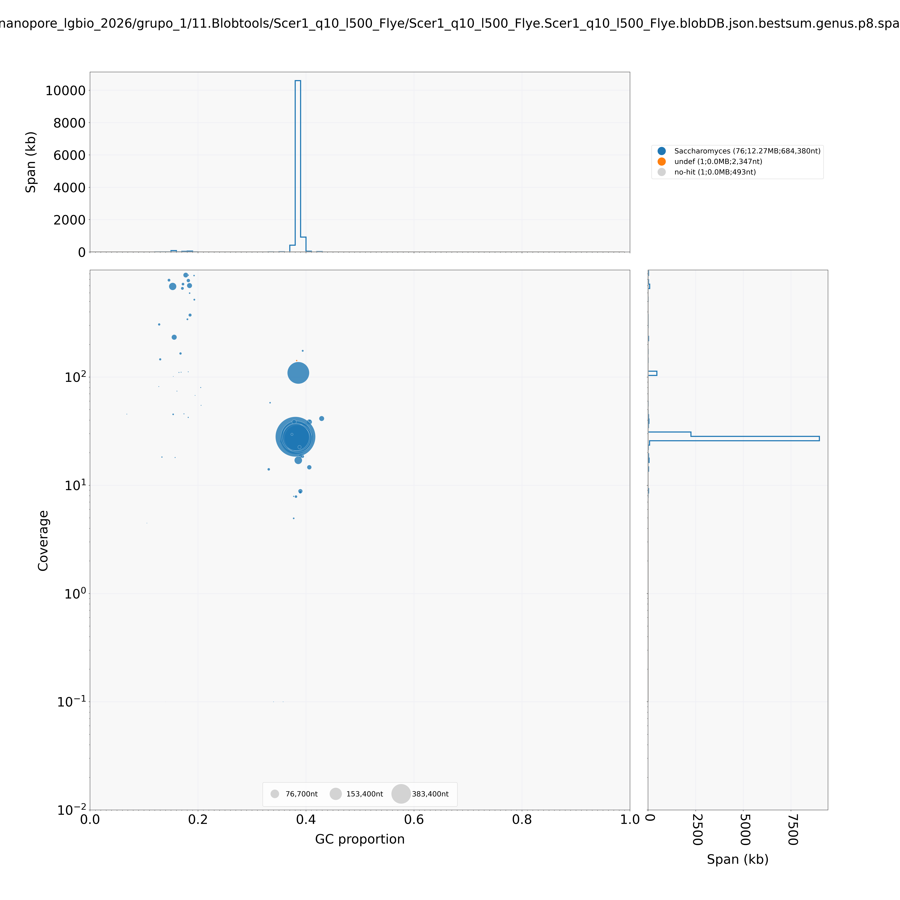
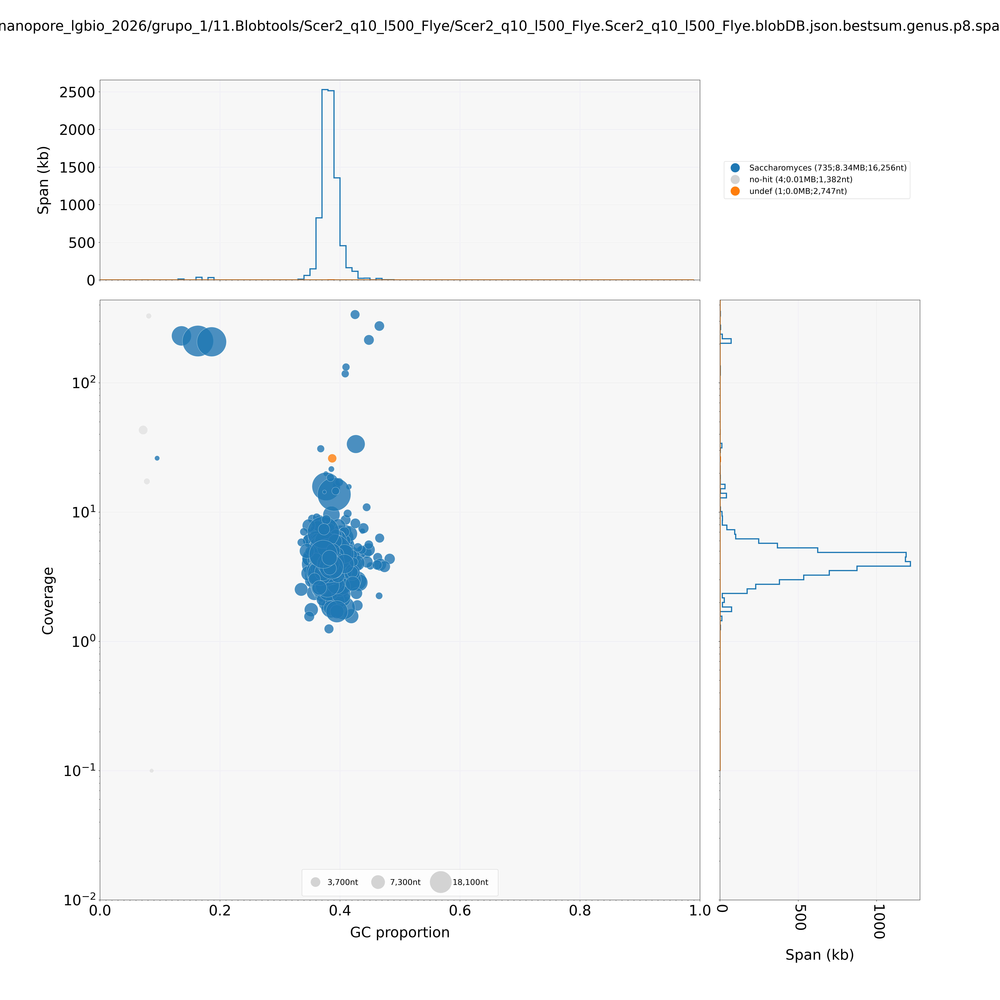

Montagem de genomas com dados Nanopore¶
Resumo
Tutorial prático de montagem de novo de genomas a partir de dados de sequenciamento Oxford Nanopore Technology (ONT). Cobrimos o pipeline completo: download dos dados públicos, controle de qualidade, filtragem, exploração de contaminantes (Kraken2), estimativa do genoma por k-mers (GenomeScope2), três estratégias de montagem (Flye, Hifiasm, NextDenovo), avaliação comparativa (QUAST, Merqury, BUSCO), polimento (Medaka), scaffolding com e sem referência (RagTag, LongStitch), escolha da montagem final e checagem de contaminação na montagem com BlobTools.
Autora: Profa. Renata de Oliveira Dias Instituição: Laboratório de Genética & Biodiversidade (LGBio) — Instituto de Ciências Biológicas (ICB) / Universidade Federal de Goiás (UFG) Contato: renata_dias@ufg.br Última atualização: Julho de 2026
Objetivos de aprendizagem¶
Ao final deste curso, você será capaz de:
- Baixar dados públicos de sequenciamento ONT de bancos como ENA/SRA
- Avaliar qualidade de leituras longas com NanoPlot
- Remover adaptadores residuais (Porechop_ABI) e filtrar por qualidade/tamanho (Chopper)
- Explorar contaminantes com Kraken2 e interpretar suas limitações
- Estimar parâmetros do genoma a partir de k-mers (Meryl + GenomeScope2)
- Executar e comparar montagens de novo com Flye, Hifiasm e NextDenovo
- Avaliar montagens com QUAST, Merqury e BUSCO e entender por que essas métricas podem discordar
- Polir montagens com Medaka e avaliar quando o polimento realmente ajuda
- Realizar scaffolding com referência (RagTag) e sem referência (LongStitch)
- Escolher a montagem final com base em múltiplas evidências, não em uma métrica isolada
- Checar contaminação diretamente na montagem com BlobTools
Carga horária estimada¶
~16 horas
Pré-requisitos¶
| Item | Detalhes |
|---|---|
| Curso anterior | Bash / Linux para bioinformática |
| Biologia molecular | Conceitos de sequenciamento, genoma, contig, scaffold |
| Softwares | SRA Toolkit, NanoPlot, Porechop_ABI, Chopper, Kraken2, Meryl, GenomeScope2, Flye, Hifiasm, NextDenovo, QUAST, Merqury, BUSCO, Medaka, RagTag, LongStitch, minimap2, samtools, BLAST+, BlobTools |
| Recurso | Servidor Linux com boa quantidade de RAM/threads e várias dezenas de GB de storage livre |
Dados do exercício¶
Utilizamos duas amostras de Saccharomyces cerevisiae sequenciadas com PromethION, depositadas no projeto PRJEB77686 (ScRAP — S. cerevisiae Reference Assembly Panel), parte do estudo de Loegler et al. (2025).
| Amostra | Accession | Linhagem | Bases | Read N50 |
|---|---|---|---|---|
| Scer1 | ERR13367646 | CBS7963 | ~1 Gb | 5.592 bp |
| Scer2 | ERR13375657 | SM.9.1.AL1 | ~108 Mb | 1.865 bp |
Atenção à cobertura
Scer2 tem cobertura muito baixa para montagem de qualidade. Essa amostra foi usada aqui apenas para fins didáticos e comparação entre montadores. Ao longo do tutorial ela serve de contraste: mesma metodologia, dados insuficientes.
Referência
Loegler V. et al. From genotype to phenotype with 1,086 near telomere-to-telomere yeast genomes. Nature (2025). DOI: 10.1038/s41586-025-08616-z
Acesso aos resultados pré-computados¶
Não conseguiu rodar localmente, ou quer conferir se seus resultados batem com os esperados? Os principais outputs deste tutorial estão disponíveis para download/visualização direta na página, próximos de cada etapa. Resumo dos principais:
-
Relatórios de QC
NanoPlot (bruto e filtrado), estatísticas Kraken2, GenomeScope2
-
Avaliação das montagens
QUAST, Merqury e BUSCO: antes e depois do polimento
-
Montagens (FASTA)
Flye, Hifiasm, NextDenovo, versões polidas e scaffolded
-
Blob plots (BlobTools)
Checagem de contaminação nas montagens finais
Etapa 1 — Obtenção dos dados públicos¶
Os dados estão disponíveis no ENA. O download pode ser feito via SRA Toolkit (prefetch + fasterq-dump) ou diretamente via FTP do ENA, que costuma ser mais rápido.
Opção 1 — SRA Toolkit (recomendado para arquivos grandes):
mkdir 0.DadosBrutos
prefetch ERR13367646 -O 0.DadosBrutos
fasterq-dump ERR13367646 --outdir 0.DadosBrutos --outfile Scer1.fastq --progress && gzip 0.DadosBrutos/Scer1.fastq
prefetch ERR13375657 -O 0.DadosBrutos
fasterq-dump ERR13375657 --outdir 0.DadosBrutos --outfile Scer2.fastq --progress && gzip 0.DadosBrutos/Scer2.fastq
Ver saída do comando
$ prefetch ERR13367646 -O 0.DadosBrutos
2026-06-04T14:11:41 prefetch.3.0.0: Current preference is set to retrieve SRA Normalized Format files with full base quality scores.
2026-06-04T14:11:42 prefetch.3.0.0: 1) Downloading 'ERR13367646'...
2026-06-04T14:11:42 prefetch.3.0.0: SRA Normalized Format file is being retrieved, if this is different from your preference, it may be due to current file availability.
2026-06-04T14:11:42 prefetch.3.0.0: Downloading via HTTPS...
2026-06-04T14:12:36 prefetch.3.0.0: HTTPS download succeed
2026-06-04T14:12:37 prefetch.3.0.0: 'ERR13367646' is valid
2026-06-04T14:12:37 prefetch.3.0.0: 1) 'ERR13367646' was downloaded successfully
2026-06-04T14:12:37 prefetch.3.0.0: 'ERR13367646' has 0 unresolved dependencies
$ fasterq-dump ERR13367646 --outdir 0.DadosBrutos --outfile Scer1.fastq --progress && gzip 0.DadosBrutos/Scer1.fastq
join :|-------------------------------------------------- 100%
concat :|-------------------------------------------------- 100%
spots read : 349,324
reads read : 349,324
reads written : 349,324
$ prefetch ERR13375657 -O 0.DadosBrutos
2026-06-04T14:12:12 prefetch.3.0.0: Current preference is set to retrieve SRA Normalized Format files with full base quality scores.
2026-06-04T14:12:12 prefetch.3.0.0: 1) Downloading 'ERR13375657'...
2026-06-04T14:12:12 prefetch.3.0.0: SRA Normalized Format file is being retrieved, if this is different from your preference, it may be due to current file availability.
2026-06-04T14:12:12 prefetch.3.0.0: Downloading via HTTPS...
2026-06-04T14:12:27 prefetch.3.0.0: HTTPS download succeed
2026-06-04T14:12:27 prefetch.3.0.0: 'ERR13375657' is valid
2026-06-04T14:12:27 prefetch.3.0.0: 1) 'ERR13375657' was downloaded successfully
2026-06-04T14:12:27 prefetch.3.0.0: 'ERR13375657' has 0 unresolved dependencies
$ fasterq-dump ERR13375657 --outdir 0.DadosBrutos --outfile Scer2.fastq --progress && gzip 0.DadosBrutos/Scer2.fastq
join :|-------------------------------------------------- 100%
concat :|-------------------------------------------------- 100%
spots read : 57,918
reads read : 57,918
reads written : 57,918
Opção 2 — wget direto do ENA (mais simples):
mkdir 0.DadosBrutos
wget -P 0.DadosBrutos ftp://ftp.sra.ebi.ac.uk/vol1/fastq/ERR133/046/ERR13367646/ERR13367646.fastq.gz
wget -P 0.DadosBrutos ftp://ftp.sra.ebi.ac.uk/vol1/fastq/ERR133/057/ERR13375657/ERR13375657.fastq.gz
# Renomear para padronizar
mv 0.DadosBrutos/ERR13367646.fastq.gz 0.DadosBrutos/Scer1.fastq.gz
mv 0.DadosBrutos/ERR13375657.fastq.gz 0.DadosBrutos/Scer2.fastq.gz
Verificar integridade após o download:
gzip -t 0.DadosBrutos/Scer1.fastq.gz && echo "OK" || echo "CORROMPIDO"
gzip -t 0.DadosBrutos/Scer2.fastq.gz && echo "OK" || echo "CORROMPIDO"
Etapa 2 — Controle de qualidade dos dados brutos (NanoPlot)¶
O NanoPlot gera estatísticas e gráficos interativos para avaliar a qualidade das reads antes de qualquer processamento.
mkdir 1.QC_dadosbrutos/
NanoPlot --fastq 0.DadosBrutos/Scer1.fastq.gz -o 1.QC_dadosbrutos/ --prefix Scer1_ --threads 20 --loglength
NanoPlot --fastq 0.DadosBrutos/Scer2.fastq.gz -o 1.QC_dadosbrutos/ --prefix Scer2_ --threads 20 --loglength
Visualizar estatísticas
O que observar: - N50: tamanho da read mediana ponderada (quanto maior, melhor para montagem) - Mean quality: qualidade média das bases (Q≥10 é aceitável para Nanopore R9.4) - Total bases: cobertura estimada (divida pelo tamanho do genoma ~12Mb) - Compare Scer1 (~1Gb, ~83x) e Scer2 (~108Mb, ~9x). Como veremos ao longo desse tutorial, a diferença de cobertura vai impactar diretamente a qualidade das montagens.Resultados pré-computados
Scer1_NanoStats.txt · Scer2_NanoStats.txt · Relatório NanoPlot Scer1 (HTML) · Relatório NanoPlot Scer2 (HTML)
Etapa 3 — Filtragem dos dados brutos de sequenciamento¶
Esta etapa é dividida em duas partes: remoção de adaptadores residuais e filtro por qualidade/tamanho.
3.1 Remoção de adaptadores (Porechop_ABI)¶
O Porechop_ABI usa uma abordagem ab initio. Ele descobre os adaptadores diretamente nas reads sem precisar de um banco de dados externo, o que é útil quando o kit de sequenciamento não é conhecido.
Atenção aos avisos
Mensagens como "this file is already trimmed" indicam que o basecaller (Dorado) já removeu parte dos adaptadores. O Porechop_ABI ainda consegue remover resíduos remanescentes. Veja no resultado que adaptadores SQK-NSK007 foram encontrados e removidos em ambas as amostras.
mkdir 2.Filtragem-dadosbrutos
conda activate porechop_abi_env
porechop_abi -abi -i 0.DadosBrutos/Scer1.fastq.gz -o 2.Filtragem-dadosbrutos/Scer1_trim.fastq.gz --format fastq -t 20
porechop_abi -abi -i 0.DadosBrutos/Scer2.fastq.gz -o 2.Filtragem-dadosbrutos/Scer2_trim.fastq.gz --format fastq -t 20
conda deactivate
Ver saída do comando
$ porechop_abi -abi -i 0.DadosBrutos/Scer1.fastq.gz -o 2.Filtragem-dadosbrutos/Scer1_trim.fastq.gz --format fastq -t 20 && gzip 2.Filtragem-dadosbrutos/Scer1_trim.fastq
Ab Initio Phase
Starting with a 10 run batch.
Using config file:/home/lgbio/programas/porechop_abi/Porechop_ABI/porechop_abi/ab_initio.config
Command line:
/home/lgbio/programas/porechop_abi/Porechop_ABI/porechop_abi/approx_counter 0.DadosBrutos/Scer1.fastq.gz -v 1 --config /home/lgbio/programas/porechop_abi/Porechop_ABI/porechop_abi/ab_initio.config -o ./tmp/temp_approx_kmer_count -nt 20 -mr 10
Kmer size: 16
Sampled sequences: 40000
Sampling length 100
LC filter threshold: 1
Adjusted LC threshold: 1
Nb thread: 20
Number of kept kmer: 500
Number of runs: 10
Verbosity level: 1
A total of 10 runs will be performed.
[21.4468 ms] Parsing FASTA file
[14110.8 ms] Number of sequences found: 349324.
Starting run number 1
[14110.9 ms] Working on sequence start.
[22318.3 ms] Working on sequence end.
Starting run number 2
[31521.1 ms] Working on sequence start.
[40071.6 ms] Working on sequence end.
Starting run number 3
[49241.3 ms] Working on sequence start.
[57415.3 ms] Working on sequence end.
Starting run number 4
[65462.7 ms] Working on sequence start.
[73059.5 ms] Working on sequence end.
Starting run number 5
[81048.3 ms] Working on sequence start.
[88638.3 ms] Working on sequence end.
Starting run number 6
[96465.9 ms] Working on sequence start.
[103926 ms] Working on sequence end.
Starting run number 7
[111753 ms] Working on sequence start.
[119311 ms] Working on sequence end.
Starting run number 8
[127136 ms] Working on sequence start.
[134808 ms] Working on sequence end.
Starting run number 9
[142571 ms] Working on sequence start.
[150202 ms] Working on sequence end.
Starting run number 10
[158074 ms] Working on sequence start.
[165591 ms] Working on sequence end.
Assembling run 1
/!\ The most frequent kmer has been found in less than 10% of the reads starts after approximate count (2.3125%)
/!\ It could mean this file is already trimmed or the sample do not contains detectable adapters.
/!\ The most frequent kmer has been found in less than 10% of the reads ends after approximate count (5.1175%)
/!\ It could mean this file is already trimmed or the sample do not contains detectable adapters.
Assembling run 2
/!\ The most frequent kmer has been found in less than 10% of the reads starts after approximate count (2.215%)
/!\ It could mean this file is already trimmed or the sample do not contains detectable adapters.
/!\ The most frequent kmer has been found in less than 10% of the reads ends after approximate count (5.015%)
/!\ It could mean this file is already trimmed or the sample do not contains detectable adapters.
Assembling run 3
/!\ The most frequent kmer has been found in less than 10% of the reads starts after approximate count (2.39%)
/!\ It could mean this file is already trimmed or the sample do not contains detectable adapters.
/!\ The most frequent kmer has been found in less than 10% of the reads ends after approximate count (4.9225%)
/!\ It could mean this file is already trimmed or the sample do not contains detectable adapters.
Assembling run 4
/!\ The most frequent kmer has been found in less than 10% of the reads starts after approximate count (2.28%)
/!\ It could mean this file is already trimmed or the sample do not contains detectable adapters.
/!\ The most frequent kmer has been found in less than 10% of the reads ends after approximate count (5.11%)
/!\ It could mean this file is already trimmed or the sample do not contains detectable adapters.
Assembling run 5
/!\ The most frequent kmer has been found in less than 10% of the reads starts after approximate count (2.4475%)
/!\ It could mean this file is already trimmed or the sample do not contains detectable adapters.
/!\ The most frequent kmer has been found in less than 10% of the reads ends after approximate count (5.0525%)
/!\ It could mean this file is already trimmed or the sample do not contains detectable adapters.
Assembling run 6
/!\ The most frequent kmer has been found in less than 10% of the reads starts after approximate count (2.3275%)
/!\ It could mean this file is already trimmed or the sample do not contains detectable adapters.
/!\ The most frequent kmer has been found in less than 10% of the reads ends after approximate count (5.08%)
/!\ It could mean this file is already trimmed or the sample do not contains detectable adapters.
Assembling run 7
/!\ The most frequent kmer has been found in less than 10% of the reads starts after approximate count (2.17%)
/!\ It could mean this file is already trimmed or the sample do not contains detectable adapters.
/!\ The most frequent kmer has been found in less than 10% of the reads ends after approximate count (5.045%)
/!\ It could mean this file is already trimmed or the sample do not contains detectable adapters.
Assembling run 8
/!\ The most frequent kmer has been found in less than 10% of the reads starts after approximate count (2.4975%)
/!\ It could mean this file is already trimmed or the sample do not contains detectable adapters.
/!\ The most frequent kmer has been found in less than 10% of the reads ends after approximate count (4.995%)
/!\ It could mean this file is already trimmed or the sample do not contains detectable adapters.
Assembling run 9
/!\ The most frequent kmer has been found in less than 10% of the reads starts after approximate count (2.3825%)
/!\ It could mean this file is already trimmed or the sample do not contains detectable adapters.
/!\ The most frequent kmer has been found in less than 10% of the reads ends after approximate count (5.0475%)
/!\ It could mean this file is already trimmed or the sample do not contains detectable adapters.
Assembling run 10
/!\ The most frequent kmer has been found in less than 10% of the reads starts after approximate count (2.1575%)
/!\ It could mean this file is already trimmed or the sample do not contains detectable adapters.
/!\ The most frequent kmer has been found in less than 10% of the reads ends after approximate count (4.8975%)
/!\ It could mean this file is already trimmed or the sample do not contains detectable adapters.
/!\ The adapters currently found are not all identical.
/!\ A consensus will be made.
/!\ Launching 20 additional runs to build a consensus.
Following with a 20 run batch.
Using config file:/home/lgbio/programas/porechop_abi/Porechop_ABI/porechop_abi/ab_initio.config
Command line:
/home/lgbio/programas/porechop_abi/Porechop_ABI/porechop_abi/approx_counter 0.DadosBrutos/Scer1.fastq.gz -v 1 --config /home/lgbio/programas/porechop_abi/Porechop_ABI/porechop_abi/ab_initio.config -o ./tmp/temp_approx_kmer_count_sup -nt 20 -mr 20
Kmer size: 16
Sampled sequences: 40000
Sampling length 100
LC filter threshold: 1
Adjusted LC threshold: 1
Nb thread: 20
Number of kept kmer: 500
Number of runs: 20
Verbosity level: 1
A total of 20 runs will be performed.
[25.7354 ms] Parsing FASTA file
[14215.9 ms] Number of sequences found: 349324.
Starting run number 1
[14215.9 ms] Working on sequence start.
[22113.4 ms] Working on sequence end.
Starting run number 2
[29869.4 ms] Working on sequence start.
[37435.9 ms] Working on sequence end.
Starting run number 3
[45264.3 ms] Working on sequence start.
[52890.6 ms] Working on sequence end.
Starting run number 4
[60605.3 ms] Working on sequence start.
[68172.1 ms] Working on sequence end.
Starting run number 5
[76098.1 ms] Working on sequence start.
[83774.6 ms] Working on sequence end.
Starting run number 6
[91571.2 ms] Working on sequence start.
[99436.1 ms] Working on sequence end.
Starting run number 7
[108804 ms] Working on sequence start.
[117528 ms] Working on sequence end.
Starting run number 8
[126774 ms] Working on sequence start.
[134599 ms] Working on sequence end.
Starting run number 9
[142501 ms] Working on sequence start.
[149933 ms] Working on sequence end.
Starting run number 10
[157774 ms] Working on sequence start.
[165387 ms] Working on sequence end.
Starting run number 11
[173340 ms] Working on sequence start.
[181025 ms] Working on sequence end.
Starting run number 12
[189132 ms] Working on sequence start.
[196879 ms] Working on sequence end.
Starting run number 13
[204648 ms] Working on sequence start.
[212251 ms] Working on sequence end.
Starting run number 14
[220225 ms] Working on sequence start.
[227699 ms] Working on sequence end.
Starting run number 15
[235864 ms] Working on sequence start.
[243914 ms] Working on sequence end.
Starting run number 16
[251873 ms] Working on sequence start.
[259489 ms] Working on sequence end.
Starting run number 17
[267158 ms] Working on sequence start.
[275342 ms] Working on sequence end.
Starting run number 18
[283498 ms] Working on sequence start.
[291669 ms] Working on sequence end.
Starting run number 19
[299825 ms] Working on sequence start.
[307689 ms] Working on sequence end.
Starting run number 20
[316329 ms] Working on sequence start.
[323925 ms] Working on sequence end.
Assembling run 1
/!\ The most frequent kmer has been found in less than 10% of the reads starts after approximate count (2.425%)
/!\ It could mean this file is already trimmed or the sample do not contains detectable adapters.
/!\ The most frequent kmer has been found in less than 10% of the reads ends after approximate count (5.0625%)
/!\ It could mean this file is already trimmed or the sample do not contains detectable adapters.
Assembling run 2
/!\ The most frequent kmer has been found in less than 10% of the reads starts after approximate count (2.43%)
/!\ It could mean this file is already trimmed or the sample do not contains detectable adapters.
/!\ The most frequent kmer has been found in less than 10% of the reads ends after approximate count (5.2075%)
/!\ It could mean this file is already trimmed or the sample do not contains detectable adapters.
Assembling run 3
/!\ The most frequent kmer has been found in less than 10% of the reads starts after approximate count (2.2625%)
/!\ It could mean this file is already trimmed or the sample do not contains detectable adapters.
/!\ The most frequent kmer has been found in less than 10% of the reads ends after approximate count (4.97%)
/!\ It could mean this file is already trimmed or the sample do not contains detectable adapters.
Assembling run 4
/!\ The most frequent kmer has been found in less than 10% of the reads starts after approximate count (2.505%)
/!\ It could mean this file is already trimmed or the sample do not contains detectable adapters.
/!\ The most frequent kmer has been found in less than 10% of the reads ends after approximate count (4.94%)
/!\ It could mean this file is already trimmed or the sample do not contains detectable adapters.
Assembling run 5
/!\ The most frequent kmer has been found in less than 10% of the reads starts after approximate count (2.3475%)
/!\ It could mean this file is already trimmed or the sample do not contains detectable adapters.
/!\ The most frequent kmer has been found in less than 10% of the reads ends after approximate count (4.8975%)
/!\ It could mean this file is already trimmed or the sample do not contains detectable adapters.
Assembling run 6
/!\ The most frequent kmer has been found in less than 10% of the reads starts after approximate count (2.4625%)
/!\ It could mean this file is already trimmed or the sample do not contains detectable adapters.
/!\ The most frequent kmer has been found in less than 10% of the reads ends after approximate count (5.15%)
/!\ It could mean this file is already trimmed or the sample do not contains detectable adapters.
Assembling run 7
/!\ The most frequent kmer has been found in less than 10% of the reads starts after approximate count (2.2475%)
/!\ It could mean this file is already trimmed or the sample do not contains detectable adapters.
/!\ The most frequent kmer has been found in less than 10% of the reads ends after approximate count (5.055%)
/!\ It could mean this file is already trimmed or the sample do not contains detectable adapters.
Assembling run 8
/!\ The most frequent kmer has been found in less than 10% of the reads starts after approximate count (2.405%)
/!\ It could mean this file is already trimmed or the sample do not contains detectable adapters.
/!\ The most frequent kmer has been found in less than 10% of the reads ends after approximate count (5.0525%)
/!\ It could mean this file is already trimmed or the sample do not contains detectable adapters.
Assembling run 9
/!\ The most frequent kmer has been found in less than 10% of the reads starts after approximate count (2.175%)
/!\ It could mean this file is already trimmed or the sample do not contains detectable adapters.
/!\ The most frequent kmer has been found in less than 10% of the reads ends after approximate count (5.085%)
/!\ It could mean this file is already trimmed or the sample do not contains detectable adapters.
Assembling run 10
/!\ The most frequent kmer has been found in less than 10% of the reads starts after approximate count (2.465%)
/!\ It could mean this file is already trimmed or the sample do not contains detectable adapters.
/!\ The most frequent kmer has been found in less than 10% of the reads ends after approximate count (4.8175%)
/!\ It could mean this file is already trimmed or the sample do not contains detectable adapters.
Assembling run 11
/!\ The most frequent kmer has been found in less than 10% of the reads starts after approximate count (2.38%)
/!\ It could mean this file is already trimmed or the sample do not contains detectable adapters.
/!\ The most frequent kmer has been found in less than 10% of the reads ends after approximate count (5.0625%)
/!\ It could mean this file is already trimmed or the sample do not contains detectable adapters.
Assembling run 12
/!\ The most frequent kmer has been found in less than 10% of the reads starts after approximate count (2.2%)
/!\ It could mean this file is already trimmed or the sample do not contains detectable adapters.
/!\ The most frequent kmer has been found in less than 10% of the reads ends after approximate count (5.0975%)
/!\ It could mean this file is already trimmed or the sample do not contains detectable adapters.
Assembling run 13
/!\ The most frequent kmer has been found in less than 10% of the reads starts after approximate count (2.2925%)
/!\ It could mean this file is already trimmed or the sample do not contains detectable adapters.
/!\ The most frequent kmer has been found in less than 10% of the reads ends after approximate count (4.9775%)
/!\ It could mean this file is already trimmed or the sample do not contains detectable adapters.
Assembling run 14
/!\ The most frequent kmer has been found in less than 10% of the reads starts after approximate count (2.3625%)
/!\ It could mean this file is already trimmed or the sample do not contains detectable adapters.
/!\ The most frequent kmer has been found in less than 10% of the reads ends after approximate count (5.42%)
/!\ It could mean this file is already trimmed or the sample do not contains detectable adapters.
Assembling run 15
/!\ The most frequent kmer has been found in less than 10% of the reads starts after approximate count (2.2725%)
/!\ It could mean this file is already trimmed or the sample do not contains detectable adapters.
/!\ The most frequent kmer has been found in less than 10% of the reads ends after approximate count (5.1775%)
/!\ It could mean this file is already trimmed or the sample do not contains detectable adapters.
Assembling run 16
/!\ The most frequent kmer has been found in less than 10% of the reads starts after approximate count (2.2325%)
/!\ It could mean this file is already trimmed or the sample do not contains detectable adapters.
/!\ The most frequent kmer has been found in less than 10% of the reads ends after approximate count (4.995%)
/!\ It could mean this file is already trimmed or the sample do not contains detectable adapters.
Assembling run 17
/!\ The most frequent kmer has been found in less than 10% of the reads starts after approximate count (2.2825%)
/!\ It could mean this file is already trimmed or the sample do not contains detectable adapters.
/!\ The most frequent kmer has been found in less than 10% of the reads ends after approximate count (5.2975%)
/!\ It could mean this file is already trimmed or the sample do not contains detectable adapters.
Assembling run 18
/!\ The most frequent kmer has been found in less than 10% of the reads starts after approximate count (2.4025%)
/!\ It could mean this file is already trimmed or the sample do not contains detectable adapters.
/!\ The most frequent kmer has been found in less than 10% of the reads ends after approximate count (4.905%)
/!\ It could mean this file is already trimmed or the sample do not contains detectable adapters.
Assembling run 19
/!\ The most frequent kmer has been found in less than 10% of the reads starts after approximate count (2.21%)
/!\ It could mean this file is already trimmed or the sample do not contains detectable adapters.
/!\ The most frequent kmer has been found in less than 10% of the reads ends after approximate count (5.1525%)
/!\ It could mean this file is already trimmed or the sample do not contains detectable adapters.
Assembling run 20
/!\ The most frequent kmer has been found in less than 10% of the reads starts after approximate count (2.16%)
/!\ It could mean this file is already trimmed or the sample do not contains detectable adapters.
/!\ The most frequent kmer has been found in less than 10% of the reads ends after approximate count (5.095%)
/!\ It could mean this file is already trimmed or the sample do not contains detectable adapters.
Consensus step done
/!\ Frequency warning triggered by 30/30 runs for start adapters
/!\ Frequency warning triggered by 30/30 runs for end adapters
Rebuild adapters:
Start
Consensus_1_start_(100.0%)
GTACTTCGTTCAGTTACGTATTGCTAAGGTTAACCTGGGAGCATCAGGT
End
Consensus_1_end_(100.0%)
AGGTGCTGCTGTTACTACCTGATGCTCCCAGGTTAACCTTAGCAATACGTAACTTA
Building consensus adapter objects
The inference of adapters sequence is done.
Loading reads
0.DadosBrutos/Scer1.fastq.gz
349,324 reads loaded
Looking for known adapter sets
10,000 / 10,000 (100.0%)
Best
read Best
start read end
Set %ID %ID
SQK-NSK007 96.6 81.8
Rapid 68.5 0.0
RBK004_upstream 76.9 0.0
SQK-MAP006 78.6 82.6
SQK-MAP006 short 74.1 75.9
PCR adapters 1 78.3 83.3
PCR adapters 2 81.8 82.6
PCR adapters 3 79.2 78.3
1D^2 part 1 75.0 73.3
1D^2 part 2 85.3 80.6
cDNA SSP 73.7 70.5
Barcode 1 (reverse) 84.0 80.0
Barcode 2 (reverse) 79.2 83.3
Barcode 3 (reverse) 76.9 75.0
Barcode 4 (reverse) 77.8 76.9
Barcode 5 (reverse) 80.0 77.8
Barcode 6 (reverse) 76.9 76.9
Barcode 7 (reverse) 80.0 76.9
Barcode 8 (reverse) 80.0 76.9
Barcode 9 (reverse) 79.2 76.9
Barcode 10 (reverse) 80.0 81.5
Barcode 11 (reverse) 76.9 80.0
Barcode 12 (reverse) 80.0 79.2
Barcode 1 (forward) 77.8 80.0
Barcode 2 (forward) 79.2 80.0
Barcode 3 (forward) 76.0 77.8
Barcode 4 (forward) 79.2 76.0
Barcode 5 (forward) 80.8 79.2
Barcode 6 (forward) 76.0 80.0
Barcode 7 (forward) 80.8 79.2
Barcode 8 (forward) 79.2 80.0
Barcode 9 (forward) 77.8 77.8
Barcode 10 (forward) 80.0 76.9
Barcode 11 (forward) 77.8 80.8
Barcode 12 (forward) 79.2 80.8
Barcode 13 (forward) 79.2 76.9
Barcode 14 (forward) 77.8 80.0
Barcode 15 (forward) 76.0 84.6
Barcode 16 (forward) 79.2 79.2
Barcode 17 (forward) 80.0 79.2
Barcode 18 (forward) 77.8 80.0
Barcode 19 (forward) 79.2 80.0
Barcode 20 (forward) 76.0 80.8
Barcode 21 (forward) 80.0 76.9
Barcode 22 (forward) 76.9 80.0
Barcode 23 (forward) 77.8 77.8
Barcode 24 (forward) 76.0 92.3
Barcode 25 (forward) 77.8 79.2
Barcode 26 (forward) 80.0 80.0
Barcode 27 (forward) 76.0 83.3
Barcode 28 (forward) 76.0 79.2
Barcode 29 (forward) 76.9 76.0
Barcode 30 (forward) 76.9 76.9
Barcode 31 (forward) 79.2 76.9
Barcode 32 (forward) 76.9 80.0
Barcode 33 (forward) 76.0 79.2
Barcode 34 (forward) 80.0 79.2
Barcode 35 (forward) 80.8 76.0
Barcode 36 (forward) 80.0 79.2
Barcode 37 (forward) 79.2 79.2
Barcode 38 (forward) 81.5 79.2
Barcode 39 (forward) 76.9 76.9
Barcode 40 (forward) 79.2 76.0
Barcode 41 (forward) 76.0 79.2
Barcode 42 (forward) 76.9 76.9
Barcode 43 (forward) 77.8 76.9
Barcode 44 (forward) 76.0 75.0
Barcode 45 (forward) 77.8 76.9
Barcode 46 (forward) 80.0 76.0
Barcode 47 (forward) 76.0 79.2
Barcode 48 (forward) 79.2 83.3
Barcode 49 (forward) 80.8 76.9
Barcode 50 (forward) 77.8 76.9
Barcode 51 (forward) 76.9 79.2
Barcode 52 (forward) 84.0 80.0
Barcode 53 (forward) 76.9 76.0
Barcode 54 (forward) 78.6 80.0
Barcode 55 (forward) 76.0 79.2
Barcode 56 (forward) 76.9 80.0
Barcode 57 (forward) 76.0 77.8
Barcode 58 (forward) 80.0 76.9
Barcode 59 (forward) 79.2 88.0
Barcode 60 (forward) 79.2 79.2
Barcode 61 (forward) 76.9 76.9
Barcode 62 (forward) 75.0 76.0
Barcode 63 (forward) 76.0 83.3
Barcode 64 (forward) 80.0 76.0
Barcode 65 (forward) 80.0 79.2
Barcode 66 (forward) 76.9 76.0
Barcode 67 (forward) 76.0 76.0
Barcode 68 (forward) 77.8 76.0
Barcode 69 (forward) 80.0 79.2
Barcode 70 (forward) 76.0 76.0
Barcode 71 (forward) 100.0 100.0
Barcode 72 (forward) 79.2 79.2
Barcode 73 (forward) 76.9 80.0
Barcode 74 (forward) 80.0 80.0
Barcode 75 (forward) 76.9 78.6
Barcode 76 (forward) 76.9 77.8
Barcode 77 (forward) 75.0 80.0
Barcode 78 (forward) 80.0 77.8
Barcode 79 (forward) 76.9 79.2
Barcode 80 (forward) 80.8 76.9
Barcode 81 (forward) 78.6 79.2
Barcode 82 (forward) 77.8 79.2
Barcode 83 (forward) 76.0 76.9
Barcode 84 (forward) 79.2 76.9
Barcode 85 (forward) 76.0 79.2
Barcode 86 (forward) 76.9 76.0
Barcode 87 (forward) 75.0 77.8
Barcode 88 (forward) 80.0 80.8
Barcode 89 (forward) 80.8 77.8
Barcode 90 (forward) 76.0 75.0
Barcode 91 (forward) 75.0 76.9
Barcode 92 (forward) 80.0 79.2
Barcode 93 (forward) 80.0 80.0
Barcode 94 (forward) 76.9 75.0
Barcode 95 (forward) 80.0 79.2
Barcode 96 (forward) 76.9 79.2
Consensus_1_start_(100.0%)_adapter 94.0 0.0
Consensus_1_end_(100.0%)_adapter 0.0 86.0
Trimming adapters from read ends
SQK-NSK007_Y_Top: AATGTACTTCGTTCAGTTACGTATTGCT
SQK-NSK007_Y_Bottom: GCAATACGTAACTGAACGAAGT
BC24: GCATAGTTCTGCATGATGGGTTAG
BC24_rev: CTAACCCATCATGCAGAACTATGC
BC71: CCTGGGAGCATCAGGTAGTAACAG
BC71_rev: CTGTTACTACCTGATGCTCCCAGG
Consensus_1_start_(100.0%): GTACTTCGTTCAGTTACGTATTGCTAAGGTTAACCTGGGAGCATCAGGT
349,324 / 349,324 (100.0%)
40,770 / 349,324 reads had adapters trimmed from their start (572,257 bp removed)
55,520 / 349,324 reads had adapters trimmed from their end (860,293 bp removed)
Splitting reads containing middle adapters
349,324 / 349,324 (100.0%)
739 / 349,324 reads were split based on middle adapters
Saving trimmed reads to file
Saved result to /media/lgbio-nas1/renatadias/curso-nanopore/2.Filtragem-dadosbrutos/Scer1_trim.fastq.gz
####
porechop_abi -abi -i 0.DadosBrutos/Scer2.fastq.gz -o 2.Filtragem-dadosbrutos/Scer2_trim.fastq.gz --format fastq -t 20 && gzip 2.Filtragem-dadosbrutos/Scer2_trim.fastq
Ab Initio Phase
Starting with a 10 run batch.
Using config file:/home/lgbio/programas/porechop_abi/Porechop_ABI/porechop_abi/ab_initio.config
Command line:
/home/lgbio/programas/porechop_abi/Porechop_ABI/porechop_abi/approx_counter 0.DadosBrutos/Scer2.fastq.gz -v 1 --config /home/lgbio/programas/porechop_abi/Porechop_ABI/porechop_abi/ab_initio.config -o ./tmp/temp_approx_kmer_count -nt 20 -mr 10
Kmer size: 16
Sampled sequences: 40000
Sampling length 100
LC filter threshold: 1
Adjusted LC threshold: 1
Nb thread: 20
Number of kept kmer: 500
Number of runs: 10
Verbosity level: 1
A total of 10 runs will be performed.
[16.4298 ms] Parsing FASTA file
[1589.24 ms] Number of sequences found: 57918.
Starting run number 1
[1589.31 ms] Working on sequence start.
[9765.63 ms] Working on sequence end.
Starting run number 2
[18117.4 ms] Working on sequence start.
[26095.7 ms] Working on sequence end.
Starting run number 3
[34462.3 ms] Working on sequence start.
[42472 ms] Working on sequence end.
Starting run number 4
[50624 ms] Working on sequence start.
[58573.2 ms] Working on sequence end.
Starting run number 5
[66899.8 ms] Working on sequence start.
[74878 ms] Working on sequence end.
Starting run number 6
[83553.4 ms] Working on sequence start.
[92333.3 ms] Working on sequence end.
Starting run number 7
[100981 ms] Working on sequence start.
[109052 ms] Working on sequence end.
Starting run number 8
[117444 ms] Working on sequence start.
[125616 ms] Working on sequence end.
Starting run number 9
[133919 ms] Working on sequence start.
[141910 ms] Working on sequence end.
Starting run number 10
[150151 ms] Working on sequence start.
[157967 ms] Working on sequence end.
Assembling run 1
/!\ The most frequent kmer has been found in less than 10% of the reads starts after approximate count (2.3125%)
/!\ It could mean this file is already trimmed or the sample do not contains detectable adapters.
/!\ The most frequent kmer has been found in less than 10% of the reads ends after approximate count (5.1175%)
/!\ It could mean this file is already trimmed or the sample do not contains detectable adapters.
Assembling run 2
/!\ The most frequent kmer has been found in less than 10% of the reads starts after approximate count (2.215%)
/!\ It could mean this file is already trimmed or the sample do not contains detectable adapters.
/!\ The most frequent kmer has been found in less than 10% of the reads ends after approximate count (5.015%)
/!\ It could mean this file is already trimmed or the sample do not contains detectable adapters.
Assembling run 3
/!\ The most frequent kmer has been found in less than 10% of the reads starts after approximate count (2.39%)
/!\ It could mean this file is already trimmed or the sample do not contains detectable adapters.
/!\ The most frequent kmer has been found in less than 10% of the reads ends after approximate count (4.9225%)
/!\ It could mean this file is already trimmed or the sample do not contains detectable adapters.
Assembling run 4
/!\ The most frequent kmer has been found in less than 10% of the reads starts after approximate count (2.28%)
/!\ It could mean this file is already trimmed or the sample do not contains detectable adapters.
/!\ The most frequent kmer has been found in less than 10% of the reads ends after approximate count (5.11%)
/!\ It could mean this file is already trimmed or the sample do not contains detectable adapters.
Assembling run 5
/!\ The most frequent kmer has been found in less than 10% of the reads starts after approximate count (2.4475%)
/!\ It could mean this file is already trimmed or the sample do not contains detectable adapters.
/!\ The most frequent kmer has been found in less than 10% of the reads ends after approximate count (5.0525%)
/!\ It could mean this file is already trimmed or the sample do not contains detectable adapters.
Assembling run 6
/!\ The most frequent kmer has been found in less than 10% of the reads starts after approximate count (2.3275%)
/!\ It could mean this file is already trimmed or the sample do not contains detectable adapters.
/!\ The most frequent kmer has been found in less than 10% of the reads ends after approximate count (5.08%)
/!\ It could mean this file is already trimmed or the sample do not contains detectable adapters.
Assembling run 7
/!\ The most frequent kmer has been found in less than 10% of the reads starts after approximate count (2.17%)
/!\ It could mean this file is already trimmed or the sample do not contains detectable adapters.
/!\ The most frequent kmer has been found in less than 10% of the reads ends after approximate count (5.045%)
/!\ It could mean this file is already trimmed or the sample do not contains detectable adapters.
Assembling run 8
/!\ The most frequent kmer has been found in less than 10% of the reads starts after approximate count (2.4975%)
/!\ It could mean this file is already trimmed or the sample do not contains detectable adapters.
/!\ The most frequent kmer has been found in less than 10% of the reads ends after approximate count (4.995%)
/!\ It could mean this file is already trimmed or the sample do not contains detectable adapters.
Assembling run 9
/!\ The most frequent kmer has been found in less than 10% of the reads starts after approximate count (2.3825%)
/!\ It could mean this file is already trimmed or the sample do not contains detectable adapters.
/!\ The most frequent kmer has been found in less than 10% of the reads ends after approximate count (5.0475%)
/!\ It could mean this file is already trimmed or the sample do not contains detectable adapters.
Assembling run 10
/!\ The most frequent kmer has been found in less than 10% of the reads starts after approximate count (2.315%)
/!\ It could mean this file is already trimmed or the sample do not contains detectable adapters.
/!\ The most frequent kmer has been found in less than 10% of the reads ends after approximate count (4.835%)
/!\ It could mean this file is already trimmed or the sample do not contains detectable adapters.
/!\ The adapters currently found are not all identical.
/!\ A consensus will be made.
/!\ Launching 20 additional runs to build a consensus.
Following with a 20 run batch.
Using config file:/home/lgbio/programas/porechop_abi/Porechop_ABI/porechop_abi/ab_initio.config
Command line:
/home/lgbio/programas/porechop_abi/Porechop_ABI/porechop_abi/approx_counter 0.DadosBrutos/Scer2.fastq.gz -v 1 --config /home/lgbio/programas/porechop_abi/Porechop_ABI/porechop_abi/ab_initio.config -o ./tmp/temp_approx_kmer_count_sup -nt 20 -mr 20
Kmer size: 16
Sampled sequences: 40000
Sampling length 100
LC filter threshold: 1
Adjusted LC threshold: 1
Nb thread: 20
Number of kept kmer: 500
Number of runs: 20
Verbosity level: 1
A total of 20 runs will be performed.
[17.3946 ms] Parsing FASTA file
[1585.55 ms] Number of sequences found: 57918.
Starting run number 1
[1585.59 ms] Working on sequence start.
[9568.51 ms] Working on sequence end.
Starting run number 2
[17710.3 ms] Working on sequence start.
[25479.1 ms] Working on sequence end.
Starting run number 3
[33575.1 ms] Working on sequence start.
[41757.3 ms] Working on sequence end.
Starting run number 4
[49839.5 ms] Working on sequence start.
[57713.9 ms] Working on sequence end.
Starting run number 5
[65781.7 ms] Working on sequence start.
[73809 ms] Working on sequence end.
Starting run number 6
[81993.1 ms] Working on sequence start.
[89834.7 ms] Working on sequence end.
Starting run number 7
[97854.9 ms] Working on sequence start.
[106005 ms] Working on sequence end.
Starting run number 8
[115672 ms] Working on sequence start.
[123409 ms] Working on sequence end.
Starting run number 9
[131425 ms] Working on sequence start.
[139101 ms] Working on sequence end.
Starting run number 10
[147107 ms] Working on sequence start.
[154984 ms] Working on sequence end.
Starting run number 11
[163193 ms] Working on sequence start.
[171475 ms] Working on sequence end.
Starting run number 12
[179717 ms] Working on sequence start.
[187427 ms] Working on sequence end.
Starting run number 13
[195547 ms] Working on sequence start.
[203773 ms] Working on sequence end.
Starting run number 14
[211724 ms] Working on sequence start.
[219693 ms] Working on sequence end.
Starting run number 15
[228202 ms] Working on sequence start.
[236211 ms] Working on sequence end.
Starting run number 16
[244346 ms] Working on sequence start.
[252378 ms] Working on sequence end.
Starting run number 17
[260652 ms] Working on sequence start.
[268446 ms] Working on sequence end.
Starting run number 18
[277681 ms] Working on sequence start.
[285523 ms] Working on sequence end.
Starting run number 19
[294005 ms] Working on sequence start.
[301827 ms] Working on sequence end.
Starting run number 20
[310082 ms] Working on sequence start.
[317979 ms] Working on sequence end.
Assembling run 1
/!\ The most frequent kmer has been found in less than 10% of the reads starts after approximate count (2.425%)
/!\ It could mean this file is already trimmed or the sample do not contains detectable adapters.
/!\ The most frequent kmer has been found in less than 10% of the reads ends after approximate count (5.0625%)
/!\ It could mean this file is already trimmed or the sample do not contains detectable adapters.
Assembling run 2
/!\ The most frequent kmer has been found in less than 10% of the reads starts after approximate count (2.43%)
/!\ It could mean this file is already trimmed or the sample do not contains detectable adapters.
/!\ The most frequent kmer has been found in less than 10% of the reads ends after approximate count (5.2075%)
/!\ It could mean this file is already trimmed or the sample do not contains detectable adapters.
Assembling run 3
/!\ The most frequent kmer has been found in less than 10% of the reads starts after approximate count (2.2625%)
/!\ It could mean this file is already trimmed or the sample do not contains detectable adapters.
/!\ The most frequent kmer has been found in less than 10% of the reads ends after approximate count (4.97%)
/!\ It could mean this file is already trimmed or the sample do not contains detectable adapters.
Assembling run 4
/!\ The most frequent kmer has been found in less than 10% of the reads starts after approximate count (2.505%)
/!\ It could mean this file is already trimmed or the sample do not contains detectable adapters.
/!\ The most frequent kmer has been found in less than 10% of the reads ends after approximate count (4.94%)
/!\ It could mean this file is already trimmed or the sample do not contains detectable adapters.
Assembling run 5
/!\ The most frequent kmer has been found in less than 10% of the reads starts after approximate count (2.3475%)
/!\ It could mean this file is already trimmed or the sample do not contains detectable adapters.
/!\ The most frequent kmer has been found in less than 10% of the reads ends after approximate count (4.8975%)
/!\ It could mean this file is already trimmed or the sample do not contains detectable adapters.
Assembling run 6
/!\ The most frequent kmer has been found in less than 10% of the reads starts after approximate count (2.4625%)
/!\ It could mean this file is already trimmed or the sample do not contains detectable adapters.
/!\ The most frequent kmer has been found in less than 10% of the reads ends after approximate count (5.15%)
/!\ It could mean this file is already trimmed or the sample do not contains detectable adapters.
Assembling run 7
/!\ The most frequent kmer has been found in less than 10% of the reads starts after approximate count (2.2475%)
/!\ It could mean this file is already trimmed or the sample do not contains detectable adapters.
/!\ The most frequent kmer has been found in less than 10% of the reads ends after approximate count (5.055%)
/!\ It could mean this file is already trimmed or the sample do not contains detectable adapters.
Assembling run 8
/!\ The most frequent kmer has been found in less than 10% of the reads starts after approximate count (2.405%)
/!\ It could mean this file is already trimmed or the sample do not contains detectable adapters.
/!\ The most frequent kmer has been found in less than 10% of the reads ends after approximate count (5.0525%)
/!\ It could mean this file is already trimmed or the sample do not contains detectable adapters.
Assembling run 9
/!\ The most frequent kmer has been found in less than 10% of the reads starts after approximate count (2.175%)
/!\ It could mean this file is already trimmed or the sample do not contains detectable adapters.
/!\ The most frequent kmer has been found in less than 10% of the reads ends after approximate count (5.085%)
/!\ It could mean this file is already trimmed or the sample do not contains detectable adapters.
Assembling run 10
/!\ The most frequent kmer has been found in less than 10% of the reads starts after approximate count (2.465%)
/!\ It could mean this file is already trimmed or the sample do not contains detectable adapters.
/!\ The most frequent kmer has been found in less than 10% of the reads ends after approximate count (4.8175%)
/!\ It could mean this file is already trimmed or the sample do not contains detectable adapters.
Assembling run 11
/!\ The most frequent kmer has been found in less than 10% of the reads starts after approximate count (2.38%)
/!\ It could mean this file is already trimmed or the sample do not contains detectable adapters.
/!\ The most frequent kmer has been found in less than 10% of the reads ends after approximate count (5.0625%)
/!\ It could mean this file is already trimmed or the sample do not contains detectable adapters.
Assembling run 12
/!\ The most frequent kmer has been found in less than 10% of the reads starts after approximate count (2.2%)
/!\ It could mean this file is already trimmed or the sample do not contains detectable adapters.
/!\ The most frequent kmer has been found in less than 10% of the reads ends after approximate count (5.0975%)
/!\ It could mean this file is already trimmed or the sample do not contains detectable adapters.
Assembling run 13
/!\ The most frequent kmer has been found in less than 10% of the reads starts after approximate count (2.2925%)
/!\ It could mean this file is already trimmed or the sample do not contains detectable adapters.
/!\ The most frequent kmer has been found in less than 10% of the reads ends after approximate count (4.9775%)
/!\ It could mean this file is already trimmed or the sample do not contains detectable adapters.
Assembling run 14
/!\ The most frequent kmer has been found in less than 10% of the reads starts after approximate count (2.3625%)
/!\ It could mean this file is already trimmed or the sample do not contains detectable adapters.
/!\ The most frequent kmer has been found in less than 10% of the reads ends after approximate count (5.42%)
/!\ It could mean this file is already trimmed or the sample do not contains detectable adapters.
Assembling run 15
/!\ The most frequent kmer has been found in less than 10% of the reads starts after approximate count (2.2725%)
/!\ It could mean this file is already trimmed or the sample do not contains detectable adapters.
/!\ The most frequent kmer has been found in less than 10% of the reads ends after approximate count (5.1775%)
/!\ It could mean this file is already trimmed or the sample do not contains detectable adapters.
Assembling run 16
/!\ The most frequent kmer has been found in less than 10% of the reads starts after approximate count (2.2325%)
/!\ It could mean this file is already trimmed or the sample do not contains detectable adapters.
/!\ The most frequent kmer has been found in less than 10% of the reads ends after approximate count (4.995%)
/!\ It could mean this file is already trimmed or the sample do not contains detectable adapters.
Assembling run 17
/!\ The most frequent kmer has been found in less than 10% of the reads starts after approximate count (2.2825%)
/!\ It could mean this file is already trimmed or the sample do not contains detectable adapters.
/!\ The most frequent kmer has been found in less than 10% of the reads ends after approximate count (5.2975%)
/!\ It could mean this file is already trimmed or the sample do not contains detectable adapters.
Assembling run 18
/!\ The most frequent kmer has been found in less than 10% of the reads starts after approximate count (2.4025%)
/!\ It could mean this file is already trimmed or the sample do not contains detectable adapters.
/!\ The most frequent kmer has been found in less than 10% of the reads ends after approximate count (4.905%)
/!\ It could mean this file is already trimmed or the sample do not contains detectable adapters.
Assembling run 19
/!\ The most frequent kmer has been found in less than 10% of the reads starts after approximate count (2.21%)
/!\ It could mean this file is already trimmed or the sample do not contains detectable adapters.
/!\ The most frequent kmer has been found in less than 10% of the reads ends after approximate count (4.7975%)
/!\ It could mean this file is already trimmed or the sample do not contains detectable adapters.
Assembling run 20
/!\ The most frequent kmer has been found in less than 10% of the reads starts after approximate count (2.21%)
/!\ It could mean this file is already trimmed or the sample do not contains detectable adapters.
/!\ The most frequent kmer has been found in less than 10% of the reads ends after approximate count (4.785%)
/!\ It could mean this file is already trimmed or the sample do not contains detectable adapters.
Consensus step done
/!\ Frequency warning triggered by 30/30 runs for start adapters
/!\ Frequency warning triggered by 30/30 runs for end adapters
Rebuild adapters:
Start
Consensus_1_start_(93.3%)
GTACTTCGTTCAGTTACGTATTGCTAAGGTTAACCTGGGAGCATCAGGT
End
Consensus_1_end_(90.0%)
AGGTGCTGCTGTTACTACCTGATGCTCCCAGGTTAACCTTAGCAATACGTAACTTAA
Consensus_2_end_(10.0%)
AGGTGCTGAATCACATGAACTCGGACTGTATTAACCTTAGCAATACGTAACTTA
Building consensus adapter objects
The inference of adapters sequence is done.
Loading reads
0.DadosBrutos/Scer2.fastq.gz
57,918 reads loaded
Looking for known adapter sets
10,000 / 10,000 (100.0%)
Best
read Best
start read end
Set %ID %ID
SQK-NSK007 96.4 81.8
Rapid 67.3 0.0
RBK004_upstream 75.0 0.0
SQK-MAP006 78.6 82.6
SQK-MAP006 short 76.9 75.0
PCR adapters 1 78.3 83.3
PCR adapters 2 90.9 82.6
PCR adapters 3 78.3 80.0
1D^2 part 1 75.9 74.1
1D^2 part 2 88.6 78.1
cDNA SSP 69.8 69.0
Barcode 1 (reverse) 84.0 76.9
Barcode 2 (reverse) 77.8 80.0
Barcode 3 (reverse) 78.6 76.0
Barcode 4 (reverse) 79.2 78.6
Barcode 5 (reverse) 76.9 80.0
Barcode 6 (reverse) 77.8 79.2
Barcode 7 (reverse) 79.2 76.0
Barcode 8 (reverse) 76.0 79.2
Barcode 9 (reverse) 79.2 79.2
Barcode 10 (reverse) 76.9 79.2
Barcode 11 (reverse) 76.9 76.9
Barcode 12 (reverse) 83.3 95.8
Barcode 1 (forward) 80.0 80.0
Barcode 2 (forward) 80.0 80.8
Barcode 3 (forward) 80.0 76.9
Barcode 4 (forward) 80.8 76.9
Barcode 5 (forward) 80.0 77.8
Barcode 6 (forward) 79.2 80.8
Barcode 7 (forward) 76.9 80.8
Barcode 8 (forward) 76.0 79.2
Barcode 9 (forward) 80.0 76.0
Barcode 10 (forward) 80.0 76.9
Barcode 11 (forward) 80.0 80.8
Barcode 12 (forward) 76.9 83.3
Barcode 13 (forward) 80.0 87.5
Barcode 14 (forward) 76.9 76.9
Barcode 15 (forward) 79.2 76.0
Barcode 16 (forward) 80.0 76.9
Barcode 17 (forward) 80.8 76.0
Barcode 18 (forward) 76.0 79.2
Barcode 19 (forward) 80.0 77.8
Barcode 20 (forward) 76.9 77.8
Barcode 21 (forward) 80.0 76.0
Barcode 22 (forward) 76.9 80.0
Barcode 23 (forward) 79.2 80.0
Barcode 24 (forward) 80.0 80.0
Barcode 25 (forward) 76.9 77.8
Barcode 26 (forward) 79.2 80.8
Barcode 27 (forward) 83.3 79.2
Barcode 28 (forward) 79.2 79.2
Barcode 29 (forward) 76.0 76.9
Barcode 30 (forward) 92.0 79.2
Barcode 31 (forward) 80.0 80.0
Barcode 32 (forward) 80.8 76.9
Barcode 33 (forward) 77.8 77.8
Barcode 34 (forward) 77.8 76.9
Barcode 35 (forward) 80.8 81.5
Barcode 36 (forward) 80.8 76.9
Barcode 37 (forward) 79.2 80.0
Barcode 38 (forward) 84.6 80.0
Barcode 39 (forward) 79.2 76.0
Barcode 40 (forward) 78.6 80.0
Barcode 41 (forward) 79.2 79.2
Barcode 42 (forward) 76.0 76.9
Barcode 43 (forward) 77.8 79.2
Barcode 44 (forward) 79.2 79.2
Barcode 45 (forward) 80.0 76.9
Barcode 46 (forward) 80.0 76.0
Barcode 47 (forward) 79.2 79.2
Barcode 48 (forward) 92.0 81.5
Barcode 49 (forward) 80.0 80.0
Barcode 50 (forward) 80.8 77.8
Barcode 51 (forward) 80.8 77.8
Barcode 52 (forward) 80.8 80.0
Barcode 53 (forward) 80.0 77.8
Barcode 54 (forward) 79.2 80.8
Barcode 55 (forward) 78.6 76.9
Barcode 56 (forward) 79.2 80.0
Barcode 57 (forward) 76.9 76.9
Barcode 58 (forward) 87.5 76.9
Barcode 59 (forward) 83.3 80.0
Barcode 60 (forward) 76.9 77.8
Barcode 61 (forward) 91.7 80.8
Barcode 62 (forward) 80.0 76.0
Barcode 63 (forward) 80.0 79.2
Barcode 64 (forward) 80.8 78.6
Barcode 65 (forward) 76.9 76.0
Barcode 66 (forward) 76.9 76.9
Barcode 67 (forward) 79.2 80.0
Barcode 68 (forward) 79.2 76.9
Barcode 69 (forward) 100.0 100.0
Barcode 70 (forward) 76.0 79.2
Barcode 71 (forward) 79.2 79.2
Barcode 72 (forward) 79.2 76.9
Barcode 73 (forward) 77.8 76.9
Barcode 74 (forward) 79.2 80.0
Barcode 75 (forward) 76.9 78.6
Barcode 76 (forward) 76.0 76.9
Barcode 77 (forward) 80.0 79.2
Barcode 78 (forward) 79.2 79.2
Barcode 79 (forward) 76.9 77.8
Barcode 80 (forward) 80.8 80.8
Barcode 81 (forward) 80.0 76.0
Barcode 82 (forward) 79.2 80.8
Barcode 83 (forward) 80.8 76.9
Barcode 84 (forward) 80.0 79.2
Barcode 85 (forward) 79.2 77.8
Barcode 86 (forward) 77.8 79.2
Barcode 87 (forward) 80.0 80.0
Barcode 88 (forward) 80.0 80.0
Barcode 89 (forward) 80.0 79.2
Barcode 90 (forward) 76.0 75.0
Barcode 91 (forward) 76.0 76.0
Barcode 92 (forward) 77.8 76.9
Barcode 93 (forward) 79.2 76.9
Barcode 94 (forward) 76.0 76.0
Barcode 95 (forward) 80.8 76.9
Barcode 96 (forward) 76.9 80.0
Consensus_1_start_(93.3%)_adapter 81.1 0.0
Consensus_1_end_(90.0%)_adapter 0.0 73.3
Consensus_2_end_(10.0%)_adapter 0.0 90.9
Trimming adapters from read ends
SQK-NSK007_Y_Top: AATGTACTTCGTTCAGTTACGTATTGCT
SQK-NSK007_Y_Bottom: GCAATACGTAACTGAACGAAGT
PCR_2_start: TTTCTGTTGGTGCTGATATTGC
PCR_2_end: GCAATATCAGCACCAACAGAAA
BC12_rev: TCCGATTCTGCTTCTTTCTACCTG
BC12: CAGGTAGAAAGAAGCAGAATCGGA
BC30: TCAGTGAGGATCTACTTCGACCCA
BC30_rev: TGGGTCGAAGTAGATCCTCACTGA
BC48: CATCTGGAACGTGGTACACCTGTA
BC48_rev: TACAGGTGTACCACGTTCCAGATG
BC61: AGAGGGTACTATGTGCCTCAGCAC
BC61_rev: GTGCTGAGGCACATAGTACCCTCT
BC69: TACAGTCCGAGCCTCATGTGATCT
BC69_rev: AGATCACATGAGGCTCGGACTGTA
Consensus_2_end_(10.0%): AGGTGCTGAATCACATGAACTCGGACTGTATTAACCTTAGCAATACGTAACTTA
NB12_start: AATGTACTTCGTTCAGTTACGTATTGCTAAGGTTAATCCGATTCTGCTTCTTTCTACCTGCAGCACCT
NB12_end: AGGTGCTGCAGGTAGAAAGAAGCAGAATCGGATTAACCTTAGCAATACGTAACTGAACGAAGT
57,918 / 57,918 (100.0%)
12,616 / 57,918 reads had adapters trimmed from their start (165,943 bp removed)
13,566 / 57,918 reads had adapters trimmed from their end (220,542 bp removed)
Splitting reads containing middle adapters
57,918 / 57,918 (100.0%)
43 / 57,918 reads were split based on middle adapters
Saving trimmed reads to file
Saved result to /media/lgbio-nas1/renatadias/curso-nanopore/2.Filtragem-dadosbrutos/Scer2_trim.fastq.gz
Dica
Quando você já conhece a biblioteca/kit usado (como confirmamos aqui, SQK-NSK007), você pode usar o -abi apenas uma vez para confirmar o adaptador e, nas próximas rodadas, filtrar diretamente pelo adaptador já conhecido com a opção --custom_adapters (-cap), passando um arquivo de texto com o nome e a sequência do adaptador. Combinado com --discard_database/-ddb (que ignora a busca no banco padrão do Porechop), o processo fica bem mais rápido e evita erros de detecção de falsos adaptadores, já que você não depende mais da inferência ab initio rodar de novo (e possivelmente errar) a cada nova amostra.
Exemplo usando adaptador já conhecido (opcional)
# arquivo de adaptador conhecido (formato: nome / seq inicial / seq final)
cat > sqk_nsk007.txt << EOF
SQK-NSK007
AATGTACTTCGTTCAGTTACGTATTGCT
GCAATACGTAACTGAACGAAGT
EOF
porechop_abi -cap sqk_nsk007.txt -ddb -i 0.DadosBrutos/Scer1.fastq.gz -o 2.Filtragem-dadosbrutos/Scer1_trim.fastq.gz --format fastq -t 20
3.2 Filtro por qualidade e tamanho (Chopper)¶
| Parâmetro | Valor | Justificativa |
|---|---|---|
-q 10 |
Phred ≥ 10 | Remove reads com >10% de erro, o mínimo aceitável para Nanopore R9.4 |
-l 500 |
≥ 500bp | Remove reads curtas que prejudicam a montagem |
Extra: como funciona a escala Phred
A escala é logarítmica: P(erro) = 10^(-Q/10)
| Phred Score (Q) | Probabilidade de erro | Acurácia |
|---|---|---|
| Q10 | 10% (1 em 10) | 90% |
| Q20 | 1% (1 em 100) | 99% |
| Q30 | 0,1% (1 em 1.000) | 99,9% |
| Q40 | 0,01% (1 em 10.000) | 99,99% |
chopper -q 10 -l 500 -t 32 < 2.Filtragem-dadosbrutos/Scer1_trim.fastq.gz | gzip > 2.Filtragem-dadosbrutos/Scer1_q10_l500.fastq.gz
chopper -q 10 -l 500 -t 32 < 2.Filtragem-dadosbrutos/Scer2_trim.fastq.gz | gzip > 2.Filtragem-dadosbrutos/Scer2_q10_l500.fastq.gz
Ver saída do comando
$ chopper -q 10 -l 500 -t 32 < 2.Filtragem-dadosbrutos/Scer1_trim.fastq.gz | gzip > 2.Filtragem-dadosbrutos/Scer1_q10_l500.fastq.gz
Kept 230433 reads out of 349234 reads
$ chopper -q 10 -l 500 -t 32 < 2.Filtragem-dadosbrutos/Scer2_trim.fastq.gz | gzip > 2.Filtragem-dadosbrutos/Scer2_q10_l500.fastq.gz
Kept 33007 reads out of 57792 reads
Resultado
Scer1 manteve 230.433 de 349.234 reads (66%) e Scer2 manteve 33.007 de 57.792 (57%). A maior taxa de descarte em Scer2 é esperada dado o N50 mais baixo dessa amostra.
Etapa 4 — Remoção de contaminantes com Kraken2 (opcional)¶
Nota
Na prática, muitos pipelines realizam a remoção de contaminantes após a montagem usando o Blobtools, que permite visualizar e filtrar contigs contaminantes com base em cobertura, composição GC e classificação taxonômica. Ambas as abordagens são válidas e complementares e este tutorial mostra as duas (Kraken2 na Etapa 4, Blobtools na Etapa 14).
O Kraken2 classifica as reads contra um banco de dados de referência. As reads não classificadas são mantidas como dados limpos. No caso de S. cerevisiae, isso é o comportamento esperado, pois fungos não estão no banco minikraken2.
Limitação do banco minikraken2
Inclui apenas bactérias, vírus e humano. Para confirmar que as reads não classificadas são de fato de levedura, seria necessário um banco que inclua fungos (ex.: PlusPF).
mkdir 3.Descontaminacao
kraken2 --db /home/lgbio/lgbio_database/minikraken2_v2_8GB_201904_UPDATE --threads 20 --gzip-compressed --output 3.Descontaminacao/Scer1_kraken.out --report 3.Descontaminacao/Scer1_kraken_report.txt --unclassified-out /dev/stdout 2.Filtragem-dadosbrutos/Scer1_q10_l500.fastq.gz | gzip > 3.Descontaminacao/Scer1_clean.fastq.gz
kraken2 --db /home/lgbio/lgbio_database/minikraken2_v2_8GB_201904_UPDATE --threads 20 --gzip-compressed --output 3.Descontaminacao/Scer2_kraken.out --report 3.Descontaminacao/Scer2_kraken_report.txt --unclassified-out /dev/stdout 2.Filtragem-dadosbrutos/Scer2_q10_l500.fastq.gz | gzip > 3.Descontaminacao/Scer2_clean.fastq.gz
Ver saída do comando
$ kraken2 --db /home/lgbio/lgbio_database/minikraken2_v2_8GB_201904_UPDATE --threads 20 --gzip-compressed --output 3.Descontaminacao/Scer1_kraken.out --report 3.Descontaminacao/Scer1_kraken_report.txt --unclassified-out /dev/stdout 2.Filtragem-dadosbrutos/Scer1_q10_l500.fastq.gz | gzip > 3.Descontaminacao/Scer1_clean.fastq.gz
Loading database information... done.
230433 sequences (824.93 Mbp) processed in 74.589s (185.4 Kseq/m, 663.58 Mbp/m).
78405 sequences classified (34.03%)
152028 sequences unclassified (65.97%)
###
$ kraken2 --db /home/lgbio/lgbio_database/minikraken2_v2_8GB_201904_UPDATE --threads 20 --gzip-compressed --output 3.Descontaminacao/Scer2_kraken.out --report 3.Descontaminacao/Scer2_kraken_report.txt --unclassified-out /dev/stdout 2.Filtragem-dadosbrutos/Scer2_q10_l500.fastq.gz | gzip > 3.Descontaminacao/Scer2_clean.fastq.gz
Loading database information... done.
33007 sequences (79.21 Mbp) processed in 7.261s (272.8 Kseq/m, 654.57 Mbp/m).
10718 sequences classified (32.47%)
22289 sequences unclassified (67.53%)
- Análise dos contaminantes identificados pelo Kraken2 — Opcional
Sobre esta etapa
Esta etapa não remove dados, apenas explora o que o Kraken2 classificou. Útil para entender a composição da amostra.
Visualizar os top organismos classificados:
# Top 20 organismos mais abundantes (excluindo não classificados)
sort -k2 -rn 3.Descontaminacao/Scer1_kraken_report.txt | grep -v "unclassified" | head -20
sort -k2 -rn 3.Descontaminacao/Scer2_kraken_report.txt | grep -v "unclassified" | head -20
Entendendo o relatório:
O arquivo kraken_report.txt tem 6 colunas:
1. % de reads
2. reads nesse táxon + descendentes
3. reads apenas nesse táxon
4. rank taxonômico (S=espécie, G=gênero, F=família...)
5. taxID
6. nome
Ver saída do comando
$ sort -k2 -rn 3.Descontaminacao/Scer1_kraken_report.txt | grep -v "unclassified" | head -20
34.03 78405 95 R 1 root
32.89 75788 644 R1 131567 cellular organisms
23.54 54238 54238 S 9606 Homo sapiens
23.54 54238 0 P9 32524 Amniota
23.54 54238 0 P8 32523 Tetrapoda
23.54 54238 0 P 7711 Chordata
23.54 54238 0 P7 1338369 Dipnotetrapodomorpha
23.54 54238 0 P6 8287 Sarcopterygii
23.54 54238 0 P5 117571 Euteleostomi
23.54 54238 0 P4 117570 Teleostomi
23.54 54238 0 P3 7776 Gnathostomata
23.54 54238 0 P2 7742 Vertebrata
23.54 54238 0 P1 89593 Craniata
23.54 54238 0 O 9443 Primates
23.54 54238 0 O4 314295 Hominoidea
23.54 54238 0 O3 9526 Catarrhini
23.54 54238 0 O2 314293 Simiiformes
23.54 54238 0 O1 376913 Haplorrhini
23.54 54238 0 K3 33511 Deuterostomia
23.54 54238 0 K 33208 Metazoa
####
$ sort -k2 -rn 3.Descontaminacao/Scer2_kraken_report.txt | grep -v "unclassified" | head -20
32.47 10718 6 R 1 root
31.85 10512 48 R1 131567 cellular organisms
24.63 8130 8130 S 9606 Homo sapiens
24.63 8130 0 P9 32524 Amniota
24.63 8130 0 P8 32523 Tetrapoda
24.63 8130 0 P 7711 Chordata
24.63 8130 0 P7 1338369 Dipnotetrapodomorpha
24.63 8130 0 P6 8287 Sarcopterygii
24.63 8130 0 P5 117571 Euteleostomi
24.63 8130 0 P4 117570 Teleostomi
24.63 8130 0 P3 7776 Gnathostomata
24.63 8130 0 P2 7742 Vertebrata
24.63 8130 0 P1 89593 Craniata
24.63 8130 0 O 9443 Primates
24.63 8130 0 O4 314295 Hominoidea
24.63 8130 0 O3 9526 Catarrhini
24.63 8130 0 O2 314293 Simiiformes
24.63 8130 0 O1 376913 Haplorrhini
24.63 8130 0 K3 33511 Deuterostomia
24.63 8130 0 K 33208 Metazoa
Extrair apenas espécies classificadas:
awk '$4=="S"' 3.Descontaminacao/Scer1_kraken_report.txt | sort -k2 -rn | head -20
awk '$4=="S"' 3.Descontaminacao/Scer2_kraken_report.txt | sort -k2 -rn | head -20
Lembre-se: 34% das reads foram classificadas — isso é esperado pois o banco minikraken2 não inclui fungos. A maioria das classificações são provavelmente reads de baixa qualidade com homologia inespecífica a bactérias.
Ver saída do comando
$ awk '$4=="S"' 3.Descontaminacao/Scer1_kraken_report.txt | sort -k2 -rn | head -20
23.54 54238 54238 S 9606 Homo sapiens
7.65 17630 320 S 1396 Bacillus cereus
0.17 394 394 S 1405 Bacillus mycoides
0.06 140 140 S 856 Fusobacterium varium
0.06 131 131 S 1980001 Cellulosimicrobium sp. TH-20
0.03 68 68 S 471223 Geobacillus sp. WCH70
0.03 68 0 S 336988 Oenococcus kitaharae
0.03 65 65 S 47885 Pseudomonas oryzihabitans
0.02 55 55 S 2014542 Alcanivorax sp. N3-2A
0.02 39 39 S 28037 Streptococcus mitis
0.02 37 37 S 1540872 Candidatus Gracilibacteria bacterium HOT-871
0.02 35 35 S 29575 Taylorella equigenitalis
0.01 33 2 S 1296 Staphylococcus sciuri
0.01 32 32 S 777 Coxiella burnetii
0.01 27 0 S 851 Fusobacterium nucleatum
0.01 26 26 S 545612 Bartonella sp. OE 1-1
0.01 26 26 S 237610 Pseudomonas psychrotolerans
0.01 25 0 S 938406 Calothrix brevissima
0.01 24 24 S 164393 Lactobacillus fuchuensis
0.01 24 0 S 1219 Prochlorococcus marinus
####
$ awk '$4=="S"' 3.Descontaminacao/Scer2_kraken_report.txt | sort -k2 -rn | head -20
24.63 8130 8130 S 9606 Homo sapiens
5.21 1721 71 S 1396 Bacillus cereus
0.76 252 252 S 1980001 Cellulosimicrobium sp. TH-20
0.12 41 41 S 1405 Bacillus mycoides
0.08 25 25 S 944 Ehrlichia canis
0.03 11 11 S 2014542 Alcanivorax sp. N3-2A
0.03 10 10 S 856 Fusobacterium varium
0.02 7 7 S 1244531 Campylobacter iguaniorum
0.02 6 6 S 562 Escherichia coli
0.01 4 4 S 87541 Aerococcus christensenii
0.01 4 4 S 1288 Staphylococcus xylosus
0.01 4 0 S 668 Aliivibrio fischeri
0.01 4 0 S 165096 Weissella koreensis
0.01 3 3 S 74700 Entomoplasma freundtii
0.01 3 3 S 46867 Clostridium chauvoei
0.01 3 3 S 28037 Streptococcus mitis
0.01 3 3 S 2027857 Mariniflexile sp. TRM1-10
0.01 3 3 S 1540872 Candidatus Gracilibacteria bacterium HOT-871
0.01 3 3 S 1283 Staphylococcus haemolyticus
0.01 3 0 S 1296 Staphylococcus sciuri
Resultados — Análise dos contaminantes¶
O principal contaminante identificado foi DNA humano (~23% das reads em Scer1, ~24% em Scer2), contaminação típica de manipulação laboratorial. O segundo contaminante mais abundante foi Bacillus cereus (~7% Scer1, ~5% Scer2), um bacilo comum no ambiente de laboratório.
| Amostra | Reads totais | Classificadas | DNA humano | B. cereus |
|---|---|---|---|---|
| Scer1 | 230,433 | 34.03% | 23.54% | 7.65% |
| Scer2 | 33,007 | 32.47% | 24.63% | 5.21% |
Tip
As demais espécies classificadas representam <0,2% cada e são provavelmente artefatos de homologia inespecífica em reads de baixa qualidade.
Resultados pré-computados
Atenção
O Kraken2 pode remover, por engano, reads que não são contaminantes de fato (falsos positivos na classificação taxonômica). Por isso, seguimos o tutorial sem aplicar essa filtragem agora. Ao final (Etapa 14), comparamos os reads que o Kraken2 classificaria como contaminantes com os resultados de contaminação observados na montagem via BlobTools, para avaliar se as duas abordagens concordam.
Etapa 5 — Controle de qualidade dos dados filtrados¶
5.1 - Comparar as estatísticas antes e após a filtragem para avaliar o impacto do processamento¶
mkdir 4.QC_dadosfiltrados/
NanoPlot --fastq 2.Filtragem-dadosbrutos/Scer1_q10_l500.fastq.gz -o 4.QC_dadosfiltrados/ --prefix Scer1_q10_l500_ --threads 20 --loglength
NanoPlot --fastq 2.Filtragem-dadosbrutos/Scer2_q10_l500.fastq.gz -o 4.QC_dadosfiltrados/ --prefix Scer2_q10_l500_ --threads 20 --loglength
Visualizar estatísticas
O que observar
Observe o N50, a qualidade média (mean quality) e a distribuição de tamanhos das reads.
more 1.QC_dadosbrutos/Scer1_NanoStats.txt
more 4.QC_dadosfiltrados/Scer1_q10_l500_NanoStats.txt
more 1.QC_dadosbrutos/Scer2_NanoStats.txt
more 4.QC_dadosfiltrados/Scer2_q10_l500_NanoStats.txt
Ver saída do comando
### Scer1 - Bruto
$ more 1.QC_dadosbrutos/Scer1_NanoStats.txt
General summary:
Mean read length: 2,909.1
Mean read quality: 11.6
Median read length: 1,599.0
Median read quality: 12.8
Number of reads: 349,324.0
Read length N50: 5,592.0
STDEV read length: 3,578.7
Total bases: 1,016,222,921.0
Number, percentage and megabases of reads above quality cutoffs
>Q10: 274368 (78.5%) 840.0Mb
>Q15: 84994 (24.3%) 262.8Mb
>Q20: 2246 (0.6%) 2.5Mb
>Q25: 34 (0.0%) 0.0Mb
>Q30: 4 (0.0%) 0.0Mb
Top 5 highest mean basecall quality scores and their read lengths
1: 31.2 (217)
2: 30.9 (265)
3: 30.4 (102)
4: 30.1 (264)
5: 29.4 (213)
Top 5 longest reads and their mean basecall quality score
1: 88753 (7.6)
2: 82457 (11.0)
3: 79554 (4.3)
4: 71052 (12.0)
5: 49948 (13.8)
### Scer1 - Filtrado
$ more 4.QC_dadosfiltrados/Scer1_q10_l500_NanoStats.txt
General summary:
Mean read length: 3,579.9
Mean read quality: 13.3
Median read length: 2,280.0
Median read quality: 13.8
Number of reads: 230,433.0
Read length N50: 5,790.0
STDEV read length: 3,739.4
Total bases: 824,928,400.0
Number, percentage and megabases of reads above quality cutoffs
>Q10: 230433 (100.0%) 824.9Mb
>Q15: 72869 (31.6%) 259.7Mb
>Q20: 1329 (0.6%) 2.3Mb
>Q25: 5 (0.0%) 0.0Mb
>Q30: 0 (0.0%) 0.0Mb
Top 5 highest mean basecall quality scores and their read lengths
1: 26.5 (567)
2: 26.1 (657)
3: 25.6 (7242)
4: 25.4 (926)
5: 25.0 (660)
Top 5 longest reads and their mean basecall quality score
1: 82457 (11.0)
2: 71052 (12.0)
3: 49939 (13.8)
4: 49916 (14.5)
5: 48511 (12.0)
### Scer2 - Bruto
$ more 1.QC_dadosbrutos/Scer2_NanoStats.txt
General summary:
Mean read length: 1,865.7
Mean read quality: 10.9
Median read length: 1,127.0
Median read quality: 12.2
Number of reads: 57,918.0
Read length N50: 3,145.0
STDEV read length: 2,252.9
Total bases: 108,057,273.0
Number, percentage and megabases of reads above quality cutoffs
>Q10: 41441 (71.6%) 82.1Mb
>Q15: 12940 (22.3%) 26.6Mb
>Q20: 561 (1.0%) 0.8Mb
>Q25: 16 (0.0%) 0.0Mb
>Q30: 0 (0.0%) 0.0Mb
Top 5 highest mean basecall quality scores and their read lengths
1: 28.5 (139)
2: 28.0 (142)
3: 27.9 (552)
4: 26.9 (310)
5: 26.7 (387)
Top 5 longest reads and their mean basecall quality score
1: 88333 (7.8)
2: 71372 (13.3)
3: 70398 (13.3)
4: 63207 (10.1)
5: 46792 (5.1)
### Scer2 - Filtrado
$ more 4.QC_dadosfiltrados/Scer2_q10_l500_NanoStats.txt
General summary:
Mean read length: 2,399.8
Mean read quality: 13.3
Median read length: 1,585.0
Median read quality: 13.7
Number of reads: 33,007.0
Read length N50: 3,484.0
STDEV read length: 2,413.2
Total bases: 79,209,559.0
Number, percentage and megabases of reads above quality cutoffs
>Q10: 33007 (100.0%) 79.2Mb
>Q15: 10502 (31.8%) 25.9Mb
>Q20: 392 (1.2%) 0.7Mb
>Q25: 1 (0.0%) 0.0Mb
>Q30: 0 (0.0%) 0.0Mb
Top 5 highest mean basecall quality scores and their read lengths
1: 27.9 (552)
2: 25.0 (580)
3: 24.7 (749)
4: 24.0 (656)
5: 24.0 (1233)
Top 5 longest reads and their mean basecall quality score
1: 71372 (13.3)
2: 70392 (13.3)
3: 63200 (10.1)
4: 31363 (16.0)
5: 30179 (12.8)
Comparação antes vs. após filtragem:
| Métrica | Scer1 bruto | Scer1 filtrado | Scer2 bruto | Scer2 filtrado |
|---|---|---|---|---|
| Número de reads | 349,324 | 230,433 | 57,918 | 33,007 |
| Total de bases | ~1Gb | 824.9Mb | ~108Mb | 79.2Mb |
| Mean quality | 11.6 | 13.3 | 13.2 | 13.3 |
| Read N50 | 5,592bp | 5,790bp | 1,865bp | 3,484bp |
| Reads mantidas | — | 66.0% | — | 57.0% |
Resultados pré-computados
Scer1_q10_l500_NanoStats.txt · Scer2_q10_l500_NanoStats.txt · Relatório NanoPlot Scer1 filtrado (HTML) · Relatório NanoPlot Scer2 filtrado (HTML)
5.2 Checar a qualidade dos dados filtrados pela distribuição de k-mers¶
Contagem de k-mers (k=31) com Meryl¶
meryl k=31 memory=24 threads=20 count 2.Filtragem-dadosbrutos/Scer1_q10_l500.fastq.gz output 4.QC_dadosfiltrados/Scer1_q10_l500.meryl
meryl k=31 memory=24 threads=20 count 2.Filtragem-dadosbrutos/Scer2_q10_l500.fastq.gz output 4.QC_dadosfiltrados/Scer2_q10_l500.meryl
Ver saída do comando
$ meryl k=31 memory=24 threads=20 count 2.Filtragem-dadosbrutos/Scer1_q10_l500.fastq.gz output 4.QC_dadosfiltrados/Scer1_q10_l500.meryl
Found 1 command tree.
Counting 2230 (estimated) million canonical 31-mers from 1 input file:
sequence-file: 2.Filtragem-dadosbrutos/Scer1_q10_l500.fastq.gz
SIMPLE MODE
-----------
Not possible.
COMPLEX MODE
------------
prefix # of struct kmers/ segs/ min data total
bits prefix memory prefix prefix memory memory memory
------ ------- ------- ------- ------- ------- ------- -------
1 2 P 16 MB 557 MM 1063 kS 8192 B 8507 MB 8524 MB
2 4 P 16 MB 278 MM 522 kS 16 kB 8367 MB 8383 MB
3 8 P 16 MB 139 MM 257 kS 32 kB 8231 MB 8247 MB
4 16 P 15 MB 69 MM 126 kS 64 kB 8100 MB 8116 MB
5 32 P 15 MB 34 MM 62 kS 128 kB 7959 MB 7974 MB
6 64 P 15 MB 17 MM 30 kS 256 kB 7809 MB 7825 MB
7 128 P 15 MB 8923 kM 14 kS 512 kB 7678 MB 7693 MB
8 256 P 15 MB 4461 kM 7539 S 1024 kB 7539 MB 7554 MB
9 512 P 16 MB 2230 kM 3697 S 2048 kB 7394 MB 7410 MB
10 1024 P 17 MB 1115 kM 1813 S 4096 kB 7252 MB 7269 MB
11 2048 P 20 MB 557 kM 890 S 8192 kB 7120 MB 7140 MB
12 4096 P 26 MB 278 kM 436 S 16 MB 6976 MB 7002 MB
13 8192 P 38 MB 139 kM 214 S 32 MB 6848 MB 6886 MB
14 16 kP 63 MB 69 kM 105 S 64 MB 6720 MB 6783 MB
15 32 kP 114 MB 34 kM 52 S 128 MB 6656 MB 6770 MB
16 64 kP 215 MB 17 kM 26 S 256 MB 6656 MB 6871 MB
17 128 kP 417 MB 8924 M 13 S 512 MB 6656 MB 7073 MB Best Value!
18 256 kP 820 MB 4462 M 6 S 1024 MB 6144 MB 6964 MB
19 512 kP 1628 MB 2231 M 3 S 2048 MB 6144 MB 7772 MB
20 1024 kP 3248 MB 1116 M 2 S 4096 MB 8192 MB 11 GB
21 2048 kP 6480 MB 558 M 1 S 8192 MB 8192 MB 14 GB
22 4096 kP 12 GB 279 M 1 S 16 GB 16 GB 28 GB
23 8192 kP 25 GB 140 M 1 S 32 GB 32 GB 57 GB
24 16 MP 50 GB 70 M 1 S 64 GB 64 GB 114 GB
25 32 MP 101 GB 35 M 1 S 128 GB 128 GB 229 GB
FINAL CONFIGURATION
-------------------
Estimated to require 12 GB memory out of 24 GB allowed.
Estimated to require 2 batches.
Configured complex mode for 12.919 GB memory per batch, and up to 2 batches.
Start counting with THREADED method.
Used 1.556 GB / 23.844 GB to store 2071107 kmers; need 0.016 GB to sort 54371 kmers
Used 1.674 GB / 23.844 GB to store 37370597 kmers; need 0.023 GB to sort 76338 kmers
Used 1.782 GB / 23.844 GB to store 64399200 kmers; need 0.041 GB to sort 137004 kmers
Used 1.894 GB / 23.844 GB to store 89350109 kmers; need 0.057 GB to sort 190286 kmers
Used 2.014 GB / 23.844 GB to store 114300429 kmers; need 0.067 GB to sort 223849 kmers
Used 2.127 GB / 23.844 GB to store 137175348 kmers; need 0.083 GB to sort 279270 kmers
Used 2.254 GB / 23.844 GB to store 162122503 kmers; need 0.089 GB to sort 298288 kmers
Used 2.371 GB / 23.844 GB to store 184991480 kmers; need 0.106 GB to sort 354694 kmers
Used 2.489 GB / 23.844 GB to store 207865022 kmers; need 0.122 GB to sort 408356 kmers
Used 2.619 GB / 23.844 GB to store 232817921 kmers; need 0.129 GB to sort 431700 kmers
Used 2.738 GB / 23.844 GB to store 255689250 kmers; need 0.143 GB to sort 480943 kmers
Used 2.857 GB / 23.844 GB to store 278564140 kmers; need 0.158 GB to sort 529079 kmers
Used 2.978 GB / 23.844 GB to store 301435056 kmers; need 0.166 GB to sort 557949 kmers
Used 3.098 GB / 23.844 GB to store 324287822 kmers; need 0.181 GB to sort 607514 kmers
Used 3.218 GB / 23.844 GB to store 347149022 kmers; need 0.195 GB to sort 654293 kmers
Used 3.339 GB / 23.844 GB to store 370016072 kmers; need 0.203 GB to sort 680290 kmers
Used 3.460 GB / 23.844 GB to store 392888356 kmers; need 0.216 GB to sort 726232 kmers
Used 3.580 GB / 23.844 GB to store 415764009 kmers; need 0.231 GB to sort 774788 kmers
Used 3.701 GB / 23.844 GB to store 438640193 kmers; need 0.238 GB to sort 797522 kmers
Used 3.812 GB / 23.844 GB to store 459425601 kmers; need 0.253 GB to sort 847801 kmers
Used 3.933 GB / 23.844 GB to store 482291451 kmers; need 0.260 GB to sort 873131 kmers
Used 4.054 GB / 23.844 GB to store 505153869 kmers; need 0.274 GB to sort 920258 kmers
Used 4.175 GB / 23.844 GB to store 528022611 kmers; need 0.287 GB to sort 962374 kmers
Used 4.295 GB / 23.844 GB to store 550896003 kmers; need 0.295 GB to sort 991458 kmers
Used 4.417 GB / 23.844 GB to store 573765117 kmers; need 0.310 GB to sort 1038693 kmers
Used 4.538 GB / 23.844 GB to store 596634287 kmers; need 0.322 GB to sort 1079061 kmers
Used 4.660 GB / 23.844 GB to store 619505663 kmers; need 0.332 GB to sort 1112858 kmers
Used 4.781 GB / 23.844 GB to store 642380656 kmers; need 0.343 GB to sort 1151075 kmers
Used 4.902 GB / 23.844 GB to store 665251163 kmers; need 0.355 GB to sort 1191075 kmers
Used 5.023 GB / 23.844 GB to store 688125950 kmers; need 0.367 GB to sort 1232227 kmers
Used 5.145 GB / 23.844 GB to store 710996058 kmers; need 0.381 GB to sort 1278670 kmers
Used 5.266 GB / 23.844 GB to store 733867316 kmers; need 0.394 GB to sort 1322377 kmers
Used 5.387 GB / 23.844 GB to store 756736787 kmers; need 0.400 GB to sort 1342991 kmers
Used 5.498 GB / 23.844 GB to store 777525440 kmers; need 0.419 GB to sort 1407476 kmers
Used 5.631 GB / 23.844 GB to store 802472538 kmers; need 0.421 GB to sort 1411058 kmers
Input complete. Writing results to '4.QC_dadosfiltrados/Scer1_q10_l500.meryl', using 20 threads.
finishIteration()--
Finished counting.
Cleaning up.
Bye.
#####
$ meryl k=31 memory=24 threads=20 count 2.Filtragem-dadosbrutos/Scer2_q10_l500.fastq.gz output 4.QC_dadosfiltrados/Scer2_q10_l500.meryl
Found 1 command tree.
Counting 215 (estimated) million canonical 31-mers from 1 input file:
sequence-file: 2.Filtragem-dadosbrutos/Scer2_q10_l500.fastq.gz
SIMPLE MODE
-----------
Not possible.
COMPLEX MODE
------------
prefix # of struct kmers/ segs/ min data total
bits prefix memory prefix prefix memory memory memory
------ ------- ------- ------- ------- ------- ------- -------
1 2 P 1651 kB 53 MM 102 kS 8192 B 822 MB 824 MB
2 4 P 1630 kB 26 MM 50 kS 16 kB 809 MB 810 MB
3 8 P 1617 kB 13 MM 24 kS 32 kB 795 MB 797 MB
4 16 P 1617 kB 6902 kM 12 kS 64 kB 783 MB 784 MB
5 32 P 1640 kB 3451 kM 6157 S 128 kB 769 MB 771 MB
6 64 P 1712 kB 1725 kM 3021 S 256 kB 755 MB 756 MB
7 128 P 1889 kB 862 kM 1485 S 512 kB 742 MB 744 MB
8 256 P 2266 kB 431 kM 729 S 1024 kB 729 MB 731 MB
9 512 P 3048 kB 215 kM 358 S 2048 kB 716 MB 718 MB
10 1024 P 4640 kB 107 kM 176 S 4096 kB 704 MB 708 MB Best Value!
11 2048 P 7856 kB 53 kM 87 S 8192 kB 696 MB 703 MB
12 4096 P 13 MB 26 kM 43 S 16 MB 688 MB 701 MB
13 8192 P 26 MB 13 kM 21 S 32 MB 672 MB 698 MB
14 16 kP 51 MB 6903 M 11 S 64 MB 704 MB 755 MB
15 32 kP 102 MB 3452 M 5 S 128 MB 640 MB 742 MB
16 64 kP 203 MB 1726 M 3 S 256 MB 768 MB 971 MB
17 128 kP 406 MB 863 M 2 S 512 MB 1024 MB 1430 MB
18 256 kP 810 MB 432 M 1 S 1024 MB 1024 MB 1834 MB
19 512 kP 1620 MB 216 M 1 S 2048 MB 2048 MB 3668 MB
20 1024 kP 3240 MB 108 M 1 S 4096 MB 4096 MB 7336 MB
21 2048 kP 6480 MB 54 M 1 S 8192 MB 8192 MB 14 GB
22 4096 kP 12 GB 27 M 1 S 16 GB 16 GB 28 GB
FINAL CONFIGURATION
-------------------
Estimated to require 1409 MB memory out of 24 GB allowed.
Estimated to require 2 batches.
Configured complex mode for 1.377 GB memory per batch, and up to 2 batches.
Start counting with THREADED method.
Used 0.274 GB / 23.844 GB to store 2063231 kmers; need 0.140 GB to sort 470937 kmers
Used 0.350 GB / 23.844 GB to store 14479126 kmers; need 0.200 GB to sort 672121 kmers
Used 0.452 GB / 23.844 GB to store 31039449 kmers; need 0.228 GB to sort 765153 kmers
Used 0.503 GB / 23.844 GB to store 39321921 kmers; need 0.344 GB to sort 1152698 kmers
Used 0.605 GB / 23.844 GB to store 55882594 kmers; need 0.395 GB to sort 1326407 kmers
Used 0.733 GB / 23.844 GB to store 76588422 kmers; need 0.413 GB to sort 1387460 kmers
Input complete. Writing results to '4.QC_dadosfiltrados/Scer2_q10_l500.meryl', using 20 threads.
finishIteration()--
Finished counting.
Cleaning up.
Bye.
** Gerar histograma (para uso posterior no GenomeScope):**
meryl histogram 4.QC_dadosfiltrados/Scer1_q10_l500.meryl | sed 's/\t/ /g' > 4.QC_dadosfiltrados/Scer1_q10_l500.hist
meryl histogram 4.QC_dadosfiltrados/Scer2_q10_l500.meryl | sed 's/\t/ /g' > 4.QC_dadosfiltrados/Scer2_q10_l500.hist
Ver saída do comando
Rodar o GenomeScope2:¶
conda activate genomescope2_env
genomescope2 -i 4.QC_dadosfiltrados/Scer1_q10_l500.hist -o 4.QC_dadosfiltrados/Scer1_q10_l500_genomescope -k 21 -p 2 --name_prefix "Scer1_Oxford_Nanopore"
genomescope2 -i 4.QC_dadosfiltrados/Scer2_q10_l500.hist -o 4.QC_dadosfiltrados/Scer2_q10_l500_genomescope -k 21 -p 2 --name_prefix "Scer1_Oxford_Nanopore"
conda deactivate
Ver saída do comando
$ genomescope2 -i 4.QC_dadosfiltrados/Scer1_q10_l500.hist -o 4.QC_dadosfiltrados/Scer1_q10_l500_genomescope -k 21 -p 2 --name_prefix "Scer1_Oxford_Nanopore"
GenomeScope analyzing 4.QC_dadosfiltrados/Scer1_q10_l500.hist p=2 k=21 outdir=4.QC_dadosfiltrados/Scer1_q10_l500_genomescope
Fontconfig warning: using without calling FcInit()
aa:99.5% ab:0.464%
Model converged het:0.00464 kcov:12.7 err:0.0294 model fit:0.761 len:17233197
#####
$ genomescope2 -i 4.QC_dadosfiltrados/Scer2_q10_l500.hist -o 4.QC_dadosfiltrados/Scer2_q10_l500_genomescope -k 21 -p 2 --name_prefix "Scer1_Oxford_Nanopore"
GenomeScope analyzing 4.QC_dadosfiltrados/Scer2_q10_l500.hist p=2 k=21 outdir=4.QC_dadosfiltrados/Scer2_q10_l500_genomescope
Fontconfig warning: using without calling FcInit()
aa:99.4% ab:0.637%
Model converged het:0.00637 kcov:78.1 err:0.0771 model fit:8.28 len:92847


Interpretando os resultados: Scer1: genoma estimado ~17,2 Mb, heterozigosidade ~0,46%, cobertura ~12,7x, com bom ajuste do modelo (model fit 0,761). Tamanho acima do esperado para S. cerevisiae (~12 Mb), possivelmente refletindo contaminação dos reads, conteúdo repetitivo/duplicado capturado pelos k-mers. Scer2: resultado de baixíssima confiança (genoma estimado de apenas ~93 kb, model fit 8,28), muito distante do tamanho real de S. cerevisiae, indicando dados insuficientes ou distribuição de k-mers enviesada demais para uma estimativa confiável.
Etapa 6 — Montagem com Flye¶
O Flye é um montador baseado em grafos de repeat, robusto para dados de longa leitura com cobertura variável. É especialmente recomendado quando a cobertura é baixa (como Scer2).
Comando¶
mkdir 5.Montagem-Flye
mkdir 5.Montagem-Flye/Scer1_q10_l500
mkdir 5.Montagem-Flye/Scer2_q10_l500
conda activate flye_env
flye --genome-size 12M --scaffold --nano-hq 2.Filtragem-dadosbrutos/Scer1_q10_l500.fastq.gz -o 5.Montagem-Flye/Scer1_q10_l500 -t 24
flye --genome-size 12M --scaffold --nano-hq 2.Filtragem-dadosbrutos/Scer2_q10_l500.fastq.gz -o 5.Montagem-Flye/Scer2_q10_l500 -t 24
conda deactivate
FASTAs disponíveis no repositório
Checklist da Etapa 6¶
- Tenho
assembly.fastapara Scer1 e Scer2 em5.Montagem-Flye/
Etapa 7 — Montagem com Hifiasm¶
O Hifiasm foi desenvolvido para dados HiFi (PacBio), mas tem suporte para Nanopore via --ont. Usa correção de erros baseada em overlap, geralmente gerando menos contigs que o Flye.
Comando
mkdir 6.Montagem-hifiasm
hifiasm -o 6.Montagem-hifiasm/Scer1_q10_l500_hifiasm -t 12 --primary --write-ec --ont 2.Filtragem-dadosbrutos/Scer1_q10_l500.fastq.gz 2> 6.Montagem-hifiasm/Scer1_q10_l500_hifiasm.log
hifiasm -o 6.Montagem-hifiasm/Scer2_q10_l500_hifiasm -t 12 --primary --write-ec --ont 2.Filtragem-dadosbrutos/Scer2_q10_l500.fastq.gz 2> 6.Montagem-hifiasm/Scer2_q10_l500_hifiasm.log
Ver saída do comando
### Scer1
$ hifiasm -o 6.Montagem-hifiasm/Scer1_q10_l500_hifiasm -t 12 --primary --write-ec --ont 2.Filtragem-dadosbrutos/Scer1_q10_l500.fastq.gz 2> 6.Montagem-hifiasm/Scer1_q10_l500_hifiasm.log
### Scer2
$ hifiasm -o 6.Montagem-hifiasm/Scer2_q10_l500_hifiasm -t 12 --primary --write-ec --ont 2.Filtragem-dadosbrutos/Scer2_q10_l500.fastq.gz 2> 6.Montagem-hifiasm/Scer2_q10_l500_hifiasm.log
Converter o GFA para FASTA¶
awk '/^S/{print ">"$2"\n"$3}' 6.Montagem-hifiasm/Scer1_q10_l500_hifiasm.p_ctg.gfa > 6.Montagem-hifiasm/Scer1_q10_l500_hifiasm.p_ctg.fa
awk '/^S/{print ">"$2"\n"$3}' 6.Montagem-hifiasm/Scer2_q10_l500_hifiasm.p_ctg.gfa > 6.Montagem-hifiasm/Scer2_q10_l500_hifiasm.p_ctg.fa
FASTAs disponíveis no repositório
Checklist da Etapa 7¶
- Tenho
Scer1_q10_l500_hifiasm.p_ctg.faeScer2_q10_l500_hifiasm.p_ctg.fa
Etapa 8 — Montagem com NextDenovo¶
O NextDenovo faz uma etapa de correção de erros nas reads (baseada em sobreposições entre elas) antes da montagem propriamente dita, o que ajuda a compensar reads mais ruidosas ou com cobertura mais baixa. Para rodar o NextDenovo, primeiro precisamos preparar um arquivo de configuração (run.cfg).
Criar o arquivo de configuração
mkdir 7.Montagem-NextDenovo/
mkdir 7.Montagem-NextDenovo/Scer1_q10_l500
realpath 2.Filtragem-dadosbrutos/Scer1_q10_l500.fastq.gz > 7.Montagem-NextDenovo/Scer1_q10_l500/input.fofn
cp /home/lgbio/programas/NextDenovo/doc/run.cfg 7.Montagem-NextDenovo/Scer1_q10_l500/.
nano 7.Montagem-NextDenovo/Scer1_q10_l500/run.cfg
run.cfg alterando os seguintes parâmetros
*** Comando para rodar: ***
Ver saída do comando
$ nextDenovo 7.Montagem-NextDenovo/Scer1_q10_l500/run.cfg
[96893 INFO] 2026-07-07 15:09:23 NextDenovo start...
[96893 INFO] 2026-07-07 15:09:23 version:2.5.2 logfile:pid96893.log.info
[96893 WARNING] 2026-07-07 15:09:23 Re-write workdir
[96893 INFO] 2026-07-07 15:09:23 skip mkdir: /media/lgbio-nas1/renatadias/curso-nanopore/7.Montagem-NextDenovo/Scer1_q10_l500/01_rundir
[96893 INFO] 2026-07-07 15:09:23 skip mkdir: /media/lgbio-nas1/renatadias/curso-nanopore/7.Montagem-NextDenovo/Scer1_q10_l500/01_rundir/01.raw_align
[96893 INFO] 2026-07-07 15:09:23 skip mkdir: /media/lgbio-nas1/renatadias/curso-nanopore/7.Montagem-NextDenovo/Scer1_q10_l500/01_rundir/02.cns_align
[96893 INFO] 2026-07-07 15:09:23 skip mkdir: /media/lgbio-nas1/renatadias/curso-nanopore/7.Montagem-NextDenovo/Scer1_q10_l500/01_rundir/03.ctg_graph
[96893 INFO] 2026-07-07 15:09:24 skip step: db_stat
[96893 INFO] 2026-07-07 15:09:24 updated options:
rerun: 3
task: all
deltmp: 1
rewrite: 1
read_type: ont
job_type: local
input_type: raw
read_cutoff: 1k
seed_depth: 25.0
pa_correction: 3
seed_cutfiles: 3
genome_size: 12m
parallel_jobs: 20
seed_cutoff: 7803
blocksize: 28261865
job_prefix: nextDenovo
ctg_cns_options: -p 15
nextgraph_options: -a 1
sort_options: -m 20g -t 15 -k 40
minimap2_options_map: -x map-ont
minimap2_options_raw: -t 8 -x ava-ont
correction_options: -p 15 -max_lq_length 10000 -r ont -min_len_seed 3901
minimap2_options_cns: -t 8 -x ava-ont -k 17 -w 17 --minlen 780 --maxhan1 3901
workdir: /media/lgbio-nas1/renatadias/curso-nanopore/7.Montagem-NextDenovo/Scer1_q10_l500/01_rundir
input_fofn: /media/lgbio-nas1/renatadias/curso-nanopore/7.Montagem-NextDenovo/Scer1_q10_l500/input.fofn
raw_aligndir: /media/lgbio-nas1/renatadias/curso-nanopore/7.Montagem-NextDenovo/Scer1_q10_l500/01_rundir/01.raw_align
cns_aligndir: /media/lgbio-nas1/renatadias/curso-nanopore/7.Montagem-NextDenovo/Scer1_q10_l500/01_rundir/02.cns_align
ctg_graphdir: /media/lgbio-nas1/renatadias/curso-nanopore/7.Montagem-NextDenovo/Scer1_q10_l500/01_rundir/03.ctg_graph
[96893 INFO] 2026-07-07 15:09:24 summary of input data:
file: /media/lgbio-nas1/renatadias/curso-nanopore/7.Montagem-NextDenovo/Scer1_q10_l500/01_rundir/01.raw_align/input.reads.stat
[Read length stat]
Types Count (#) Length (bp)
N10 3858 15868
N20 9732 11734
N30 17361 9253
N40 26904 7470
N50 38676 6060
N60 53232 4879
N70 71503 3835
N80 95240 2877
N90 128367 1956
Types Count (#) Bases (bp) Depth (X)
Raw 230433 824928400 68.74
Filtered 46859 34214814 2.85
Clean 183574 790713586 65.89
*Suggested seed_cutoff (genome size: 12.00Mb, expected seed depth: 45, real seed depth: 25.00): 7803 bp
*NOTE: The read/seed length is too short, and the assembly result is unexpected and please check the assembly quality carefully. Of course, it's better to sequencing more longer reads and try again.
[96893 INFO] 2026-07-07 15:09:24 skip step: db_split
[96893 INFO] 2026-07-07 15:09:24 skip step: raw_align
[96893 INFO] 2026-07-07 15:09:26 skip step: sort_align
[96893 INFO] 2026-07-07 15:09:26 skip step: seed_cns
[96893 INFO] 2026-07-07 15:09:26 seed_cns finished, and final corrected reads file:
[96893 INFO] 2026-07-07 15:09:26 /media/lgbio-nas1/renatadias/curso-nanopore/7.Montagem-NextDenovo/Scer1_q10_l500/01_rundir/02.cns_align/01.seed_cns.sh.work/seed_cns*/cns.fasta
[96893 INFO] 2026-07-07 15:09:26 skip step: cns_align
[96893 INFO] 2026-07-07 15:09:26 skip step: ctg_graph
[96893 INFO] 2026-07-07 15:09:28 skip step: ctg_align
[96893 INFO] 2026-07-07 15:09:29 skip step: ctg_cns
[96893 INFO] 2026-07-07 15:09:29 nextDenovo finished
[96893 INFO] 2026-07-07 15:09:29 final assembly file:
[96893 INFO] 2026-07-07 15:09:29 /media/lgbio-nas1/renatadias/curso-nanopore/7.Montagem-NextDenovo/Scer1_q10_l500/01_rundir/03.ctg_graph/nd.asm.v1.fasta
[96893 INFO] 2026-07-07 15:09:29 final stat file:
[96893 INFO] 2026-07-07 15:09:29 /media/lgbio-nas1/renatadias/curso-nanopore/7.Montagem-NextDenovo/Scer1_q10_l500/01_rundir/03.ctg_graph/nd.asm.v1.fasta.stat
[96893 INFO] 2026-07-07 15:09:29 asm stat:
[96893 INFO] 2026-07-07 15:09:29
Type Length (bp) Count (#)
N10 1411305 1
N20 1130250 2
N30 908335 3
N40 775998 5
N50 718358 6
N60 584617 8
N70 453293 10
N80 443866 12
N90 263619 16
Min. 12180 -
Max. 1411305 -
Ave. 395820 -
Total 11082976 28
** Configuração: **
mkdir 7.Montagem-NextDenovo/Scer2_q10_l500
realpath 2.Filtragem-dadosbrutos/Scer2_q10_l500.fastq.gz > 7.Montagem-NextDenovo/Scer2_q10_l500/input.fofn
cp /home/lgbio/programas/NextDenovo/doc/run.cfg 7.Montagem-NextDenovo/Scer2_q10_l500/.
nano 7.Montagem-NextDenovo/Scer2_q10_l500/run.cfg
read_type = ont genome_size = 12m
*** Comando para rodar: ***
Ver saída do comando
$ nextDenovo 7.Montagem-NextDenovo/Scer2_q10_l500/run.cfg
[97035 INFO] 2026-07-07 15:11:38 NextDenovo start...
[97035 INFO] 2026-07-07 15:11:38 version:2.5.2 logfile:pid97035.log.info
[97035 WARNING] 2026-07-07 15:11:38 Re-write workdir
[97035 INFO] 2026-07-07 15:11:38 skip mkdir: /media/lgbio-nas1/renatadias/curso-nanopore/7.Montagem-NextDenovo/Scer2_q10_l500/01_rundir
[97035 INFO] 2026-07-07 15:11:38 skip mkdir: /media/lgbio-nas1/renatadias/curso-nanopore/7.Montagem-NextDenovo/Scer2_q10_l500/01_rundir/01.raw_align
[97035 INFO] 2026-07-07 15:11:38 skip mkdir: /media/lgbio-nas1/renatadias/curso-nanopore/7.Montagem-NextDenovo/Scer2_q10_l500/01_rundir/02.cns_align
[97035 INFO] 2026-07-07 15:11:38 skip mkdir: /media/lgbio-nas1/renatadias/curso-nanopore/7.Montagem-NextDenovo/Scer2_q10_l500/01_rundir/03.ctg_graph
[97035 INFO] 2026-07-07 15:11:38 skip step: db_stat
[97035 INFO] 2026-07-07 15:11:38 updated options:
rerun: 3
task: all
deltmp: 1
rewrite: 1
read_type: ont
job_type: local
input_type: raw
read_cutoff: 1k
seed_depth: 6.03
pa_correction: 3
seed_cutfiles: 3
genome_size: 12m
parallel_jobs: 20
seed_cutoff: 1001
blocksize: 10000000
job_prefix: nextDenovo
ctg_cns_options: -p 15
nextgraph_options: -a 1
sort_options: -m 20g -t 15 -k 4
minimap2_options_map: -x map-ont
minimap2_options_raw: -t 8 -x ava-ont
correction_options: -p 15 -max_lq_length 10000 -r ont -min_len_seed 500
minimap2_options_cns: -t 8 -x ava-ont -k 17 -w 17 --minlen 100 --maxhan1 500
workdir: /media/lgbio-nas1/renatadias/curso-nanopore/7.Montagem-NextDenovo/Scer2_q10_l500/01_rundir
input_fofn: /media/lgbio-nas1/renatadias/curso-nanopore/7.Montagem-NextDenovo/Scer2_q10_l500/input.fofn
raw_aligndir: /media/lgbio-nas1/renatadias/curso-nanopore/7.Montagem-NextDenovo/Scer2_q10_l500/01_rundir/01.raw_align
cns_aligndir: /media/lgbio-nas1/renatadias/curso-nanopore/7.Montagem-NextDenovo/Scer2_q10_l500/01_rundir/02.cns_align
ctg_graphdir: /media/lgbio-nas1/renatadias/curso-nanopore/7.Montagem-NextDenovo/Scer2_q10_l500/01_rundir/03.ctg_graph
[97035 INFO] 2026-07-07 15:11:38 summary of input data:
file: /media/lgbio-nas1/renatadias/curso-nanopore/7.Montagem-NextDenovo/Scer2_q10_l500/01_rundir/01.raw_align/input.reads.stat
[Read length stat]
Types Count (#) Length (bp)
N10 531 10337
N20 1367 7520
N30 2455 5961
N40 3811 4773
N50 5497 3864
N60 7587 3109
N70 10184 2494
N80 13456 1960
N90 17730 1463
Types Count (#) Bases (bp) Depth (X)
Raw 33007 79209559 6.60
Filtered 9315 6860981 0.57
Clean 23692 72348578 6.03
*Suggested seed_cutoff (genome size: 12.00Mb, expected seed depth: 45, real seed depth: 6.03): 1001 bp
*NOTE: The read/seed length is too short, and the assembly result is unexpected and please check the assembly quality carefully. Of course, it's better to sequencing more longer reads and try again.
[97035 ERROR] 2026-07-07 15:11:38 the input data is insufficient for an assembly.
ERROR conda.cli.main_run:execute(142): `conda run /home/lgbio/programas/NextDenovo/nextDenovo 7.Montagem-NextDenovo/Scer2_q10_l500/run.cfg` failed. (See above for error)
NextDenovo na Scer2
O NextDenovo não conseguiu rodar para a amostra Scer2. O próprio log revela o motivo: a profundidade real de seeds foi de apenas 6,03x, bem abaixo dos 45x esperados para um genoma de ~12 Mb (real seed depth: 6.03), levando ao erro the input data is insufficient for an assembly. Isso confirma que o Scer2 tem cobertura de sequenciamento insuficiente para essa amostra — não é um bug do NextDenovo.
FASTA disponível no repositório
Checklist da Etapa 8¶
- Tenho
nd.asm.fastapara Scer1 em7.Montagem-NextDenovo/Scer1_q10_l500/01_rundir/03.ctg_graph/ - Entendi por que Scer2 não gerou montagem
Etapa 9 — Avaliação da qualidade das montagens¶
Utilizamos três ferramentas complementares:
| Ferramenta | O que avalia |
|---|---|
| QUAST | Contiguidade, tamanho, erros em relação à referência |
| Merqury | Qualidade de bases (QV) e completude por k-mers |
| BUSCO | Completude de genes conservados |
- Fazer download do genoma de referência: *
datasets download genome accession GCF_000146045.2 --include genome --filename Scer_reference.zip
unzip Scer_reference.zip
9.1 Estatísticas básicas (QUAST)¶
quast.py -r ncbi_dataset/data/GCF_000146045.2/GCF_000146045.2_R64_genomic.fna -s 5.Montagem-Flye/Scer1_q10_l500/assembly.fasta 5.Montagem-Flye/Scer2_q10_l500/assembly.fasta 6.Montagem-hifiasm/Scer1_q10_l500_hifiasm.p_ctg.fa 6.Montagem-hifiasm/Scer2_q10_l500_hifiasm.p_ctg.fa 7.Montagem-NextDenovo/Scer1_q10_l500/01_rundir/03.ctg_graph/nd.asm.fasta -o 8.QC_montagens/quast_q10_l500 -t 24 --labels "Scer1_Flye,Scer2_Flye,Scer1_Hifiasm,Scer2_Hifiasm,Scer1_NextDenovo"
Abra os arquivos report.html e icarus.html no seu navegador de internet.
Relatórios pré-computados
QUAST report.html · QUAST icarus.html (navegador de contigs) · QUAST report.tsv
9.2 Qualidade das bases e completude por k-mers (Merqury)¶
mkdir -p 8.QC_montagens/merqury
# Scer1_Flye
mkdir -p 8.QC_montagens/merqury/Scer1_q10_l500_Flye
cd 8.QC_montagens/merqury/Scer1_q10_l500_Flye
merqury.sh ../../../4.QC_dadosfiltrados/Scer1_q10_l500.meryl ../../../5.Montagem-Flye/Scer1_q10_l500/assembly.fasta Scer1_q10_l500_Flye
cd ../../..
# Scer2_Flye
mkdir -p 8.QC_montagens/merqury/Scer2_q10_l500_Flye
cd 8.QC_montagens/merqury/Scer2_q10_l500_Flye
merqury.sh ../../../4.QC_dadosfiltrados/Scer2_q10_l500.meryl ../../../5.Montagem-Flye/Scer2_q10_l500/assembly.fasta Scer2_q10_l500_Flye
cd ../../..
# Scer1_hifiasm
mkdir -p 8.QC_montagens/merqury/Scer1_q10_l500_hifiasm
cd 8.QC_montagens/merqury/Scer1_q10_l500_hifiasm
merqury.sh ../../../4.QC_dadosfiltrados/Scer1_q10_l500.meryl ../../../6.Montagem-hifiasm/Scer1_q10_l500_hifiasm.p_ctg.fa Scer1_q10_l500_hifiasm
cd ../../..
# Scer2_hifiasm
mkdir -p 8.QC_montagens/merqury/Scer2_q10_l500_hifiasm
cd 8.QC_montagens/merqury/Scer2_q10_l500_hifiasm
merqury.sh ../../../4.QC_dadosfiltrados/Scer2_q10_l500.meryl ../../../6.Montagem-hifiasm/Scer2_q10_l500_hifiasm.p_ctg.fa Scer2_q10_l500_hifiasm
cd ../../..
# Scer1_nextdenovo
mkdir -p 8.QC_montagens/merqury/Scer1_q10_l500_nextdenovo
cd 8.QC_montagens/merqury/Scer1_q10_l500_nextdenovo
merqury.sh ../../../4.QC_dadosfiltrados/Scer1_q10_l500.meryl ../../../7.Montagem-NextDenovo/Scer1_q10_l500/01_rundir/03.ctg_graph/nd.asm.fasta Scer1_q10_l500_nextdenovo
cd ../../..
Ver saída do comando
### Scer1 - Flye
$ merqury.sh ../../../4.QC_dadosfiltrados/Scer1_q10_l500.meryl ../../../5.Montagem-Flye/Scer1_q10_l500/assembly.fasta Scer1_q10_l500_Flye
read: Scer1_q10_l500.meryl
No haplotype dbs provided.
Running Merqury in non-trio mode...
asm1: assembly.fasta
out : Scer1_q10_l500_Flye
Get spectra-cn plots and QV stats
#### Scer2 - Flye
$ merqury.sh ../../../4.QC_dadosfiltrados/Scer2_q10_l500.meryl ../../../5.Montagem-Flye/Scer2_q10_l500/assembly.fasta Scer2_q10_l500_Flye
read: Scer2_q10_l500.meryl
No haplotype dbs provided.
Running Merqury in non-trio mode...
asm1: assembly.fasta
out : Scer2_q10_l500_Flye
Get spectra-cn plots and QV stats
### Scer1 - Hifiasm
$ merqury.sh ../../../4.QC_dadosfiltrados/Scer1_q10_l500.meryl ../../../6.Montagem-hifiasm/Scer1_q10_l500_hifiasm.p_ctg.fa Scer1_q10_l500_hifiasm
read: Scer1_q10_l500.meryl
No haplotype dbs provided.
Running Merqury in non-trio mode...
asm1: Scer1_q10_l500_hifiasm.p_ctg.fa
out : Scer1_q10_l500_hifiasm
Get spectra-cn plots and QV stats
### Scer2 - Hifiasm
$ merqury.sh ../../../4.QC_dadosfiltrados/Scer2_q10_l500.meryl ../../../6.Montagem-hifiasm/Scer2_q10_l500_hifiasm.p_ctg.fa Scer2_q10_l500_hifiasm
read: Scer2_q10_l500.meryl
No haplotype dbs provided.
Running Merqury in non-trio mode...
asm1: Scer2_q10_l500_hifiasm.p_ctg.fa
out : Scer2_q10_l500_hifiasm
Get spectra-cn plots and QV stats
### Scer1 - NextDenovo
$ merqury.sh ../../../4.QC_dadosfiltrados/Scer1_q10_l500.meryl ../../../7.Montagem-NextDenovo/Scer1_q10_l500/01_rundir/03.ctg_graph/nd.asm.fasta Scer1_q10_l500_nextdenovo
read: Scer1_q10_l500.meryl
No haplotype dbs provided.
Running Merqury in non-trio mode...
asm1: nd.asm.fasta
out : Scer1_q10_l500_nextdenovo
Get spectra-cn plots and QV stats
** Juntar os resultados do Merqury em um arquivo: **
cd 8.QC_montagens/merqury
echo -e "Sample\tQV\tError_rate\tCompleteness" > merqury_summary.tsv
for prefix in Scer1_q10_l500_Flye Scer2_q10_l500_Flye Scer1_q10_l500_hifiasm Scer2_q10_l500_hifiasm Scer1_q10_l500_nextdenovo; do
qv=$(awk 'END{print $4}' ${prefix}/${prefix}.qv 2>/dev/null)
err=$(awk 'END{print $5}' ${prefix}/${prefix}.qv 2>/dev/null)
comp=$(awk 'END{print $5}' ${prefix}/${prefix}.completeness.stats 2>/dev/null)
echo -e "$prefix\t$qv\t$err\t$comp"
done >> merqury_summary.tsv
cat merqury_summary.tsv
cd ../..
Ver saída do comando
$ cat merqury_summary.tsv
Sample QV Error_rate Completeness
Scer1_q10_l500_Flye 42.0691 6.21003e-05 92.5528
Scer2_q10_l500_Flye 24.3244 0.00369458 96.1273
Scer1_q10_l500_hifiasm 48.6515 1.36412e-05 92.6789
Scer2_q10_l500_hifiasm 37.3776 0.000182911 84.2958
Scer1_q10_l500_nextdenovo 40.5011 8.91026e-05 82.5871
Resultado pré-computado
9.3 Completude de genes conservados (BUSCO)¶
O BUSCO (Benchmarking Universal Single-Copy Orthologs) avalia a completude do assembly a partir de um conjunto curado de genes esperados como cópia única em quase todas as espécies de uma linhagem específica. Nesse tutorial, utilizaremos o banco saccharomycetaceae_odb12, adequado para leveduras. Diferente do Merqury (que usa só os reads, sem referência) e do QUAST (que depende de um genoma de referência), o BUSCO não precisa de nenhum dos dois: ele busca os genes conservados diretamente na montagem, via alinhamento de proteínas e modelos HMM.
O resultado classifica cada gene esperado em quatro categorias:
- Complete (C): gene encontrado por completo. Pode ser single-copy (S), uma cópia, o esperado para um genoma haploide, ou duplicated (D), mais de uma cópia, sinal de possível haplótipo não colapsado ou expansão gênica real
- Fragmented (F): gene encontrado só parcialmente
- Missing (M): gene não encontrado
# Escolha o dataset mais adequado
busco --list-datasets
# Nesse caso, podemos usar o saccharomycetaceae_odb12.2
busco -i ncbi_dataset/data/GCF_000146045.2/GCF_000146045.2_R64_genomic.fna -l saccharomycetaceae_odb12 -m genome -o 8.QC_montagens/BUSCO/Scer_referencia
busco -i 5.Montagem-Flye/Scer1_q10_l500/assembly.fasta -l saccharomycetaceae_odb12 -m genome -o 8.QC_montagens/BUSCO/Scer1_q10_l500_Flye
busco -i 5.Montagem-Flye/Scer2_q10_l500/assembly.fasta -l saccharomycetaceae_odb12 -m genome -o 8.QC_montagens/BUSCO/Scer2_q10_l500_Flye
busco -i 6.Montagem-hifiasm/Scer1_q10_l500_hifiasm.p_ctg.fa -l saccharomycetaceae_odb12 -m genome -o 8.QC_montagens/BUSCO/Scer1_q10_l500_hifiasm
busco -i 6.Montagem-hifiasm/Scer2_q10_l500_hifiasm.p_ctg.fa -l saccharomycetaceae_odb12 -m genome -o 8.QC_montagens/BUSCO/Scer2_q10_l500_hifiasm
busco -i 7.Montagem-NextDenovo/Scer1_q10_l500/01_rundir/03.ctg_graph/nd.asm.fasta -l saccharomycetaceae_odb12 -m genome -o 8.QC_montagens/BUSCO/Scer1_q10_l500_nextdenovo
Ver saída do comando
$ busco -i 5.Montagem-Flye/Scer1_q10_l500/assembly.fasta -l saccharomycetaceae_odb12 -m genome -o 8.QC_montagens/BUSCO/Scer1_q10_l500_Flye
2026-07-06 16:53:18 INFO: ***** Start a BUSCO v6.0.0 analysis, current time: 07/06/2026 16:53:18 *****
2026-07-06 16:53:18 INFO: Configuring BUSCO with /home/lgbio/busco/config/config.ini
2026-07-06 16:53:18 INFO: Running genome mode
2026-07-06 16:53:18 INFO: Downloading information on latest versions of BUSCO data...
2026-07-06 16:53:22 INFO: Input file is /media/lgbio-nas1/renatadias/curso-nanopore/5.Montagem-Flye/Scer1_q10_l500/assembly.fasta
2026-07-06 16:53:22 INFO: The local file or folder /media/lgbio-nas1/renatadias/curso-nanopore/busco_downloads/lineages/saccharomycetaceae_odb12 is the last available version.
2026-07-06 16:53:24 INFO: Running BUSCO using lineage dataset saccharomycetaceae_odb12 (eukaryota, 2026-05-22)
2026-07-06 16:53:24 INFO: Running 1 job(s) on bbtools, starting at 07/06/2026 16:53:24
2026-07-06 16:53:26 INFO: [bbtools] 1 of 1 task(s) completed
2026-07-06 16:53:26 INFO: Running 1 job(s) on miniprot_index, starting at 07/06/2026 16:53:26
2026-07-06 16:53:28 INFO: [miniprot_index] 1 of 1 task(s) completed
2026-07-06 16:53:31 INFO: Running 1 job(s) on miniprot_align, starting at 07/06/2026 16:53:31
2026-07-06 17:05:59 INFO: [miniprot_align] 1 of 1 task(s) completed
2026-07-06 17:06:21 INFO: ***** Run HMMER on gene sequences *****
2026-07-06 17:06:24 INFO: Running 3282 job(s) on hmmsearch, starting at 07/06/2026 17:06:24
2026-07-06 17:06:54 INFO: [hmmsearch] 329 of 3282 task(s) completed
2026-07-06 17:07:22 INFO: [hmmsearch] 657 of 3282 task(s) completed
2026-07-06 17:08:15 INFO: [hmmsearch] 985 of 3282 task(s) completed
2026-07-06 17:09:53 INFO: [hmmsearch] 1313 of 3282 task(s) completed
2026-07-06 17:11:30 INFO: [hmmsearch] 1641 of 3282 task(s) completed
2026-07-06 17:13:06 INFO: [hmmsearch] 1970 of 3282 task(s) completed
2026-07-06 17:14:35 INFO: [hmmsearch] 2298 of 3282 task(s) completed
2026-07-06 17:16:18 INFO: [hmmsearch] 2626 of 3282 task(s) completed
2026-07-06 17:17:44 INFO: [hmmsearch] 2954 of 3282 task(s) completed
2026-07-06 17:19:13 INFO: [hmmsearch] 3282 of 3282 task(s) completed
2026-07-06 17:19:27 INFO: 15 candidate overlapping regions found
2026-07-06 17:19:27 INFO: 3483 exons in total
2026-07-06 17:19:29 WARNING: 54 of 3273 Complete matches (1.6%) contain internal stop codons in Miniprot gene predictions
2026-07-06 17:20:02 INFO:
-------------------------------------------------------------------------------------------
|Results from dataset saccharomycetaceae_odb12 |
-------------------------------------------------------------------------------------------
|C:99.7%[S:99.6%,D:0.2%],F:0.0%,M:0.2%,n:3282,E:1.6% |
|3273 Complete BUSCOs (C) (of which 54 contain internal stop codons) |
|3268 Complete and single-copy BUSCOs (S) |
|5 Complete and duplicated BUSCOs (D) |
|1 Fragmented BUSCOs (F) |
|8 Missing BUSCOs (M) |
|3282 Total BUSCO groups searched |
-------------------------------------------------------------------------------------------
2026-07-06 17:20:02 INFO: BUSCO analysis done with WARNING(s). Total running time: 1600 seconds
***** Summary of warnings: *****
2026-07-06 17:19:29 WARNING:busco.busco_tools.hmmer 54 of 3273 Complete matches (1.6%) contain internal stop codons in Miniprot gene predictions
2026-07-06 17:20:02 INFO: Results written in 8.QC_montagens/BUSCO/Scer1_q10_l500_Flye
2026-07-06 17:20:02 INFO: For assistance with interpreting the results, please consult the userguide: https://busco.ezlab.org/busco_userguide.html
2026-07-06 17:20:02 INFO: Visit this page https://gitlab.com/ezlab/busco#how-to-cite-busco to see how to cite BUSCO
2026-07-06 17:20:02 INFO: Thank you for using BUSCO! Anonymous usage data is gathered to improve the tool. You may opt out with --opt-out-run-stats.
renata.dias@lgbio-ProLiant-DL580-Gen10:~/curso-nanopore$ busco -i 5.Montagem-Flye/Scer2_q10_l500/assembly.fasta -l saccharomycetaceae_odb12 -m genome -o 8.QC_montagens/BUSCO/Scer2_q10_l500_Flye
2026-07-06 17:20:12 INFO: ***** Start a BUSCO v6.0.0 analysis, current time: 07/06/2026 17:20:12 *****
2026-07-06 17:20:12 INFO: Configuring BUSCO with /home/lgbio/busco/config/config.ini
2026-07-06 17:20:12 INFO: Running genome mode
2026-07-06 17:20:12 INFO: Downloading information on latest versions of BUSCO data...
2026-07-06 17:20:16 INFO: Input file is /media/lgbio-nas1/renatadias/curso-nanopore/5.Montagem-Flye/Scer2_q10_l500/assembly.fasta
2026-07-06 17:20:16 INFO: The local file or folder /media/lgbio-nas1/renatadias/curso-nanopore/busco_downloads/lineages/saccharomycetaceae_odb12 is the last available version.
2026-07-06 17:20:18 INFO: Running BUSCO using lineage dataset saccharomycetaceae_odb12 (eukaryota, 2026-05-22)
2026-07-06 17:20:18 INFO: Running 1 job(s) on bbtools, starting at 07/06/2026 17:20:18
2026-07-06 17:20:22 INFO: [bbtools] 1 of 1 task(s) completed
2026-07-06 17:20:22 INFO: Running 1 job(s) on miniprot_index, starting at 07/06/2026 17:20:22
2026-07-06 17:20:32 INFO: [miniprot_index] 1 of 1 task(s) completed
2026-07-06 17:20:41 INFO: Running 1 job(s) on miniprot_align, starting at 07/06/2026 17:20:41
2026-07-06 17:38:19 INFO: [miniprot_align] 1 of 1 task(s) completed
2026-07-06 17:38:36 INFO: ***** Run HMMER on gene sequences *****
2026-07-06 17:38:40 INFO: Running 2798 job(s) on hmmsearch, starting at 07/06/2026 17:38:40
2026-07-06 17:38:57 INFO: [hmmsearch] 280 of 2798 task(s) completed
2026-07-06 17:39:20 INFO: [hmmsearch] 560 of 2798 task(s) completed
2026-07-06 17:39:38 INFO: [hmmsearch] 840 of 2798 task(s) completed
2026-07-06 17:40:00 INFO: [hmmsearch] 1120 of 2798 task(s) completed
2026-07-06 17:40:18 INFO: [hmmsearch] 1400 of 2798 task(s) completed
2026-07-06 17:40:35 INFO: [hmmsearch] 1679 of 2798 task(s) completed
2026-07-06 17:40:52 INFO: [hmmsearch] 1959 of 2798 task(s) completed
2026-07-06 17:41:11 INFO: [hmmsearch] 2239 of 2798 task(s) completed
2026-07-06 17:41:31 INFO: [hmmsearch] 2519 of 2798 task(s) completed
2026-07-06 17:41:47 INFO: [hmmsearch] 2798 of 2798 task(s) completed
2026-07-06 17:41:58 INFO: 8 candidate overlapping regions found
2026-07-06 17:41:58 INFO: 2458 exons in total
2026-07-06 17:41:59 WARNING: 30 of 2208 Complete matches (1.4%) contain internal stop codons in Miniprot gene predictions
2026-07-06 17:42:25 INFO:
-------------------------------------------------------------------------------------------
|Results from dataset saccharomycetaceae_odb12 |
-------------------------------------------------------------------------------------------
|C:67.3%[S:67.1%,D:0.2%],F:3.5%,M:29.2%,n:3282,E:1.4% |
|2208 Complete BUSCOs (C) (of which 30 contain internal stop codons) |
|2203 Complete and single-copy BUSCOs (S) |
|5 Complete and duplicated BUSCOs (D) |
|115 Fragmented BUSCOs (F) |
|959 Missing BUSCOs (M) |
|3282 Total BUSCO groups searched |
-------------------------------------------------------------------------------------------
2026-07-06 17:42:25 INFO: BUSCO analysis done with WARNING(s). Total running time: 1329 seconds
***** Summary of warnings: *****
2026-07-06 17:41:59 WARNING:busco.busco_tools.hmmer 30 of 2208 Complete matches (1.4%) contain internal stop codons in Miniprot gene predictions
2026-07-06 17:42:25 INFO: Results written in 8.QC_montagens/BUSCO/Scer2_q10_l500_Flye
2026-07-06 17:42:25 INFO: For assistance with interpreting the results, please consult the userguide: https://busco.ezlab.org/busco_userguide.html
2026-07-06 17:42:25 INFO: Visit this page https://gitlab.com/ezlab/busco#how-to-cite-busco to see how to cite BUSCO
2026-07-06 17:42:25 INFO: Thank you for using BUSCO! Anonymous usage data is gathered to improve the tool. You may opt out with --opt-out-run-stats.
renata.dias@lgbio-ProLiant-DL580-Gen10:~/curso-nanopore$ busco -i 6.Montagem-hifiasm/Scer1_q10_l500_hifiasm.p_ctg.fa -l saccharomycetaceae_odb12 -m genome -o 8.QC_montagens/BUSCO/Scer1_q10_l500_hifiasm
2026-07-06 17:42:27 INFO: ***** Start a BUSCO v6.0.0 analysis, current time: 07/06/2026 17:42:27 *****
2026-07-06 17:42:27 INFO: Configuring BUSCO with /home/lgbio/busco/config/config.ini
2026-07-06 17:42:27 INFO: Running genome mode
2026-07-06 17:42:28 INFO: Downloading information on latest versions of BUSCO data...
2026-07-06 17:42:31 INFO: Input file is /media/lgbio-nas1/renatadias/curso-nanopore/6.Montagem-hifiasm/Scer1_q10_l500_hifiasm.p_ctg.fa
2026-07-06 17:42:31 INFO: The local file or folder /media/lgbio-nas1/renatadias/curso-nanopore/busco_downloads/lineages/saccharomycetaceae_odb12 is the last available version.
2026-07-06 17:42:31 INFO: Running BUSCO using lineage dataset saccharomycetaceae_odb12 (eukaryota, 2026-05-22)
2026-07-06 17:42:31 INFO: Running 1 job(s) on bbtools, starting at 07/06/2026 17:42:31
2026-07-06 17:42:32 INFO: [bbtools] 1 of 1 task(s) completed
2026-07-06 17:42:32 INFO: Running 1 job(s) on miniprot_index, starting at 07/06/2026 17:42:32
2026-07-06 17:42:35 INFO: [miniprot_index] 1 of 1 task(s) completed
2026-07-06 17:42:36 INFO: Running 1 job(s) on miniprot_align, starting at 07/06/2026 17:42:36
2026-07-06 17:54:01 INFO: [miniprot_align] 1 of 1 task(s) completed
2026-07-06 17:54:22 INFO: ***** Run HMMER on gene sequences *****
2026-07-06 17:54:26 INFO: Running 3282 job(s) on hmmsearch, starting at 07/06/2026 17:54:26
2026-07-06 17:54:47 INFO: [hmmsearch] 329 of 3282 task(s) completed
2026-07-06 17:55:08 INFO: [hmmsearch] 657 of 3282 task(s) completed
2026-07-06 17:55:30 INFO: [hmmsearch] 985 of 3282 task(s) completed
2026-07-06 17:55:51 INFO: [hmmsearch] 1313 of 3282 task(s) completed
2026-07-06 17:56:13 INFO: [hmmsearch] 1641 of 3282 task(s) completed
2026-07-06 17:56:35 INFO: [hmmsearch] 1970 of 3282 task(s) completed
2026-07-06 17:56:57 INFO: [hmmsearch] 2298 of 3282 task(s) completed
2026-07-06 17:57:20 INFO: [hmmsearch] 2626 of 3282 task(s) completed
2026-07-06 17:57:44 INFO: [hmmsearch] 2954 of 3282 task(s) completed
2026-07-06 17:58:04 INFO: [hmmsearch] 3282 of 3282 task(s) completed
2026-07-06 17:58:18 INFO: 19 candidate overlapping regions found
2026-07-06 17:58:18 INFO: 3540 exons in total
2026-07-06 17:58:19 WARNING: 51 of 3269 Complete matches (1.6%) contain internal stop codons in Miniprot gene predictions
2026-07-06 17:58:55 INFO:
-------------------------------------------------------------------------------------------
|Results from dataset saccharomycetaceae_odb12 |
-------------------------------------------------------------------------------------------
|C:99.6%[S:97.9%,D:1.7%],F:0.0%,M:0.4%,n:3282,E:1.6% |
|3269 Complete BUSCOs (C) (of which 51 contain internal stop codons) |
|3212 Complete and single-copy BUSCOs (S) |
|57 Complete and duplicated BUSCOs (D) |
|1 Fragmented BUSCOs (F) |
|12 Missing BUSCOs (M) |
|3282 Total BUSCO groups searched |
-------------------------------------------------------------------------------------------
2026-07-06 17:58:55 INFO: BUSCO analysis done with WARNING(s). Total running time: 984 seconds
***** Summary of warnings: *****
2026-07-06 17:58:19 WARNING:busco.busco_tools.hmmer 51 of 3269 Complete matches (1.6%) contain internal stop codons in Miniprot gene predictions
2026-07-06 17:58:55 INFO: Results written in 8.QC_montagens/BUSCO/Scer1_q10_l500_hifiasm
2026-07-06 17:58:55 INFO: For assistance with interpreting the results, please consult the userguide: https://busco.ezlab.org/busco_userguide.html
2026-07-06 17:58:55 INFO: Visit this page https://gitlab.com/ezlab/busco#how-to-cite-busco to see how to cite BUSCO
2026-07-06 17:58:55 INFO: Thank you for using BUSCO! Anonymous usage data is gathered to improve the tool. You may opt out with --opt-out-run-stats.
renata.dias@lgbio-ProLiant-DL580-Gen10:~/curso-nanopore$ busco -i 6.Montagem-hifiasm/Scer2_q10_l500_hifiasm.p_ctg.fa -l saccharomycetaceae_odb12 -m genome -o 8.QC_montagens/BUSCO/Scer2_q10_l500_hifiasm
2026-07-06 17:58:58 INFO: ***** Start a BUSCO v6.0.0 analysis, current time: 07/06/2026 17:58:58 *****
2026-07-06 17:58:58 INFO: Configuring BUSCO with /home/lgbio/busco/config/config.ini
2026-07-06 17:58:58 INFO: Running genome mode
2026-07-06 17:58:58 INFO: Downloading information on latest versions of BUSCO data...
2026-07-06 17:59:01 INFO: Input file is /media/lgbio-nas1/renatadias/curso-nanopore/6.Montagem-hifiasm/Scer2_q10_l500_hifiasm.p_ctg.fa
2026-07-06 17:59:01 INFO: The local file or folder /media/lgbio-nas1/renatadias/curso-nanopore/busco_downloads/lineages/saccharomycetaceae_odb12 is the last available version.
2026-07-06 17:59:01 INFO: Running BUSCO using lineage dataset saccharomycetaceae_odb12 (eukaryota, 2026-05-22)
2026-07-06 17:59:01 INFO: Running 1 job(s) on bbtools, starting at 07/06/2026 17:59:01
2026-07-06 17:59:02 INFO: [bbtools] 1 of 1 task(s) completed
2026-07-06 17:59:02 INFO: Running 1 job(s) on miniprot_index, starting at 07/06/2026 17:59:02
2026-07-06 17:59:03 INFO: [miniprot_index] 1 of 1 task(s) completed
2026-07-06 17:59:04 INFO: Running 1 job(s) on miniprot_align, starting at 07/06/2026 17:59:04
2026-07-06 17:59:31 INFO: [miniprot_align] 1 of 1 task(s) completed
2026-07-06 17:59:32 INFO: ***** Run HMMER on gene sequences *****
2026-07-06 17:59:32 INFO: Running 123 job(s) on hmmsearch, starting at 07/06/2026 17:59:32
2026-07-06 17:59:33 INFO: [hmmsearch] 13 of 123 task(s) completed
2026-07-06 17:59:34 INFO: [hmmsearch] 25 of 123 task(s) completed
2026-07-06 17:59:35 INFO: [hmmsearch] 37 of 123 task(s) completed
2026-07-06 17:59:35 INFO: [hmmsearch] 50 of 123 task(s) completed
2026-07-06 17:59:36 INFO: [hmmsearch] 62 of 123 task(s) completed
2026-07-06 17:59:36 INFO: [hmmsearch] 74 of 123 task(s) completed
2026-07-06 17:59:37 INFO: [hmmsearch] 87 of 123 task(s) completed
2026-07-06 17:59:38 INFO: [hmmsearch] 99 of 123 task(s) completed
2026-07-06 17:59:38 INFO: [hmmsearch] 111 of 123 task(s) completed
2026-07-06 17:59:39 INFO: [hmmsearch] 123 of 123 task(s) completed
2026-07-06 17:59:39 INFO: 17 exons in total
2026-07-06 17:59:39 INFO:
---------------------------------------------------
|Results from dataset saccharomycetaceae_odb12 |
---------------------------------------------------
|C:0.5%[S:0.5%,D:0.0%],F:0.1%,M:99.5%,n:3282 |
|15 Complete BUSCOs (C) |
|15 Complete and single-copy BUSCOs (S) |
|0 Complete and duplicated BUSCOs (D) |
|2 Fragmented BUSCOs (F) |
|3265 Missing BUSCOs (M) |
|3282 Total BUSCO groups searched |
---------------------------------------------------
2026-07-06 17:59:39 INFO: BUSCO analysis done. Total running time: 38 seconds
2026-07-06 17:59:39 INFO: Results written in 8.QC_montagens/BUSCO/Scer2_q10_l500_hifiasm
2026-07-06 17:59:39 INFO: For assistance with interpreting the results, please consult the userguide: https://busco.ezlab.org/busco_userguide.html
2026-07-06 17:59:39 INFO: Visit this page https://gitlab.com/ezlab/busco#how-to-cite-busco to see how to cite BUSCO
2026-07-06 17:59:39 INFO: Thank you for using BUSCO! Anonymous usage data is gathered to improve the tool. You may opt out with --opt-out-run-stats.
renata.dias@lgbio-ProLiant-DL580-Gen10:~/curso-nanopore$ busco -i 7.Montagem-NextDenovo/Scer1_q10_l500/01_rundir/03.ctg_graph/nd.asm.fasta -l saccharomycetaceae_odb12 -m genome -o 8.QC_montagens/BUSCO/Scer1_q10_l500_nextdenovo
2026-07-06 17:59:42 INFO: ***** Start a BUSCO v6.0.0 analysis, current time: 07/06/2026 17:59:42 *****
2026-07-06 17:59:42 INFO: Configuring BUSCO with /home/lgbio/busco/config/config.ini
2026-07-06 17:59:42 INFO: Running genome mode
2026-07-06 17:59:42 INFO: Downloading information on latest versions of BUSCO data...
2026-07-06 17:59:47 INFO: Input file is /media/lgbio-nas1/renatadias/curso-nanopore/7.Montagem-NextDenovo/Scer1_q10_l500/01_rundir/03.ctg_graph/nd.asm.fasta
2026-07-06 17:59:47 INFO: The local file or folder /media/lgbio-nas1/renatadias/curso-nanopore/busco_downloads/lineages/saccharomycetaceae_odb12 is the last available version.
2026-07-06 17:59:48 INFO: Running BUSCO using lineage dataset saccharomycetaceae_odb12 (eukaryota, 2026-05-22)
2026-07-06 17:59:48 INFO: Running 1 job(s) on bbtools, starting at 07/06/2026 17:59:48
2026-07-06 17:59:49 INFO: [bbtools] 1 of 1 task(s) completed
2026-07-06 17:59:49 INFO: Running 1 job(s) on miniprot_index, starting at 07/06/2026 17:59:49
2026-07-06 17:59:51 INFO: [miniprot_index] 1 of 1 task(s) completed
2026-07-06 17:59:52 INFO: Running 1 job(s) on miniprot_align, starting at 07/06/2026 17:59:52
2026-07-06 18:12:05 INFO: [miniprot_align] 1 of 1 task(s) completed
2026-07-06 18:12:25 INFO: ***** Run HMMER on gene sequences *****
2026-07-06 18:12:28 INFO: Running 3135 job(s) on hmmsearch, starting at 07/06/2026 18:12:28
2026-07-06 18:12:50 INFO: [hmmsearch] 314 of 3135 task(s) completed
2026-07-06 18:13:11 INFO: [hmmsearch] 627 of 3135 task(s) completed
2026-07-06 18:13:31 INFO: [hmmsearch] 941 of 3135 task(s) completed
2026-07-06 18:13:52 INFO: [hmmsearch] 1254 of 3135 task(s) completed
2026-07-06 18:14:12 INFO: [hmmsearch] 1568 of 3135 task(s) completed
2026-07-06 18:14:32 INFO: [hmmsearch] 1881 of 3135 task(s) completed
2026-07-06 18:14:52 INFO: [hmmsearch] 2195 of 3135 task(s) completed
2026-07-06 18:15:15 INFO: [hmmsearch] 2508 of 3135 task(s) completed
2026-07-06 18:15:37 INFO: [hmmsearch] 2822 of 3135 task(s) completed
2026-07-06 18:15:56 INFO: [hmmsearch] 3135 of 3135 task(s) completed
2026-07-06 18:16:08 INFO: 19 candidate overlapping regions found
2026-07-06 18:16:08 INFO: 3195 exons in total
2026-07-06 18:16:09 WARNING: 48 of 2992 Complete matches (1.6%) contain internal stop codons in Miniprot gene predictions
2026-07-06 18:16:32 INFO:
-------------------------------------------------------------------------------------------
|Results from dataset saccharomycetaceae_odb12 |
-------------------------------------------------------------------------------------------
|C:91.2%[S:91.0%,D:0.1%],F:0.0%,M:8.8%,n:3282,E:1.6% |
|2992 Complete BUSCOs (C) (of which 48 contain internal stop codons) |
|2988 Complete and single-copy BUSCOs (S) |
|4 Complete and duplicated BUSCOs (D) |
|1 Fragmented BUSCOs (F) |
|289 Missing BUSCOs (M) |
|3282 Total BUSCO groups searched |
-------------------------------------------------------------------------------------------
2026-07-06 18:16:32 INFO: BUSCO analysis done with WARNING(s). Total running time: 1005 seconds
***** Summary of warnings: *****
2026-07-06 18:16:09 WARNING:busco.busco_tools.hmmer 48 of 2992 Complete matches (1.6%) contain internal stop codons in Miniprot gene predictions
2026-07-06 18:16:32 INFO: Results written in 8.QC_montagens/BUSCO/Scer1_q10_l500_nextdenovo
2026-07-06 18:16:32 INFO: For assistance with interpreting the results, please consult the userguide: https://busco.ezlab.org/busco_userguide.html
2026-07-06 18:16:32 INFO: Visit this page https://gitlab.com/ezlab/busco#how-to-cite-busco to see how to cite BUSCO
2026-07-06 18:16:32 INFO: Thank you for using BUSCO! Anonymous usage data is gathered to improve the tool. You may opt out with --opt-out-run-stats.
Gerar gráficos comparativos com os resultados do BUSCO
# Copiar os short_summary de cada run para uma pasta
mkdir 8.QC_montagens/BUSCO/summaries
cp 8.QC_montagens/BUSCO/Scer_referencia/short_summary*.txt 8.QC_montagens/BUSCO/summaries/
cp 8.QC_montagens/BUSCO/Scer1_q10_l500_Flye/short_summary*.txt 8.QC_montagens/BUSCO/summaries/
cp 8.QC_montagens/BUSCO/Scer2_q10_l500_Flye/short_summary*.txt 8.QC_montagens/BUSCO/summaries/
cp 8.QC_montagens/BUSCO/Scer1_q10_l500_hifiasm/short_summary*.txt 8.QC_montagens/BUSCO/summaries/
cp 8.QC_montagens/BUSCO/Scer2_q10_l500_hifiasm/short_summary*.txt 8.QC_montagens/BUSCO/summaries/
cp 8.QC_montagens/BUSCO/Scer1_q10_l500_nextdenovo/short_summary*.txt 8.QC_montagens/BUSCO/summaries/
# Gerar o gráfico comparativo
conda activate busco
python /home/lgbio/busco/scripts/generate_plot.py -wd 8.QC_montagens/BUSCO/summaries/

Resumos BUSCO pré-computados
Gráfico comparativo (PNG) · Scer1_Flye · Scer1_Hifiasm · Scer1_NextDenovo · Referência
Dica
Um Complete alto sozinho não garante uma boa montagem. Vale sempre olhar também o Duplicated. Duplicated alto (como encontramos no Hifiasm, 1,7% vs 0,2% do Flye) costuma indicar heterozigosidade retida (haplótipos não colapsados), não necessariamente erro de montagem.
Checklist da Etapa 9¶
- Tenho relatórios QUAST (HTML) para as cinco montagens
- Tenho
merqury_summary.tsvconsolidado - Tenho BUSCO
short_summaryde cada montagem e da referência - Entendi por que Merqury, BUSCO e QUAST podem discordar sobre "completude"
Etapa 10 — Polimento com Medaka (opcional)¶
O polimento tem como objetivo corrigir erros residuais da montagem, melhorando a acurácia das bases. O ideal seria usar reads Illumina (muito mais precisas, com padrão de erro diferente do Nanopore) para essa correção, uma abordagem conhecida como polimento híbrido. Porém, quando não há dados Illumina disponíveis, como é o nosso caso aqui, é possível usar os próprios reads Nanopore para polir a montagem. O Medaka faz esse polimento a partir de um modelo neural treinado especificamente para reads ONT. Essa abordagem não chega à precisão do polimento híbrido com Illumina, mas ainda pode trazer ganhos de acurácia em relação à montagem bruta.
Ver saída do comando
$ zcat 0.DadosBrutos/Scer1.fastq.gz | head -1
@ERR13367646.1 ch1252_read6_c2980bb1-9b8d-46a0-96d5-bf2f96d18a28_fail_PAG90098 length=444
renata.dias@lgbio-ProLiant-DL580-Gen10:~/curso-nanopore$ zcat 0.DadosBrutos/Scer2.fastq.gz | head -1
@ERR13375657.1 ch627_read31_20a0a16c-59dc-4400-b4d4-83fe876f3727_fail_PAK00454 length=396
Listar modelos disponíveis no Medaka para confirmar qual usar:
Para o nosso caso, o modelo mais aproximado será: -m r941_prom_hac_g507Comando para rodar o Medaka
mkdir 9.Polimento-Medaka/
medaka_consensus -i 2.Filtragem-dadosbrutos/Scer1_q10_l500.fastq.gz -d 5.Montagem-Flye/Scer1_q10_l500/assembly.fasta -o 9.Polimento-Medaka/Scer1_q10_l500_Flye -t 24 -m r941_prom_hac_g507
medaka_consensus -i 2.Filtragem-dadosbrutos/Scer2_q10_l500.fastq.gz -d 5.Montagem-Flye/Scer2_q10_l500/assembly.fasta -o 9.Polimento-Medaka/Scer2_q10_l500_Flye -t 24 -m r1041_e82_400bps_hac_g615
medaka_consensus -i 2.Filtragem-dadosbrutos/Scer1_q10_l500.fastq.gz -d 6.Montagem-hifiasm/Scer1_q10_l500_hifiasm.p_ctg.fa -o 9.Polimento-Medaka/Scer1_q10_l500_hifiasm -t 24 -m r941_prom_hac_g507
medaka_consensus -i 2.Filtragem-dadosbrutos/Scer2_q10_l500.fastq.gz -d 6.Montagem-hifiasm/Scer2_q10_l500_hifiasm.p_ctg.fa -o 9.Polimento-Medaka/Scer2_q10_l500_hifiasm -t 24 -m r1041_e82_400bps_hac_g615
medaka_consensus -i 2.Filtragem-dadosbrutos/Scer1_q10_l500.fastq.gz -d 7.Montagem-NextDenovo/Scer1_q10_l500/01_rundir/03.ctg_graph/nd.asm.fasta -o 9.Polimento-Medaka/Scer1_q10_l500_nextdenovo -t 24 -m r941_prom_hac_g507
Ver exemplo de saída do comando
$ medaka_consensus -i 2.Filtragem-dadosbrutos/Scer1_q10_l500.fastq.gz -d 7.Montagem-NextDenovo/Scer1_q10_l500/01_rundir/03.ctg_graph/nd.asm.fasta -o 9.Polimento-Medaka/Scer1_q10_l500_nextdenovo -t 24 -m r941_prom_hac_g507
2026-07-07 08:04:26.237917: W tensorflow/stream_executor/platform/default/dso_loader.cc:64] Could not load dynamic library 'libcudart.so.11.0'; dlerror: libcudart.so.11.0: cannot open shared object file: No such file or directory; LD_LIBRARY_PATH: /opt/jdk-19/lib/server/
2026-07-07 08:04:26.237943: I tensorflow/stream_executor/cuda/cudart_stub.cc:29] Ignore above cudart dlerror if you do not have a GPU set up on your machine.
2026-07-07 08:04:29.609987: W tensorflow/stream_executor/platform/default/dso_loader.cc:64] Could not load dynamic library 'libcudart.so.11.0'; dlerror: libcudart.so.11.0: cannot open shared object file: No such file or directory; LD_LIBRARY_PATH: /opt/jdk-19/lib/server/
2026-07-07 08:04:29.610015: I tensorflow/stream_executor/cuda/cudart_stub.cc:29] Ignore above cudart dlerror if you do not have a GPU set up on your machine.
Checking program versions
This is medaka 1.6.1
Program Version Required Pass
bcftools 1.15 1.11 True
bgzip 1.22 1.11 True
minimap2 2.24 2.11 True
samtools 1.22 1.11 True
tabix 1.22 1.11 True
2026-07-07 08:04:33.002390: W tensorflow/stream_executor/platform/default/dso_loader.cc:64] Could not load dynamic library 'libcudart.so.11.0'; dlerror: libcudart.so.11.0: cannot open shared object file: No such file or directory; LD_LIBRARY_PATH: /opt/jdk-19/lib/server/
2026-07-07 08:04:33.002419: I tensorflow/stream_executor/cuda/cudart_stub.cc:29] Ignore above cudart dlerror if you do not have a GPU set up on your machine.
2026-07-07 08:04:35.810371: W tensorflow/stream_executor/platform/default/dso_loader.cc:64] Could not load dynamic library 'libcudart.so.11.0'; dlerror: libcudart.so.11.0: cannot open shared object file: No such file or directory; LD_LIBRARY_PATH: /opt/jdk-19/lib/server/
2026-07-07 08:04:35.810396: I tensorflow/stream_executor/cuda/cudart_stub.cc:29] Ignore above cudart dlerror if you do not have a GPU set up on your machine.
Aligning basecalls to draft
Creating fai index file /media/lgbio-nas1/renatadias/curso-nanopore/7.Montagem-NextDenovo/Scer1_q10_l500/01_rundir/03.ctg_graph/nd.asm.fasta.fai
Creating mmi index file /media/lgbio-nas1/renatadias/curso-nanopore/7.Montagem-NextDenovo/Scer1_q10_l500/01_rundir/03.ctg_graph/nd.asm.fasta.map-ont.mmi
[M::mm_idx_gen::0.328*0.98] collected minimizers
[M::mm_idx_gen::0.417*1.41] sorted minimizers
[M::main::0.713*1.06] loaded/built the index for 28 target sequence(s)
[M::mm_idx_stat] kmer size: 15; skip: 10; is_hpc: 0; #seq: 28
[M::mm_idx_stat::0.742*1.06] distinct minimizers: 1895397 (95.92% are singletons); average occurrences: 1.096; average spacing: 5.336; total length: 11082976
[M::main] Version: 2.24-r1122
[M::main] CMD: minimap2 -I 16G -x map-ont -d /media/lgbio-nas1/renatadias/curso-nanopore/7.Montagem-NextDenovo/Scer1_q10_l500/01_rundir/03.ctg_graph/nd.asm.fasta.map-ont.mmi /media/lgbio-nas1/renatadias/curso-nanopore/7.Montagem-NextDenovo/Scer1_q10_l500/01_rundir/03.ctg_graph/nd.asm.fasta
[M::main] Real time: 0.750 sec; CPU: 0.791 sec; Peak RSS: 0.104 GB
[M::main::0.122*0.98] loaded/built the index for 28 target sequence(s)
[M::mm_mapopt_update::0.152*0.98] mid_occ = 34
[M::mm_idx_stat] kmer size: 15; skip: 10; is_hpc: 0; #seq: 28
[M::mm_idx_stat::0.174*0.98] distinct minimizers: 1895397 (95.92% are singletons); average occurrences: 1.096; average spacing: 5.336; total length: 11082976
[M::worker_pipeline::20.171*16.04] mapped 140419 sequences
[M::worker_pipeline::25.022*15.58] mapped 90014 sequences
[M::main] Version: 2.24-r1122
[M::main] CMD: minimap2 -x map-ont --secondary=no -L --MD -A 2 -B 4 -O 4,24 -E 2,1 -t 24 -a /media/lgbio-nas1/renatadias/curso-nanopore/7.Montagem-NextDenovo/Scer1_q10_l500/01_rundir/03.ctg_graph/nd.asm.fasta.map-ont.mmi /media/lgbio-nas1/renatadias/curso-nanopore/2.Filtragem-dadosbrutos/Scer1_q10_l500.fastq.gz
[M::main] Real time: 25.137 sec; CPU: 389.874 sec; Peak RSS: 4.171 GB
[bam_sort_core] merging from 0 files and 24 in-memory blocks...
Running medaka consensus
2026-07-07 08:05:11.844305: W tensorflow/stream_executor/platform/default/dso_loader.cc:64] Could not load dynamic library 'libcudart.so.11.0'; dlerror: libcudart.so.11.0: cannot open shared object file: No such file or directory; LD_LIBRARY_PATH: /opt/jdk-19/lib/server/
2026-07-07 08:05:11.844333: I tensorflow/stream_executor/cuda/cudart_stub.cc:29] Ignore above cudart dlerror if you do not have a GPU set up on your machine.
[08:05:13 - Predict] Reducing threads to 2, anymore is a waste.
2026-07-07 08:05:13.344914: E tensorflow/stream_executor/cuda/cuda_driver.cc:271] failed call to cuInit: CUDA_ERROR_NO_DEVICE: no CUDA-capable device is detected
2026-07-07 08:05:13.344947: I tensorflow/stream_executor/cuda/cuda_diagnostics.cc:156] kernel driver does not appear to be running on this host (lgbio-ProLiant-DL580-Gen10): /proc/driver/nvidia/version does not exist
[08:05:13 - Predict] It looks like you are running medaka without a GPU and attempted to set a high number of threads. We have scaled this down to an optimal number. If you wish to improve performance please see https://nanoporetech.github.io/medaka/installation.html#improving-parallelism.
[08:05:13 - Predict] Setting tensorflow inter/intra-op threads to 2/1.
[08:05:13 - Predict] Processing region(s): ctg000000:0-21952 ctg000010:0-37380 ctg000020:0-263619 ctg000030:0-296110 ctg000040:0-321209 ctg000050:0-446422 ctg000060:0-554478 ctg000070:0-694993 ctg000080:0-775998 ctg000090:0-781758 ctg000100:0-17465 ctg000110:0-14131 ctg000120:0-12180 ctg000130:0-175951 ctg000140:0-453293 ctg000150:0-718358 ctg000160:0-1411305 ctg000170:0-41857 ctg000180:0-1130250 ctg000190:0-29240 ctg000200:0-79914 ctg000210:0-103739 ctg000220:0-135814 ctg000230:0-263104 ctg000240:0-365638 ctg000250:0-443866 ctg000260:0-584617 ctg000270:0-908335
[08:05:13 - Predict] Using model: /usr/local/lib/python3.8/dist-packages/medaka/data/r941_prom_hac_g507_model.tar.gz.
[08:05:13 - Predict] Processing 30 long region(s) with batching.
2026-07-07 08:05:13.396153: I tensorflow/core/platform/cpu_feature_guard.cc:151] This TensorFlow binary is optimized with oneAPI Deep Neural Network Library (oneDNN) to use the following CPU instructions in performance-critical operations: AVX2 AVX512F FMA
To enable them in other operations, rebuild TensorFlow with the appropriate compiler flags.
[08:05:14 - MdlStrTF] Model <keras.engine.sequential.Sequential object at 0x7ff6cc8d93d0>
[08:05:14 - MdlStrTF] loading weights from /tmp/tmpejx6z_j3/model/variables/variables
[08:05:14 - BAMFile] Creating pool of 16 BAM file sets.
[08:05:14 - Sampler] Initializing sampler for consensus of region ctg000000:0-21952.
[08:05:14 - Sampler] Initializing sampler for consensus of region ctg000010:0-37380.
[08:05:14 - PWorker] Running inference for 11.1M draft bases.
[08:05:14 - Feature] Processed ctg000000:0.0-21951.0 (median depth 90.0)
[08:05:14 - Sampler] Took 0.33s to make features.
[08:05:14 - Sampler] Initializing sampler for consensus of region ctg000020:0-263619.
[08:05:14 - Feature] Processed ctg000010:0.0-37379.0 (median depth 79.0)
[08:05:14 - Sampler] Took 0.51s to make features.
[08:05:14 - Sampler] Initializing sampler for consensus of region ctg000030:0-296110.
[08:05:14 - Feature] Pileup counts do not span requested region, requested ctg000020:0-263619, received 0-263416.
[08:05:14 - Feature] Processed ctg000020:0.0-263416.0 (median depth 53.0)
[08:05:14 - Feature] Pileup counts do not span requested region, requested ctg000020:0-263619, received 263422-263614.
[08:05:15 - Feature] Processed ctg000020:263422.0-263614.0 (median depth 1.0)
[08:05:15 - Sampler] Took 0.58s to make features.
[08:05:15 - Sampler] Region ctg000020:263422.0-263614.0 (195 positions) is smaller than inference chunk length 10000, quarantining.
[08:05:15 - Sampler] Initializing sampler for consensus of region ctg000040:0-321209.
[08:05:15 - Feature] Processed ctg000030:0.0-296109.0 (median depth 51.0)
[08:05:15 - Sampler] Took 0.79s to make features.
[08:05:15 - Sampler] Initializing sampler for consensus of region ctg000050:0-446422.
[08:05:15 - Feature] Processed ctg000040:0.0-321208.0 (median depth 47.0)
[08:05:15 - Sampler] Took 0.59s to make features.
[08:05:15 - Sampler] Initializing sampler for consensus of region ctg000060:0-554478.
[08:05:16 - Feature] Processed ctg000050:0.0-446421.0 (median depth 49.0)
[08:05:16 - Sampler] Took 0.63s to make features.
[08:05:16 - Sampler] Initializing sampler for consensus of region ctg000070:0-694993.
[08:05:16 - Feature] Processed ctg000060:0.0-554477.0 (median depth 51.0)
[08:05:16 - Sampler] Took 0.74s to make features.
[08:05:16 - Sampler] Initializing sampler for consensus of region ctg000080:0-775998.
[08:05:17 - Feature] Processed ctg000070:0.0-694992.0 (median depth 49.0)
[08:05:17 - Sampler] Took 0.75s to make features.
[08:05:17 - Sampler] Initializing sampler for consensus of region ctg000090:0-781758.
[08:05:17 - Feature] Processed ctg000080:0.0-775997.0 (median depth 49.0)
[08:05:17 - Sampler] Took 0.77s to make features.
[08:05:17 - Sampler] Initializing sampler for consensus of region ctg000100:0-17465.
[08:05:17 - Feature] Pileup counts do not span requested region, requested ctg000100:0-17465, received 0-16864.
[08:05:17 - Feature] Processed ctg000100:0.0-16864.0 (median depth 7.0)
[08:05:17 - Sampler] Took 0.02s to make features.
[08:05:17 - Sampler] Initializing sampler for consensus of region ctg000110:0-14131.
[08:05:17 - Feature] Processed ctg000110:0.0-14130.0 (median depth 42.0)
[08:05:17 - Sampler] Took 0.03s to make features.
[08:05:17 - Sampler] Initializing sampler for consensus of region ctg000120:0-12180.
[08:05:17 - Feature] Pileup counts do not span requested region, requested ctg000120:0-12180, received 2-12179.
[08:05:17 - Feature] Processed ctg000120:2.0-12179.0 (median depth 35.0)
[08:05:17 - Sampler] Took 0.07s to make features.
[08:05:17 - Sampler] Initializing sampler for consensus of region ctg000130:0-175951.
[08:05:17 - Feature] Pileup counts do not span requested region, requested ctg000130:0-175951, received 158-175950.
[08:05:17 - Feature] Processed ctg000090:0.0-781757.0 (median depth 50.0)
[08:05:17 - Sampler] Took 0.58s to make features.
[08:05:17 - Sampler] Initializing sampler for consensus of region ctg000140:0-453293.
[08:05:17 - Feature] Processed ctg000130:158.0-175950.0 (median depth 59.0)
[08:05:17 - Sampler] Took 0.38s to make features.
[08:05:17 - Sampler] Initializing sampler for consensus of region ctg000150:0-718358.
[08:05:18 - Feature] Processed ctg000140:0.0-453292.0 (median depth 49.0)
[08:05:18 - Sampler] Took 0.66s to make features.
[08:05:18 - Sampler] Initializing sampler for consensus of region ctg000160:0-1000000.
[08:05:18 - Feature] Processed ctg000150:0.0-718357.0 (median depth 49.0)
[08:05:18 - Sampler] Took 0.93s to make features.
[08:05:18 - Sampler] Initializing sampler for consensus of region ctg000160:999000-1411305.
[08:05:19 - Feature] Processed ctg000160:999000.0-1411304.0 (median depth 48.0)
[08:05:19 - Sampler] Took 1.13s to make features.
[08:05:19 - Sampler] Initializing sampler for consensus of region ctg000170:0-41857.
[08:05:19 - Feature] Processed ctg000170:0.0-41856.0 (median depth 103.0)
[08:05:19 - Sampler] Took 0.14s to make features.
[08:05:19 - Sampler] Initializing sampler for consensus of region ctg000180:0-1000000.
[08:05:22 - Feature] Processed ctg000180:0.0-999999.1 (median depth 49.0)
[08:05:22 - Sampler] Took 2.39s to make features.
[08:05:22 - Sampler] Initializing sampler for consensus of region ctg000180:999000-1130250.
[08:05:22 - Feature] Processed ctg000180:999000.0-1130249.0 (median depth 47.0)
[08:05:22 - Sampler] Took 0.26s to make features.
[08:05:22 - Sampler] Initializing sampler for consensus of region ctg000190:0-29240.
[08:05:22 - Feature] Processed ctg000190:0.0-29239.0 (median depth 49.0)
[08:05:22 - Sampler] Took 0.05s to make features.
[08:05:22 - Sampler] Initializing sampler for consensus of region ctg000200:0-79914.
[08:05:22 - Feature] Processed ctg000200:0.0-79913.0 (median depth 54.0)
[08:05:22 - Sampler] Took 0.11s to make features.
[08:05:22 - Sampler] Initializing sampler for consensus of region ctg000210:0-103739.
[08:05:22 - Feature] Processed ctg000210:0.0-103738.0 (median depth 56.0)
[08:05:22 - Sampler] Took 0.24s to make features.
[08:05:22 - Sampler] Initializing sampler for consensus of region ctg000220:0-135814.
[08:05:23 - Feature] Processed ctg000220:0.0-135813.0 (median depth 50.0)
[08:05:23 - Sampler] Took 0.23s to make features.
[08:05:23 - Sampler] Initializing sampler for consensus of region ctg000230:0-263104.
[08:05:23 - Feature] Processed ctg000230:0.0-263103.0 (median depth 50.0)
[08:05:23 - Sampler] Took 0.44s to make features.
[08:05:23 - Sampler] Initializing sampler for consensus of region ctg000240:0-365638.
[08:05:24 - Feature] Processed ctg000240:0.0-365637.0 (median depth 51.0)
[08:05:24 - Sampler] Took 0.79s to make features.
[08:05:24 - Sampler] Initializing sampler for consensus of region ctg000250:0-443866.
[08:05:25 - Feature] Processed ctg000250:0.0-443865.0 (median depth 51.0)
[08:05:25 - Sampler] Took 1.55s to make features.
[08:05:25 - Sampler] Initializing sampler for consensus of region ctg000260:0-584617.
[08:05:26 - Feature] Pileup counts do not span requested region, requested ctg000260:0-584617, received 0-584613.
[08:05:27 - Feature] Processed ctg000260:0.0-584613.0 (median depth 49.0)
[08:05:27 - Sampler] Took 1.26s to make features.
[08:05:27 - Sampler] Initializing sampler for consensus of region ctg000270:0-908335.
[08:05:29 - Feature] Processed ctg000270:0.0-908334.0 (median depth 51.0)
[08:05:29 - Sampler] Took 2.17s to make features.
[08:05:32 - Feature] Processed ctg000160:0.0-999999.0 (median depth 49.0)
[08:05:32 - Sampler] Took 13.90s to make features.
[08:05:39 - PWorker] Batches in cache: 8.
[08:05:39 - PWorker] 4.9% Done (0.5/11.1 Mbases) in 25.7s
[08:05:51 - PWorker] Batches in cache: 8.
[08:05:51 - PWorker] 9.9% Done (1.1/11.1 Mbases) in 37.5s
[08:06:02 - PWorker] Batches in cache: 8.
[08:06:02 - PWorker] 15.2% Done (1.7/11.1 Mbases) in 48.9s
[08:06:14 - PWorker] Batches in cache: 8.
[08:06:14 - PWorker] 20.3% Done (2.3/11.1 Mbases) in 60.2s
[08:06:25 - PWorker] Batches in cache: 8.
[08:06:25 - PWorker] 25.5% Done (2.8/11.1 Mbases) in 71.4s
[08:06:36 - PWorker] Batches in cache: 8.
[08:06:36 - PWorker] 30.9% Done (3.4/11.1 Mbases) in 82.7s
[08:06:47 - PWorker] Batches in cache: 8.
[08:06:47 - PWorker] 36.1% Done (4.0/11.1 Mbases) in 93.8s
[08:06:59 - PWorker] Batches in cache: 8.
[08:06:59 - PWorker] 41.1% Done (4.6/11.1 Mbases) in 105.0s
[08:07:10 - PWorker] Batches in cache: 8.
[08:07:10 - PWorker] 46.4% Done (5.1/11.1 Mbases) in 116.3s
[08:07:21 - PWorker] Batches in cache: 8.
[08:07:21 - PWorker] 51.6% Done (5.7/11.1 Mbases) in 127.4s
[08:07:32 - PWorker] Batches in cache: 8.
[08:07:32 - PWorker] 56.8% Done (6.3/11.1 Mbases) in 138.6s
[08:07:43 - PWorker] Batches in cache: 8.
[08:07:43 - PWorker] 62.0% Done (6.9/11.1 Mbases) in 149.7s
[08:07:54 - PWorker] Batches in cache: 8.
[08:07:54 - PWorker] 67.2% Done (7.4/11.1 Mbases) in 160.8s
[08:08:05 - PWorker] Batches in cache: 7.
[08:08:05 - PWorker] 72.4% Done (8.0/11.1 Mbases) in 171.8s
[08:08:16 - PWorker] Batches in cache: 6.
[08:08:17 - PWorker] 77.6% Done (8.6/11.1 Mbases) in 182.9s
[08:08:28 - PWorker] Batches in cache: 5.
[08:08:28 - PWorker] 82.7% Done (9.2/11.1 Mbases) in 193.9s
[08:08:38 - PWorker] Batches in cache: 4.
[08:08:38 - PWorker] 87.8% Done (9.7/11.1 Mbases) in 204.7s
[08:08:49 - PWorker] Batches in cache: 3.
[08:08:49 - PWorker] 93.0% Done (10.3/11.1 Mbases) in 215.6s
[08:09:00 - PWorker] Batches in cache: 2.
[08:09:00 - PWorker] 97.7% Done (10.8/11.1 Mbases) in 226.8s
[08:09:07 - PWorker] Batches in cache: 1.
[08:09:29 - PWorker] Processed 20 batches
[08:09:29 - PWorker] All done, 1 remainder regions.
[08:09:29 - Predict] Processing 1 short region(s).
[08:09:30 - MdlStrTF] Model <keras.engine.sequential.Sequential object at 0x7ff6c009ddf0>
[08:09:30 - MdlStrTF] loading weights from /tmp/tmpejx6z_j3/model/variables/variables
[08:09:30 - Sampler] Initializing sampler for consensus of region ctg000020:263422-263615.
[08:09:30 - PWorker] Running inference for 0.0M draft bases.
[08:09:30 - Feature] Processed ctg000020:263422.0-263614.0 (median depth 1.0)
[08:09:30 - Sampler] Took 0.10s to make features.
[08:09:30 - PWorker] Processed 1 batches
[08:09:30 - PWorker] All done, 0 remainder regions.
[08:09:30 - Predict] Finished processing all regions.
2026-07-07 08:09:32.934136: W tensorflow/stream_executor/platform/default/dso_loader.cc:64] Could not load dynamic library 'libcudart.so.11.0'; dlerror: libcudart.so.11.0: cannot open shared object file: No such file or directory; LD_LIBRARY_PATH: /opt/jdk-19/lib/server/
2026-07-07 08:09:32.934162: I tensorflow/stream_executor/cuda/cudart_stub.cc:29] Ignore above cudart dlerror if you do not have a GPU set up on your machine.
[08:09:34 - DataIndx] Loaded 1/1 (100.00%) sample files.
[08:09:34 - DataIndx] Loaded 1/1 (100.00%) sample files.
[08:09:34 - DataIndx] Loaded 1/1 (100.00%) sample files.
[08:09:34 - DataIndx] Loaded 1/1 (100.00%) sample files.
[08:09:34 - DataIndx] Loaded 1/1 (100.00%) sample files.
[08:09:34 - DataIndx] Loaded 1/1 (100.00%) sample files.
[08:09:34 - DataIndx] Loaded 1/1 (100.00%) sample files.
[08:09:34 - DataIndx] Loaded 1/1 (100.00%) sample files.
[08:09:34 - DataIndx] Loaded 1/1 (100.00%) sample files.
[08:09:34 - DataIndx] Loaded 1/1 (100.00%) sample files.
[08:09:34 - DataIndx] Loaded 1/1 (100.00%) sample files.
[08:09:34 - DataIndx] Loaded 1/1 (100.00%) sample files.
[08:09:34 - DataIndx] Loaded 1/1 (100.00%) sample files.
[08:09:34 - DataIndx] Loaded 1/1 (100.00%) sample files.
[08:09:34 - DataIndx] Loaded 1/1 (100.00%) sample files.
[08:09:34 - DataIndx] Loaded 1/1 (100.00%) sample files.
[08:09:34 - DataIndx] Loaded 1/1 (100.00%) sample files.
[08:09:34 - DataIndx] Loaded 1/1 (100.00%) sample files.
[08:09:34 - DataIndx] Loaded 1/1 (100.00%) sample files.
[08:09:34 - DataIndx] Loaded 1/1 (100.00%) sample files.
[08:09:34 - DataIndx] Loaded 1/1 (100.00%) sample files.
[08:09:34 - DataIndx] Loaded 1/1 (100.00%) sample files.
[08:09:34 - DataIndx] Loaded 1/1 (100.00%) sample files.
[08:09:34 - DataIndx] Loaded 1/1 (100.00%) sample files.
[08:09:34 - DataIndx] Loaded 1/1 (100.00%) sample files.
/usr/local/lib/python3.8/dist-packages/medaka/labels.py:387: RuntimeWarning: divide by zero encountered in log10
q = -10 * np.log10(err)
/usr/local/lib/python3.8/dist-packages/medaka/labels.py:387: RuntimeWarning: divide by zero encountered in log10
q = -10 * np.log10(err)
/usr/local/lib/python3.8/dist-packages/medaka/labels.py:387: RuntimeWarning: divide by zero encountered in log10
q = -10 * np.log10(err)
/usr/local/lib/python3.8/dist-packages/medaka/labels.py:387: RuntimeWarning: divide by zero encountered in log10
q = -10 * np.log10(err)
/usr/local/lib/python3.8/dist-packages/medaka/labels.py:387: RuntimeWarning: divide by zero encountered in log10
q = -10 * np.log10(err)
/usr/local/lib/python3.8/dist-packages/medaka/labels.py:387: RuntimeWarning: divide by zero encountered in log10
q = -10 * np.log10(err)
/usr/local/lib/python3.8/dist-packages/medaka/labels.py:387: RuntimeWarning: divide by zero encountered in log10
q = -10 * np.log10(err)
/usr/local/lib/python3.8/dist-packages/medaka/labels.py:387: RuntimeWarning: divide by zero encountered in log10
q = -10 * np.log10(err)
/usr/local/lib/python3.8/dist-packages/medaka/labels.py:387: RuntimeWarning: divide by zero encountered in log10
q = -10 * np.log10(err)
/usr/local/lib/python3.8/dist-packages/medaka/labels.py:387: RuntimeWarning: divide by zero encountered in log10
q = -10 * np.log10(err)
/usr/local/lib/python3.8/dist-packages/medaka/labels.py:387: RuntimeWarning: divide by zero encountered in log10
q = -10 * np.log10(err)
/usr/local/lib/python3.8/dist-packages/medaka/labels.py:387: RuntimeWarning: divide by zero encountered in log10
q = -10 * np.log10(err)
/usr/local/lib/python3.8/dist-packages/medaka/labels.py:387: RuntimeWarning: divide by zero encountered in log10
q = -10 * np.log10(err)
/usr/local/lib/python3.8/dist-packages/medaka/labels.py:387: RuntimeWarning: divide by zero encountered in log10
q = -10 * np.log10(err)
/usr/local/lib/python3.8/dist-packages/medaka/labels.py:387: RuntimeWarning: divide by zero encountered in log10
q = -10 * np.log10(err)
/usr/local/lib/python3.8/dist-packages/medaka/labels.py:387: RuntimeWarning: divide by zero encountered in log10
q = -10 * np.log10(err)
/usr/local/lib/python3.8/dist-packages/medaka/labels.py:387: RuntimeWarning: divide by zero encountered in log10
q = -10 * np.log10(err)
/usr/local/lib/python3.8/dist-packages/medaka/labels.py:387: RuntimeWarning: divide by zero encountered in log10
q = -10 * np.log10(err)
/usr/local/lib/python3.8/dist-packages/medaka/labels.py:387: RuntimeWarning: divide by zero encountered in log10
q = -10 * np.log10(err)
/usr/local/lib/python3.8/dist-packages/medaka/labels.py:387: RuntimeWarning: divide by zero encountered in log10
q = -10 * np.log10(err)
/usr/local/lib/python3.8/dist-packages/medaka/labels.py:387: RuntimeWarning: divide by zero encountered in log10
q = -10 * np.log10(err)
[08:09:36 - DataIndx] Loaded 1/1 (100.00%) sample files.
[08:09:36 - DataIndx] Loaded 1/1 (100.00%) sample files.
/usr/local/lib/python3.8/dist-packages/medaka/labels.py:387: RuntimeWarning: divide by zero encountered in log10
q = -10 * np.log10(err)
/usr/local/lib/python3.8/dist-packages/medaka/labels.py:387: RuntimeWarning: divide by zero encountered in log10
q = -10 * np.log10(err)
[08:09:36 - DataIndx] Loaded 1/1 (100.00%) sample files.
[08:09:36 - DataIndx] Loaded 1/1 (100.00%) sample files.
/usr/local/lib/python3.8/dist-packages/medaka/labels.py:387: RuntimeWarning: divide by zero encountered in log10
q = -10 * np.log10(err)
[08:09:37 - DataIndx] Loaded 1/1 (100.00%) sample files.
[08:09:37 - DataIndx] Loaded 1/1 (100.00%) sample files.
[08:09:39 - TrimOlap] ctg000020:255437.0-263416.0 and ctg000020:263422.0-263614.0 cannot be concatenated as there is no overlap and they do not abut.
Polished assembly written to 9.Polimento-Medaka/Scer1_q10_l500_nextdenovo/consensus.fasta, have a nice day.
FASTAs polidos disponíveis no repositório
Scer1_Flye_medaka_consensus.fasta · Scer2_Flye_medaka_consensus.fasta · Scer1_Hifiasm_medaka_consensus.fasta · Scer2_Hifiasm_medaka_consensus.fasta · Scer1_NextDenovo_medaka_consensus.fasta
Checklist da Etapa 10¶
- Identifiquei o modelo Medaka correto para cada amostra (R9.4.1 × R10.4.1)
- Tenho
consensus.fastapolido em9.Polimento-Medaka/<sample>_<assembler>/
Etapa 11 — Avaliação da qualidade após o polimento¶
11.1 Estatísticas básicas (QUAST)¶
quast.py \
-r ncbi_dataset/data/GCF_000146045.2/GCF_000146045.2_R64_genomic.fna \
-o 8.QC_montagens/quast-medaka_q10_l500 \
-s \
-t 24 \
--labels "Scer1_Flye,Scer1_Flye_medaka,Scer1_Hifiasm,Scer1_Hifiasm_medaka,Scer1_NextDenovo,Scer1_NextDenovo_medaka,Scer2_Flye,Scer2_Flye_medaka,Scer2_Hifiasm,Scer2_Hifiasm_medaka" \
5.Montagem-Flye/Scer1_q10_l500/assembly.fasta \
9.Polimento-Medaka/Scer1_q10_l500_Flye/consensus.fasta \
6.Montagem-hifiasm/Scer1_q10_l500_hifiasm.p_ctg.fa \
9.Polimento-Medaka/Scer1_q10_l500_hifiasm/consensus.fasta \
7.Montagem-NextDenovo/Scer1_q10_l500/01_rundir/03.ctg_graph/nd.asm.fasta \
9.Polimento-Medaka/Scer1_q10_l500_nextdenovo/consensus.fasta \
5.Montagem-Flye/Scer2_q10_l500/assembly.fasta \
9.Polimento-Medaka/Scer2_q10_l500_Flye/consensus.fasta \
6.Montagem-hifiasm/Scer2_q10_l500_hifiasm.p_ctg.fa \
9.Polimento-Medaka/Scer2_q10_l500_hifiasm/consensus.fasta
Abra os arquivos report.html e icarus.html no seu navegador de internet.
Ver saída do comando
$ quast.py \
> -r ncbi_dataset/data/GCF_000146045.2/GCF_000146045.2_R64_genomic.fna \
> -o 8.QC_montagens/quast-medaka_q10_l500 \
> -s \
> -t 24 \
> --labels "Scer1_Flye,Scer1_Flye_medaka,Scer1_Hifiasm,Scer1_Hifiasm_medaka,Scer1_NextDenovo,Scer1_NextDenovo_medaka,Scer2_Flye,Scer2_Flye_medaka,Scer2_Hifiasm,Scer2_Hifiasm_medaka" \
> 5.Montagem-Flye/Scer1_q10_l500/assembly.fasta \
> 9.Polimento-Medaka/Scer1_q10_l500_Flye/consensus.fasta \
> 6.Montagem-hifiasm/Scer1_q10_l500_hifiasm.p_ctg.fa \
> 9.Polimento-Medaka/Scer1_q10_l500_hifiasm/consensus.fasta \
> 7.Montagem-NextDenovo/Scer1_q10_l500/01_rundir/03.ctg_graph/nd.asm.fasta \
> 9.Polimento-Medaka/Scer1_q10_l500_nextdenovo/consensus.fasta \
> 5.Montagem-Flye/Scer2_q10_l500/assembly.fasta \
> 9.Polimento-Medaka/Scer2_q10_l500_Flye/consensus.fasta \
> 6.Montagem-hifiasm/Scer2_q10_l500_hifiasm.p_ctg.fa \
> 9.Polimento-Medaka/Scer2_q10_l500_hifiasm/consensus.fasta
/usr/local/bin/quast.py -r ncbi_dataset/data/GCF_000146045.2/GCF_000146045.2_R64_genomic.fna -o 8.QC_montagens/quast-medaka_q10_l500 -s -t 24 --labels Scer1_Flye,Scer1_Flye_medaka,Scer1_Hifiasm,Scer1_Hifiasm_medaka,Scer1_NextDenovo,Scer1_NextDenovo_medaka,Scer2_Flye,Scer2_Flye_medaka,Scer2_Hifiasm,Scer2_Hifiasm_medaka 5.Montagem-Flye/Scer1_q10_l500/assembly.fasta 9.Polimento-Medaka/Scer1_q10_l500_Flye/consensus.fasta 6.Montagem-hifiasm/Scer1_q10_l500_hifiasm.p_ctg.fa 9.Polimento-Medaka/Scer1_q10_l500_hifiasm/consensus.fasta 7.Montagem-NextDenovo/Scer1_q10_l500/01_rundir/03.ctg_graph/nd.asm.fasta 9.Polimento-Medaka/Scer1_q10_l500_nextdenovo/consensus.fasta 5.Montagem-Flye/Scer2_q10_l500/assembly.fasta 9.Polimento-Medaka/Scer2_q10_l500_Flye/consensus.fasta 6.Montagem-hifiasm/Scer2_q10_l500_hifiasm.p_ctg.fa 9.Polimento-Medaka/Scer2_q10_l500_hifiasm/consensus.fasta
Version: 5.3.0, fb88221c
System information:
OS: Linux-5.15.0-139-generic-x86_64-with-Ubuntu-20.04-focal (linux_64)
Python version: 2.7.18
CPUs number: 144
Started: 2026-07-07 09:26:14
Logging to /media/lgbio-nas1/renatadias/curso-nanopore/8.QC_montagens/quast-medaka_q10_l500/quast.log
CWD: /media/lgbio-nas1/renatadias/curso-nanopore
Main parameters:
MODE: default, threads: 24, split scaffolds: true, min contig length: 500, min alignment length: 65, \
min alignment IDY: 95.0, ambiguity: one, min local misassembly length: 200, min extensive misassembly length: 1000
WARNING: Can't draw plots: python-matplotlib is missing or corrupted.
Reference:
/media/lgbio-nas1/renatadias/curso-nanopore/ncbi_dataset/data/GCF_000146045.2/GCF_000146045.2_R64_genomic.fna ==> GCF_000146045.2_R64_genomic
Contigs:
Pre-processing...
1 5.Montagem-Flye/Scer1_q10_l500/assembly.fasta ==> Scer1_Flye
1 breaking scaffolds into contigs:
1 75 scaffolds (Scer1_Flye) were broken into 76 contigs (Scer1_Flye_broken)
2 9.Polimento-Medaka/Scer1_q10_l500_Flye/consensus.fasta ==> Scer1_Flye_medaka
2 breaking scaffolds into contigs:
2 WARNING: nothing was broken, skipping 'Scer1_Flye_medaka broken' from further analysis
3 6.Montagem-hifiasm/Scer1_q10_l500_hifiasm.p_ctg.fa ==> Scer1_Hifiasm
3 breaking scaffolds into contigs:
3 WARNING: nothing was broken, skipping 'Scer1_Hifiasm broken' from further analysis
4 9.Polimento-Medaka/Scer1_q10_l500_hifiasm/consensus.fasta ==> Scer1_Hifiasm_medaka
4 breaking scaffolds into contigs:
4 WARNING: nothing was broken, skipping 'Scer1_Hifiasm_medaka broken' from further analysis
5 7.Montagem-NextDenovo/Scer1_q10_l500/01_rundir/03.ctg_graph/nd.asm.fasta ==> Scer1_NextDenovo
5 breaking scaffolds into contigs:
5 WARNING: nothing was broken, skipping 'Scer1_NextDenovo broken' from further analysis
6 9.Polimento-Medaka/Scer1_q10_l500_nextdenovo/consensus.fasta ==> Scer1_NextDenovo_medaka
6 breaking scaffolds into contigs:
6 WARNING: nothing was broken, skipping 'Scer1_NextDenovo_medaka broken' from further analysis
7 5.Montagem-Flye/Scer2_q10_l500/assembly.fasta ==> Scer2_Flye
7 breaking scaffolds into contigs:
7 WARNING: nothing was broken, skipping 'Scer2_Flye broken' from further analysis
8 9.Polimento-Medaka/Scer2_q10_l500_Flye/consensus.fasta ==> Scer2_Flye_medaka
8 breaking scaffolds into contigs:
8 WARNING: nothing was broken, skipping 'Scer2_Flye_medaka broken' from further analysis
9 6.Montagem-hifiasm/Scer2_q10_l500_hifiasm.p_ctg.fa ==> Scer2_Hifiasm
9 breaking scaffolds into contigs:
9 WARNING: nothing was broken, skipping 'Scer2_Hifiasm broken' from further analysis
10 9.Polimento-Medaka/Scer2_q10_l500_hifiasm/consensus.fasta ==> Scer2_Hifiasm_medaka
10 breaking scaffolds into contigs:
10 WARNING: nothing was broken, skipping 'Scer2_Hifiasm_medaka broken' from further analysis
2026-07-07 09:26:20
Running Basic statistics processor...
Reference genome:
GCF_000146045.2_R64_genomic.fna, length = 12157105, num fragments = 17, GC % = 38.15
Contig files:
1 Scer1_Flye
2 Scer1_Flye_broken
3 Scer1_Flye_medaka
4 Scer1_Hifiasm
5 Scer1_Hifiasm_medaka
6 Scer1_NextDenovo
7 Scer1_NextDenovo_medaka
8 Scer2_Flye
9 Scer2_Flye_medaka
10 Scer2_Hifiasm
11 Scer2_Hifiasm_medaka
Calculating N50 and L50...
1 Scer1_Flye, N50 = 811673, L50 = 6, auN = 812454.2, Total length = 12296239, GC % = 37.99, # N's per 100 kbp = 0.81
2 Scer1_Flye_broken, N50 = 751041, L50 = 7, auN = 769430.0, Total length = 12296139, GC % = 37.99, # N's per 100 kbp = 0.00
3 Scer1_Flye_medaka, N50 = 812797, L50 = 6, auN = 812409.0, Total length = 12302662, GC % = 37.99, # N's per 100 kbp = 0.00
4 Scer1_Hifiasm, N50 = 709751, L50 = 8, auN = 669961.9, Total length = 13061062, GC % = 37.72, # N's per 100 kbp = 0.00
5 Scer1_Hifiasm_medaka, N50 = 709901, L50 = 8, auN = 670232.0, Total length = 13068317, GC % = 37.72, # N's per 100 kbp = 0.00
6 Scer1_NextDenovo, N50 = 718358, L50 = 6, auN = 730188.0, Total length = 11082976, GC % = 38.38, # N's per 100 kbp = 0.00
7 Scer1_NextDenovo_medaka, N50 = 718662, L50 = 6, auN = 729909.5, Total length = 11085778, GC % = 38.38, # N's per 100 kbp = 0.00
8 Scer2_Flye, N50 = 16241, L50 = 166, auN = 19177.6, Total length = 8425138, GC % = 38.06, # N's per 100 kbp = 0.00
9 Scer2_Flye_medaka, N50 = 16193, L50 = 166, auN = 19144.2, Total length = 8407404, GC % = 37.92, # N's per 100 kbp = 0.00
10 Scer2_Hifiasm, N50 = 15164, L50 = 2, auN = 41967.6, Total length = 183837, GC % = 28.62, # N's per 100 kbp = 0.00
11 Scer2_Hifiasm_medaka, N50 = 15158, L50 = 2, auN = 41975.3, Total length = 183864, GC % = 28.61, # N's per 100 kbp = 0.00
Done.
2026-07-07 09:26:25
Running Contig analyzer...
WARNING: Version of installed minimap2 differs from its version in the QUAST package (2.28). Please make sure that you use an actual version of software.
1 Scer1_Flye
9 Scer2_Flye_medaka
10 Scer2_Hifiasm
5 Scer1_Hifiasm_medaka
11 Scer2_Hifiasm_medaka
2 Scer1_Flye_broken
3 Scer1_Flye_medaka
4 Scer1_Hifiasm
6 Scer1_NextDenovo
7 Scer1_NextDenovo_medaka
8 Scer2_Flye
1 Logging to files /media/lgbio-nas1/renatadias/curso-nanopore/8.QC_montagens/quast-medaka_q10_l500/contigs_reports/contigs_report_Scer1_Flye.stdout and contigs_report_Scer1_Flye.stderr...
9 Logging to files /media/lgbio-nas1/renatadias/curso-nanopore/8.QC_montagens/quast-medaka_q10_l500/contigs_reports/contigs_report_Scer2_Flye_medaka.stdout and contigs_report_Scer2_Flye_medaka.stderr...
10 Logging to files /media/lgbio-nas1/renatadias/curso-nanopore/8.QC_montagens/quast-medaka_q10_l500/contigs_reports/contigs_report_Scer2_Hifiasm.stdout and contigs_report_Scer2_Hifiasm.stderr...
5 Logging to files /media/lgbio-nas1/renatadias/curso-nanopore/8.QC_montagens/quast-medaka_q10_l500/contigs_reports/contigs_report_Scer1_Hifiasm_medaka.stdout and contigs_report_Scer1_Hifiasm_medaka.stderr...
11 Logging to files /media/lgbio-nas1/renatadias/curso-nanopore/8.QC_montagens/quast-medaka_q10_l500/contigs_reports/contigs_report_Scer2_Hifiasm_medaka.stdout and contigs_report_Scer2_Hifiasm_medaka.stderr...
2 Logging to files /media/lgbio-nas1/renatadias/curso-nanopore/8.QC_montagens/quast-medaka_q10_l500/contigs_reports/contigs_report_Scer1_Flye_broken.stdout and contigs_report_Scer1_Flye_broken.stderr...
3 Logging to files /media/lgbio-nas1/renatadias/curso-nanopore/8.QC_montagens/quast-medaka_q10_l500/contigs_reports/contigs_report_Scer1_Flye_medaka.stdout and contigs_report_Scer1_Flye_medaka.stderr...
4 Logging to files /media/lgbio-nas1/renatadias/curso-nanopore/8.QC_montagens/quast-medaka_q10_l500/contigs_reports/contigs_report_Scer1_Hifiasm.stdout and contigs_report_Scer1_Hifiasm.stderr...
1 Aligning contigs to the reference
6 Logging to files /media/lgbio-nas1/renatadias/curso-nanopore/8.QC_montagens/quast-medaka_q10_l500/contigs_reports/contigs_report_Scer1_NextDenovo.stdout and contigs_report_Scer1_NextDenovo.stderr...
7 Logging to files /media/lgbio-nas1/renatadias/curso-nanopore/8.QC_montagens/quast-medaka_q10_l500/contigs_reports/contigs_report_Scer1_NextDenovo_medaka.stdout and contigs_report_Scer1_NextDenovo_medaka.stderr...
8 Logging to files /media/lgbio-nas1/renatadias/curso-nanopore/8.QC_montagens/quast-medaka_q10_l500/contigs_reports/contigs_report_Scer2_Flye.stdout and contigs_report_Scer2_Flye.stderr...
WARNING: Version of installed minimap2 differs from its version in the QUAST package (2.28). Please make sure that you use an actual version of software.
9 Aligning contigs to the reference
10 Aligning contigs to the reference
5 Aligning contigs to the reference
11 Aligning contigs to the reference
WARNING: Version of installed minimap2 differs from its version in the QUAST package (2.28). Please make sure that you use an actual version of software.
2 Aligning contigs to the reference
WARNING: Version of installed minimap2 differs from its version in the QUAST package (2.28). Please make sure that you use an actual version of software.
3 Aligning contigs to the reference
WARNING: Version of installed minimap2 differs from its version in the QUAST package (2.28). Please make sure that you use an actual version of software.
WARNING: Version of installed minimap2 differs from its version in the QUAST package (2.28). Please make sure that you use an actual version of software.
4 Aligning contigs to the reference
WARNING: Version of installed minimap2 differs from its version in the QUAST package (2.28). Please make sure that you use an actual version of software.
WARNING: Version of installed minimap2 differs from its version in the QUAST package (2.28). Please make sure that you use an actual version of software.
7 Aligning contigs to the reference
WARNING: Version of installed minimap2 differs from its version in the QUAST package (2.28). Please make sure that you use an actual version of software.
6 Aligning contigs to the reference
8 Aligning contigs to the reference
WARNING: Version of installed minimap2 differs from its version in the QUAST package (2.28). Please make sure that you use an actual version of software.
WARNING: Version of installed minimap2 differs from its version in the QUAST package (2.28). Please make sure that you use an actual version of software.
WARNING: Version of installed minimap2 differs from its version in the QUAST package (2.28). Please make sure that you use an actual version of software.
11 Analysis is finished.
10 Analysis is finished.
9 Analysis is finished.
8 Analysis is finished.
3 Analysis is finished.
2 Analysis is finished.
1 Analysis is finished.
7 Analysis is finished.
6 Analysis is finished.
4 Analysis is finished.
5 Analysis is finished.
Creating total report...
saved to /media/lgbio-nas1/renatadias/curso-nanopore/8.QC_montagens/quast-medaka_q10_l500/contigs_reports/misassemblies_report.txt, misassemblies_report.tsv, and misassemblies_report.tex
Transposed version of total report...
saved to /media/lgbio-nas1/renatadias/curso-nanopore/8.QC_montagens/quast-medaka_q10_l500/contigs_reports/transposed_report_misassemblies.txt, transposed_report_misassemblies.tsv, and transposed_report_misassemblies.tex
Creating total report...
saved to /media/lgbio-nas1/renatadias/curso-nanopore/8.QC_montagens/quast-medaka_q10_l500/contigs_reports/unaligned_report.txt, unaligned_report.tsv, and unaligned_report.tex
Done.
2026-07-07 09:26:34
Running NA-NGA calculation...
1 Scer1_Flye, Largest alignment = 663301, NA50 = 221921, NGA50 = 247740, LA50 = 18, LGA50 = 17
2 Scer1_Flye_broken, Largest alignment = 663301, NA50 = 221921, NGA50 = 230308, LA50 = 18, LGA50 = 17
3 Scer1_Flye_medaka, Largest alignment = 663492, NA50 = 222064, NGA50 = 248004, LA50 = 18, LGA50 = 17
4 Scer1_Hifiasm, Largest alignment = 522167, NA50 = 178379, NGA50 = 186269, LA50 = 23, LGA50 = 20
5 Scer1_Hifiasm_medaka, Largest alignment = 522339, NA50 = 178451, NGA50 = 186382, LA50 = 23, LGA50 = 20
6 Scer1_NextDenovo, Largest alignment = 539487, NA50 = 181125, NGA50 = 168342, LA50 = 18, LGA50 = 21
7 Scer1_NextDenovo_medaka, Largest alignment = 539456, NA50 = 179237, NGA50 = 168388, LA50 = 18, LGA50 = 21
8 Scer2_Flye, Largest alignment = 58540, NA50 = 15546, NGA50 = 9646, LA50 = 177, LGA50 = 331
9 Scer2_Flye_medaka, Largest alignment = 58464, NA50 = 15524, NGA50 = 9591, LA50 = 177, LGA50 = 332
10 Scer2_Hifiasm, Largest alignment = 33002, NA50 = 7331, LA50 = 6
11 Scer2_Hifiasm_medaka, Largest alignment = 33008, NA50 = 7329, LA50 = 6
Done.
2026-07-07 09:26:35
Running Genome analyzer...
NOTICE: No file with genomic features were provided. Use the --features option if you want to specify it.
NOTICE: No file with operons were provided. Use the -O option if you want to specify it.
1 Scer1_Flye
2 Scer1_Flye_broken
3 Scer1_Flye_medaka
4 Scer1_Hifiasm
10 Scer2_Hifiasm
5 Scer1_Hifiasm_medaka
6 Scer1_NextDenovo
7 Scer1_NextDenovo_medaka
8 Scer2_Flye
9 Scer2_Flye_medaka
11 Scer2_Hifiasm_medaka
11 Analysis is finished.
10 Analysis is finished.
8 Analysis is finished.
9 Analysis is finished.
6 Analysis is finished.
7 Analysis is finished.
3 Analysis is finished.
2 Analysis is finished.
5 Analysis is finished.
4 Analysis is finished.
1 Analysis is finished.
Done.
NOTICE: Genes are not predicted by default. Use --gene-finding or --glimmer option to enable it.
2026-07-07 09:26:38
Creating large visual summaries...
This may take a while: press Ctrl-C to skip this step..
1 of 1: Creating Icarus viewers...
Done
2026-07-07 09:26:39
RESULTS:
Text versions of total report are saved to /media/lgbio-nas1/renatadias/curso-nanopore/8.QC_montagens/quast-medaka_q10_l500/report.txt, report.tsv, and report.tex
Text versions of transposed total report are saved to /media/lgbio-nas1/renatadias/curso-nanopore/8.QC_montagens/quast-medaka_q10_l500/transposed_report.txt, transposed_report.tsv, and transposed_report.tex
HTML version (interactive tables and plots) is saved to /media/lgbio-nas1/renatadias/curso-nanopore/8.QC_montagens/quast-medaka_q10_l500/report.html
Icarus (contig browser) is saved to /media/lgbio-nas1/renatadias/curso-nanopore/8.QC_montagens/quast-medaka_q10_l500/icarus.html
Log is saved to /media/lgbio-nas1/renatadias/curso-nanopore/8.QC_montagens/quast-medaka_q10_l500/quast.log
Finished: 2026-07-07 09:26:41
Elapsed time: 0:00:26.266768
NOTICEs: 3; WARNINGs: 2; non-fatal ERRORs: 0
Thank you for using QUAST!
Relatórios pré-computados
QUAST report.html (pós-polimento) · QUAST icarus.html · QUAST report.tsv
11.2 Qualidade das bases e completude por k-mers (Merqury)¶
cd 8.QC_montagens/merqury
for sample in Scer1_q10_l500_Flye_medaka Scer1_q10_l500_hifiasm_medaka Scer1_q10_l500_nextdenovo_medaka; do
mkdir -p $sample && cd $sample
merqury.sh ../../../4.QC_dadosfiltrados/Scer1_q10_l500.meryl \
../../../9.Polimento-Medaka/${sample%_medaka}/consensus.fasta \
$sample
cd ..
done
for sample in Scer2_q10_l500_Flye_medaka Scer2_q10_l500_hifiasm_medaka; do
mkdir -p $sample && cd $sample
merqury.sh ../../../4.QC_dadosfiltrados/Scer2_q10_l500.meryl \
../../../9.Polimento-Medaka/${sample%_medaka}/consensus.fasta \
$sample
cd ..
done
** Juntar os resultados do Merqury em um arquivo: **
cd 8.QC_montagens/merqury
echo -e "Sample\tQV\tError_rate\tCompleteness" > merqury_summary.tsv
for prefix in Scer1_q10_l500_Flye Scer1_q10_l500_Flye_medaka Scer1_q10_l500_hifiasm Scer1_q10_l500_hifiasm_medaka Scer1_q10_l500_nextdenovo Scer1_q10_l500_nextdenovo_medaka Scer2_q10_l500_Flye Scer2_q10_l500_Flye_medaka Scer2_q10_l500_hifiasm Scer2_q10_l500_hifiasm_medaka ; do
qv=$(awk 'END{print $4}' ${prefix}/${prefix}.qv 2>/dev/null)
err=$(awk 'END{print $5}' ${prefix}/${prefix}.qv 2>/dev/null)
comp=$(awk 'END{print $5}' ${prefix}/${prefix}.completeness.stats 2>/dev/null)
echo -e "$prefix\t$qv\t$err\t$comp"
done >> merqury_summary.tsv
cat merqury_summary.tsv
cd ../..
Quando o Medaka não melhora
Em dados R9.4.1 com montadores que já fazem polimento interno (Flye, Hifiasm), o ganho do Medaka pode ser marginal ou até negativo. O Medaka é mais útil em dados R10.4+ ou quando usado com montadores sem polimento interno. Sempre compare o QV antes e depois usando o Merqury.
Ver saída do comando
$ cat merqury_summary.tsv
Sample QV Error_rate Completeness
Scer1_q10_l500_Flye 42.0691 6.21003e-05 92.5528
Scer1_q10_l500_Flye_medaka 39.96 0.000100926 92.5123
Scer1_q10_l500_hifiasm 48.6515 1.36412e-05 92.6789
Scer1_q10_l500_hifiasm_medaka 42.1138 6.14632e-05 92.7491
Scer1_q10_l500_nextdenovo 40.5011 8.91026e-05 82.5871
Scer1_q10_l500_nextdenovo_medaka 37.8598 0.000163689 82.8916
Scer2_q10_l500_Flye 24.3244 0.00369458 96.1273
Scer2_q10_l500_Flye_medaka 24.6436 0.00343275 96.2807
Scer2_q10_l500_hifiasm 37.3776 0.000182911 84.2958
Scer2_q10_l500_hifiasm_medaka 31.9739 0.000634763 84.8479
Resultado pré-computado
Checklist da Etapa 11¶
- QUAST mostra o impacto do polimento na contiguidade
- Merqury mostra QV antes/depois (positivo ou negativo) para cada montagem
- Decidi se vou seguir com a versão polida ou a não-polida para cada amostra
A partir daqui, vamos seguir sem o polimento, uma vez que na vasta maioria dos casos, ele diminuiu a qualidade das montagens.
Etapa 12 — Scaffolding (opcional)¶
12.1 - Scaffolding com referência¶
Nesse caso, como temos um genoma de referência da própria espécie, vamos testar utilizar o RagTag para o scaffolding com os dados provenientes do Medaka
mkdir 10.Scaffolding
ragtag.py scaffold ncbi_dataset/data/GCF_000146045.2/GCF_000146045.2_R64_genomic.fna 5.Montagem-Flye/Scer1_q10_l500/assembly.fasta -o 10.Scaffolding/Scer1_q10_l500_Flye -t 24
ragtag.py scaffold ncbi_dataset/data/GCF_000146045.2/GCF_000146045.2_R64_genomic.fna 5.Montagem-Flye/Scer2_q10_l500/assembly.fasta -o 10.Scaffolding/Scer2_q10_l500_Flye -t 24
ragtag.py scaffold ncbi_dataset/data/GCF_000146045.2/GCF_000146045.2_R64_genomic.fna 6.Montagem-hifiasm/Scer1_q10_l500_hifiasm.p_ctg.fa -o 10.Scaffolding/Scer1_q10_l500_hifiasm -t 24
ragtag.py scaffold ncbi_dataset/data/GCF_000146045.2/GCF_000146045.2_R64_genomic.fna 6.Montagem-hifiasm/Scer2_q10_l500_hifiasm.p_ctg.fa -o 10.Scaffolding/Scer2_q10_l500_hifiasm -t 24
ragtag.py scaffold ncbi_dataset/data/GCF_000146045.2/GCF_000146045.2_R64_genomic.fna 7.Montagem-NextDenovo/Scer1_q10_l500/01_rundir/03.ctg_graph/nd.asm.fasta -o 10.Scaffolding/Scer1_q10_l500_nextdenovo -t 24
Ver saída do comando
```bash $ ragtag.py scaffold ncbi_dataset/data/GCF_000146045.2/GCF_000146045.2_R64_genomic.fna 5.Montagem-Flye/Scer1_q10_l500/assembly.fasta -o 10.Scaffolding/Scer1_q10_l500_Flye -t 24 Tue Jul 7 09:59:07 2026 --- VERSION: RagTag v2.1.0 Tue Jul 7 09:59:07 2026 --- CMD: ragtag.py scaffold ncbi_dataset/data/GCF_000146045.2/GCF_000146045.2_R64_genomic.fna 5.Montagem-Flye/Scer1_q10_l500/assembly.fasta -o 10.Scaffolding/Scer1_q10_l500_Flye -t 24 Tue Jul 7 09:59:07 2026 --- WARNING: Without '-u' invoked, some component/object AGP pairs might share the same ID. Some external programs/databases don't like this. To ensure valid AGP format, use '-u'. Tue Jul 7 09:59:07 2026 --- INFO: Mapping the query genome to the reference genome Tue Jul 7 09:59:08 2026 --- INFO: Running: minimap2 -x asm5 -t 24 /media/lgbio-nas1/renatadias/curso-nanopore/ncbi_dataset/data/GCF_000146045.2/GCF_000146045.2_R64_genomic.fna /media/lgbio-nas1/renatadias/curso-nanopore/5.Montagem-Flye/Scer1_q10_l500/assembly.fasta > /media/lgbio-nas1/renatadias/curso-nanopore/10.Scaffolding/Scer1_q10_l500_Flye/ragtag.scaffold.asm.paf 2> /media/lgbio-nas1/renatadias/curso-nanopore/10.Scaffolding/Scer1_q10_l500_Flye/ragtag.scaffold.asm.paf.log Tue Jul 7 09:59:08 2026 --- INFO: Finished running : minimap2 -x asm5 -t 24 /media/lgbio-nas1/renatadias/curso-nanopore/ncbi_dataset/data/GCF_000146045.2/GCF_000146045.2_R64_genomic.fna /media/lgbio-nas1/renatadias/curso-nanopore/5.Montagem-Flye/Scer1_q10_l500/assembly.fasta > /media/lgbio-nas1/renatadias/curso-nanopore/10.Scaffolding/Scer1_q10_l500_Flye/ragtag.scaffold.asm.paf 2> /media/lgbio-nas1/renatadias/curso-nanopore/10.Scaffolding/Scer1_q10_l500_Flye/ragtag.scaffold.asm.paf.log Tue Jul 7 09:59:08 2026 --- INFO: Reading whole genome alignments Tue Jul 7 09:59:08 2026 --- INFO: Filtering and merging alignments Tue Jul 7 09:59:08 2026 --- INFO: Ordering and orienting query sequences Tue Jul 7 09:59:08 2026 --- INFO: Writing scaffolds Tue Jul 7 09:59:08 2026 --- INFO: Writing: /media/lgbio-nas1/renatadias/curso-nanopore/10.Scaffolding/Scer1_q10_l500_Flye/ragtag.scaffold.agp Tue Jul 7 09:59:08 2026 --- INFO: Running: ragtag_agp2fa.py /media/lgbio-nas1/renatadias/curso-nanopore/10.Scaffolding/Scer1_q10_l500_Flye/ragtag.scaffold.agp /media/lgbio-nas1/renatadias/curso-nanopore/5.Montagem-Flye/Scer1_q10_l500/assembly.fasta > /media/lgbio-nas1/renatadias/curso-nanopore/10.Scaffolding/Scer1_q10_l500_Flye/ragtag.scaffold.fasta 2> /media/lgbio-nas1/renatadias/curso-nanopore/10.Scaffolding/Scer1_q10_l500_Flye/ragtag.scaffold.err Tue Jul 7 09:59:09 2026 --- INFO: Finished running : ragtag_agp2fa.py /media/lgbio-nas1/renatadias/curso-nanopore/10.Scaffolding/Scer1_q10_l500_Flye/ragtag.scaffold.agp /media/lgbio-nas1/renatadias/curso-nanopore/5.Montagem-Flye/Scer1_q10_l500/assembly.fasta > /media/lgbio-nas1/renatadias/curso-nanopore/10.Scaffolding/Scer1_q10_l500_Flye/ragtag.scaffold.fasta 2> /media/lgbio-nas1/renatadias/curso-nanopore/10.Scaffolding/Scer1_q10_l500_Flye/ragtag.scaffold.err Tue Jul 7 09:59:09 2026 --- INFO: Running: ragtag_stats.py /media/lgbio-nas1/renatadias/curso-nanopore/10.Scaffolding/Scer1_q10_l500_Flye/ragtag.scaffold.agp /media/lgbio-nas1/renatadias/curso-nanopore/10.Scaffolding/Scer1_q10_l500_Flye/ragtag.scaffold.confidence.txt > /media/lgbio-nas1/renatadias/curso-nanopore/10.Scaffolding/Scer1_q10_l500_Flye/ragtag.scaffold.stats 2> /media/lgbio-nas1/renatadias/curso-nanopore/10.Scaffolding/Scer1_q10_l500_Flye/ragtag.scaffold.err Tue Jul 7 09:59:09 2026 --- INFO: Finished running : ragtag_stats.py /media/lgbio-nas1/renatadias/curso-nanopore/10.Scaffolding/Scer1_q10_l500_Flye/ragtag.scaffold.agp /media/lgbio-nas1/renatadias/curso-nanopore/10.Scaffolding/Scer1_q10_l500_Flye/ragtag.scaffold.confidence.txt > /media/lgbio-nas1/renatadias/curso-nanopore/10.Scaffolding/Scer1_q10_l500_Flye/ragtag.scaffold.stats 2> /media/lgbio-nas1/renatadias/curso-nanopore/10.Scaffolding/Scer1_q10_l500_Flye/ragtag.scaffold.err Tue Jul 7 09:59:09 2026 --- INFO: Goodbye
¶
$ ragtag.py scaffold ncbi_dataset/data/GCF_000146045.2/GCF_000146045.2_R64_genomic.fna 5.Montagem-Flye/Scer2_q10_l500/assembly.fasta -o 10.Scaffolding/Scer2_q10_l500_Flye -t 24 Tue Jul 7 09:59:09 2026 --- VERSION: RagTag v2.1.0 Tue Jul 7 09:59:09 2026 --- CMD: ragtag.py scaffold ncbi_dataset/data/GCF_000146045.2/GCF_000146045.2_R64_genomic.fna 5.Montagem-Flye/Scer2_q10_l500/assembly.fasta -o 10.Scaffolding/Scer2_q10_l500_Flye -t 24 Tue Jul 7 09:59:09 2026 --- WARNING: Without '-u' invoked, some component/object AGP pairs might share the same ID. Some external programs/databases don't like this. To ensure valid AGP format, use '-u'. Tue Jul 7 09:59:09 2026 --- INFO: Mapping the query genome to the reference genome Tue Jul 7 09:59:09 2026 --- INFO: Running: minimap2 -x asm5 -t 24 /media/lgbio-nas1/renatadias/curso-nanopore/ncbi_dataset/data/GCF_000146045.2/GCF_000146045.2_R64_genomic.fna /media/lgbio-nas1/renatadias/curso-nanopore/5.Montagem-Flye/Scer2_q10_l500/assembly.fasta > /media/lgbio-nas1/renatadias/curso-nanopore/10.Scaffolding/Scer2_q10_l500_Flye/ragtag.scaffold.asm.paf 2> /media/lgbio-nas1/renatadias/curso-nanopore/10.Scaffolding/Scer2_q10_l500_Flye/ragtag.scaffold.asm.paf.log Tue Jul 7 09:59:09 2026 --- INFO: Finished running : minimap2 -x asm5 -t 24 /media/lgbio-nas1/renatadias/curso-nanopore/ncbi_dataset/data/GCF_000146045.2/GCF_000146045.2_R64_genomic.fna /media/lgbio-nas1/renatadias/curso-nanopore/5.Montagem-Flye/Scer2_q10_l500/assembly.fasta > /media/lgbio-nas1/renatadias/curso-nanopore/10.Scaffolding/Scer2_q10_l500_Flye/ragtag.scaffold.asm.paf 2> /media/lgbio-nas1/renatadias/curso-nanopore/10.Scaffolding/Scer2_q10_l500_Flye/ragtag.scaffold.asm.paf.log Tue Jul 7 09:59:09 2026 --- INFO: Reading whole genome alignments Tue Jul 7 09:59:10 2026 --- INFO: Filtering and merging alignments Tue Jul 7 09:59:10 2026 --- INFO: Ordering and orienting query sequences Tue Jul 7 09:59:10 2026 --- INFO: Writing scaffolds Tue Jul 7 09:59:10 2026 --- INFO: Writing: /media/lgbio-nas1/renatadias/curso-nanopore/10.Scaffolding/Scer2_q10_l500_Flye/ragtag.scaffold.agp Tue Jul 7 09:59:10 2026 --- INFO: Running: ragtag_agp2fa.py /media/lgbio-nas1/renatadias/curso-nanopore/10.Scaffolding/Scer2_q10_l500_Flye/ragtag.scaffold.agp /media/lgbio-nas1/renatadias/curso-nanopore/5.Montagem-Flye/Scer2_q10_l500/assembly.fasta > /media/lgbio-nas1/renatadias/curso-nanopore/10.Scaffolding/Scer2_q10_l500_Flye/ragtag.scaffold.fasta 2> /media/lgbio-nas1/renatadias/curso-nanopore/10.Scaffolding/Scer2_q10_l500_Flye/ragtag.scaffold.err Tue Jul 7 09:59:10 2026 --- INFO: Finished running : ragtag_agp2fa.py /media/lgbio-nas1/renatadias/curso-nanopore/10.Scaffolding/Scer2_q10_l500_Flye/ragtag.scaffold.agp /media/lgbio-nas1/renatadias/curso-nanopore/5.Montagem-Flye/Scer2_q10_l500/assembly.fasta > /media/lgbio-nas1/renatadias/curso-nanopore/10.Scaffolding/Scer2_q10_l500_Flye/ragtag.scaffold.fasta 2> /media/lgbio-nas1/renatadias/curso-nanopore/10.Scaffolding/Scer2_q10_l500_Flye/ragtag.scaffold.err Tue Jul 7 09:59:10 2026 --- INFO: Running: ragtag_stats.py /media/lgbio-nas1/renatadias/curso-nanopore/10.Scaffolding/Scer2_q10_l500_Flye/ragtag.scaffold.agp /media/lgbio-nas1/renatadias/curso-nanopore/10.Scaffolding/Scer2_q10_l500_Flye/ragtag.scaffold.confidence.txt > /media/lgbio-nas1/renatadias/curso-nanopore/10.Scaffolding/Scer2_q10_l500_Flye/ragtag.scaffold.stats 2> /media/lgbio-nas1/renatadias/curso-nanopore/10.Scaffolding/Scer2_q10_l500_Flye/ragtag.scaffold.err Tue Jul 7 09:59:10 2026 --- INFO: Finished running : ragtag_stats.py /media/lgbio-nas1/renatadias/curso-nanopore/10.Scaffolding/Scer2_q10_l500_Flye/ragtag.scaffold.agp /media/lgbio-nas1/renatadias/curso-nanopore/10.Scaffolding/Scer2_q10_l500_Flye/ragtag.scaffold.confidence.txt > /media/lgbio-nas1/renatadias/curso-nanopore/10.Scaffolding/Scer2_q10_l500_Flye/ragtag.scaffold.stats 2> /media/lgbio-nas1/renatadias/curso-nanopore/10.Scaffolding/Scer2_q10_l500_Flye/ragtag.scaffold.err Tue Jul 7 09:59:10 2026 --- INFO: Goodbye
¶
$ ragtag.py scaffold ncbi_dataset/data/GCF_000146045.2/GCF_000146045.2_R64_genomic.fna 6.Montagem-hifiasm/Scer1_q10_l500_hifiasm.p_ctg.fa -o 10.Scaffolding/Scer1_q10_l500_hifiasm -t 24 Tue Jul 7 09:59:10 2026 --- VERSION: RagTag v2.1.0 Tue Jul 7 09:59:10 2026 --- CMD: ragtag.py scaffold ncbi_dataset/data/GCF_000146045.2/GCF_000146045.2_R64_genomic.fna 6.Montagem-hifiasm/Scer1_q10_l500_hifiasm.p_ctg.fa -o 10.Scaffolding/Scer1_q10_l500_hifiasm -t 24 Tue Jul 7 09:59:10 2026 --- WARNING: Without '-u' invoked, some component/object AGP pairs might share the same ID. Some external programs/databases don't like this. To ensure valid AGP format, use '-u'. Tue Jul 7 09:59:10 2026 --- INFO: Mapping the query genome to the reference genome Tue Jul 7 09:59:10 2026 --- INFO: Running: minimap2 -x asm5 -t 24 /media/lgbio-nas1/renatadias/curso-nanopore/ncbi_dataset/data/GCF_000146045.2/GCF_000146045.2_R64_genomic.fna /media/lgbio-nas1/renatadias/curso-nanopore/6.Montagem-hifiasm/Scer1_q10_l500_hifiasm.p_ctg.fa > /media/lgbio-nas1/renatadias/curso-nanopore/10.Scaffolding/Scer1_q10_l500_hifiasm/ragtag.scaffold.asm.paf 2> /media/lgbio-nas1/renatadias/curso-nanopore/10.Scaffolding/Scer1_q10_l500_hifiasm/ragtag.scaffold.asm.paf.log Tue Jul 7 09:59:11 2026 --- INFO: Finished running : minimap2 -x asm5 -t 24 /media/lgbio-nas1/renatadias/curso-nanopore/ncbi_dataset/data/GCF_000146045.2/GCF_000146045.2_R64_genomic.fna /media/lgbio-nas1/renatadias/curso-nanopore/6.Montagem-hifiasm/Scer1_q10_l500_hifiasm.p_ctg.fa > /media/lgbio-nas1/renatadias/curso-nanopore/10.Scaffolding/Scer1_q10_l500_hifiasm/ragtag.scaffold.asm.paf 2> /media/lgbio-nas1/renatadias/curso-nanopore/10.Scaffolding/Scer1_q10_l500_hifiasm/ragtag.scaffold.asm.paf.log Tue Jul 7 09:59:11 2026 --- INFO: Reading whole genome alignments Tue Jul 7 09:59:11 2026 --- INFO: Filtering and merging alignments Tue Jul 7 09:59:11 2026 --- INFO: Ordering and orienting query sequences Tue Jul 7 09:59:11 2026 --- INFO: Writing scaffolds Tue Jul 7 09:59:11 2026 --- INFO: Writing: /media/lgbio-nas1/renatadias/curso-nanopore/10.Scaffolding/Scer1_q10_l500_hifiasm/ragtag.scaffold.agp Tue Jul 7 09:59:11 2026 --- INFO: Running: ragtag_agp2fa.py /media/lgbio-nas1/renatadias/curso-nanopore/10.Scaffolding/Scer1_q10_l500_hifiasm/ragtag.scaffold.agp /media/lgbio-nas1/renatadias/curso-nanopore/6.Montagem-hifiasm/Scer1_q10_l500_hifiasm.p_ctg.fa > /media/lgbio-nas1/renatadias/curso-nanopore/10.Scaffolding/Scer1_q10_l500_hifiasm/ragtag.scaffold.fasta 2> /media/lgbio-nas1/renatadias/curso-nanopore/10.Scaffolding/Scer1_q10_l500_hifiasm/ragtag.scaffold.err Tue Jul 7 09:59:11 2026 --- INFO: Finished running : ragtag_agp2fa.py /media/lgbio-nas1/renatadias/curso-nanopore/10.Scaffolding/Scer1_q10_l500_hifiasm/ragtag.scaffold.agp /media/lgbio-nas1/renatadias/curso-nanopore/6.Montagem-hifiasm/Scer1_q10_l500_hifiasm.p_ctg.fa > /media/lgbio-nas1/renatadias/curso-nanopore/10.Scaffolding/Scer1_q10_l500_hifiasm/ragtag.scaffold.fasta 2> /media/lgbio-nas1/renatadias/curso-nanopore/10.Scaffolding/Scer1_q10_l500_hifiasm/ragtag.scaffold.err Tue Jul 7 09:59:11 2026 --- INFO: Running: ragtag_stats.py /media/lgbio-nas1/renatadias/curso-nanopore/10.Scaffolding/Scer1_q10_l500_hifiasm/ragtag.scaffold.agp /media/lgbio-nas1/renatadias/curso-nanopore/10.Scaffolding/Scer1_q10_l500_hifiasm/ragtag.scaffold.confidence.txt > /media/lgbio-nas1/renatadias/curso-nanopore/10.Scaffolding/Scer1_q10_l500_hifiasm/ragtag.scaffold.stats 2> /media/lgbio-nas1/renatadias/curso-nanopore/10.Scaffolding/Scer1_q10_l500_hifiasm/ragtag.scaffold.err Tue Jul 7 09:59:11 2026 --- INFO: Finished running : ragtag_stats.py /media/lgbio-nas1/renatadias/curso-nanopore/10.Scaffolding/Scer1_q10_l500_hifiasm/ragtag.scaffold.agp /media/lgbio-nas1/renatadias/curso-nanopore/10.Scaffolding/Scer1_q10_l500_hifiasm/ragtag.scaffold.confidence.txt > /media/lgbio-nas1/renatadias/curso-nanopore/10.Scaffolding/Scer1_q10_l500_hifiasm/ragtag.scaffold.stats 2> /media/lgbio-nas1/renatadias/curso-nanopore/10.Scaffolding/Scer1_q10_l500_hifiasm/ragtag.scaffold.err Tue Jul 7 09:59:11 2026 --- INFO: Goodbye
¶
$ ragtag.py scaffold ncbi_dataset/data/GCF_000146045.2/GCF_000146045.2_R64_genomic.fna 6.Montagem-hifiasm/Scer2_q10_l500_hifiasm.p_ctg.fa -o 10.Scaffolding/Scer2_q10_l500_hifiasm -t 24 Tue Jul 7 09:59:11 2026 --- VERSION: RagTag v2.1.0 Tue Jul 7 09:59:11 2026 --- CMD: ragtag.py scaffold ncbi_dataset/data/GCF_000146045.2/GCF_000146045.2_R64_genomic.fna 6.Montagem-hifiasm/Scer2_q10_l500_hifiasm.p_ctg.fa -o 10.Scaffolding/Scer2_q10_l500_hifiasm -t 24 Tue Jul 7 09:59:11 2026 --- WARNING: Without '-u' invoked, some component/object AGP pairs might share the same ID. Some external programs/databases don't like this. To ensure valid AGP format, use '-u'. Tue Jul 7 09:59:11 2026 --- INFO: Mapping the query genome to the reference genome Tue Jul 7 09:59:11 2026 --- INFO: Running: minimap2 -x asm5 -t 24 /media/lgbio-nas1/renatadias/curso-nanopore/ncbi_dataset/data/GCF_000146045.2/GCF_000146045.2_R64_genomic.fna /media/lgbio-nas1/renatadias/curso-nanopore/6.Montagem-hifiasm/Scer2_q10_l500_hifiasm.p_ctg.fa > /media/lgbio-nas1/renatadias/curso-nanopore/10.Scaffolding/Scer2_q10_l500_hifiasm/ragtag.scaffold.asm.paf 2> /media/lgbio-nas1/renatadias/curso-nanopore/10.Scaffolding/Scer2_q10_l500_hifiasm/ragtag.scaffold.asm.paf.log Tue Jul 7 09:59:12 2026 --- INFO: Finished running : minimap2 -x asm5 -t 24 /media/lgbio-nas1/renatadias/curso-nanopore/ncbi_dataset/data/GCF_000146045.2/GCF_000146045.2_R64_genomic.fna /media/lgbio-nas1/renatadias/curso-nanopore/6.Montagem-hifiasm/Scer2_q10_l500_hifiasm.p_ctg.fa > /media/lgbio-nas1/renatadias/curso-nanopore/10.Scaffolding/Scer2_q10_l500_hifiasm/ragtag.scaffold.asm.paf 2> /media/lgbio-nas1/renatadias/curso-nanopore/10.Scaffolding/Scer2_q10_l500_hifiasm/ragtag.scaffold.asm.paf.log Tue Jul 7 09:59:12 2026 --- INFO: Reading whole genome alignments Tue Jul 7 09:59:12 2026 --- INFO: Filtering and merging alignments Tue Jul 7 09:59:12 2026 --- INFO: Ordering and orienting query sequences Tue Jul 7 09:59:12 2026 --- INFO: Writing scaffolds Tue Jul 7 09:59:12 2026 --- INFO: Writing: /media/lgbio-nas1/renatadias/curso-nanopore/10.Scaffolding/Scer2_q10_l500_hifiasm/ragtag.scaffold.agp Tue Jul 7 09:59:12 2026 --- INFO: Running: ragtag_agp2fa.py /media/lgbio-nas1/renatadias/curso-nanopore/10.Scaffolding/Scer2_q10_l500_hifiasm/ragtag.scaffold.agp /media/lgbio-nas1/renatadias/curso-nanopore/6.Montagem-hifiasm/Scer2_q10_l500_hifiasm.p_ctg.fa > /media/lgbio-nas1/renatadias/curso-nanopore/10.Scaffolding/Scer2_q10_l500_hifiasm/ragtag.scaffold.fasta 2> /media/lgbio-nas1/renatadias/curso-nanopore/10.Scaffolding/Scer2_q10_l500_hifiasm/ragtag.scaffold.err Tue Jul 7 09:59:12 2026 --- INFO: Finished running : ragtag_agp2fa.py /media/lgbio-nas1/renatadias/curso-nanopore/10.Scaffolding/Scer2_q10_l500_hifiasm/ragtag.scaffold.agp /media/lgbio-nas1/renatadias/curso-nanopore/6.Montagem-hifiasm/Scer2_q10_l500_hifiasm.p_ctg.fa > /media/lgbio-nas1/renatadias/curso-nanopore/10.Scaffolding/Scer2_q10_l500_hifiasm/ragtag.scaffold.fasta 2> /media/lgbio-nas1/renatadias/curso-nanopore/10.Scaffolding/Scer2_q10_l500_hifiasm/ragtag.scaffold.err Tue Jul 7 09:59:12 2026 --- INFO: Running: ragtag_stats.py /media/lgbio-nas1/renatadias/curso-nanopore/10.Scaffolding/Scer2_q10_l500_hifiasm/ragtag.scaffold.agp /media/lgbio-nas1/renatadias/curso-nanopore/10.Scaffolding/Scer2_q10_l500_hifiasm/ragtag.scaffold.confidence.txt > /media/lgbio-nas1/renatadias/curso-nanopore/10.Scaffolding/Scer2_q10_l500_hifiasm/ragtag.scaffold.stats 2> /media/lgbio-nas1/renatadias/curso-nanopore/10.Scaffolding/Scer2_q10_l500_hifiasm/ragtag.scaffold.err Tue Jul 7 09:59:12 2026 --- INFO: Finished running : ragtag_stats.py /media/lgbio-nas1/renatadias/curso-nanopore/10.Scaffolding/Scer2_q10_l500_hifiasm/ragtag.scaffold.agp /media/lgbio-nas1/renatadias/curso-nanopore/10.Scaffolding/Scer2_q10_l500_hifiasm/ragtag.scaffold.confidence.txt > /media/lgbio-nas1/renatadias/curso-nanopore/10.Scaffolding/Scer2_q10_l500_hifiasm/ragtag.scaffold.stats 2> /media/lgbio-nas1/renatadias/curso-nanopore/10.Scaffolding/Scer2_q10_l500_hifiasm/ragtag.scaffold.err Tue Jul 7 09:59:12 2026 --- INFO: Goodbye
¶
$ ragtag.py scaffold ncbi_dataset/data/GCF_000146045.2/GCF_000146045.2_R64_genomic.fna 7.Montagem-NextDenovo/Scer1_q10_l500/01_rundir/03.ctg_graph/nd.asm.fasta -o 10.Scaffolding/Scer1_q10_l500_nextdenovo -t 24 Tue Jul 7 09:59:20 2026 --- VERSION: RagTag v2.1.0 Tue Jul 7 09:59:20 2026 --- CMD: ragtag.py scaffold ncbi_dataset/data/GCF_000146045.2/GCF_000146045.2_R64_genomic.fna 7.Montagem-NextDenovo/Scer1_q10_l500/01_rundir/03.ctg_graph/nd.asm.fasta -o 10.Scaffolding/Scer1_q10_l500_nextdenovo -t 24 Tue Jul 7 09:59:20 2026 --- WARNING: Without '-u' invoked, some component/object AGP pairs might share the same ID. Some external programs/databases don't like this. To ensure valid AGP format, use '-u'. Tue Jul 7 09:59:20 2026 --- INFO: Mapping the query genome to the reference genome Tue Jul 7 09:59:20 2026 --- INFO: Running: minimap2 -x asm5 -t 24 /media/lgbio-nas1/renatadias/curso-nanopore/ncbi_dataset/data/GCF_000146045.2/GCF_000146045.2_R64_genomic.fna /media/lgbio-nas1/renatadias/curso-nanopore/7.Montagem-NextDenovo/Scer1_q10_l500/01_rundir/03.ctg_graph/nd.asm.fasta > /media/lgbio-nas1/renatadias/curso-nanopore/10.Scaffolding/Scer1_q10_l500_nextdenovo/ragtag.scaffold.asm.paf 2> /media/lgbio-nas1/renatadias/curso-nanopore/10.Scaffolding/Scer1_q10_l500_nextdenovo/ragtag.scaffold.asm.paf.log Tue Jul 7 09:59:21 2026 --- INFO: Finished running : minimap2 -x asm5 -t 24 /media/lgbio-nas1/renatadias/curso-nanopore/ncbi_dataset/data/GCF_000146045.2/GCF_000146045.2_R64_genomic.fna /media/lgbio-nas1/renatadias/curso-nanopore/7.Montagem-NextDenovo/Scer1_q10_l500/01_rundir/03.ctg_graph/nd.asm.fasta > /media/lgbio-nas1/renatadias/curso-nanopore/10.Scaffolding/Scer1_q10_l500_nextdenovo/ragtag.scaffold.asm.paf 2> /media/lgbio-nas1/renatadias/curso-nanopore/10.Scaffolding/Scer1_q10_l500_nextdenovo/ragtag.scaffold.asm.paf.log Tue Jul 7 09:59:21 2026 --- INFO: Reading whole genome alignments Tue Jul 7 09:59:21 2026 --- INFO: Filtering and merging alignments Tue Jul 7 09:59:21 2026 --- INFO: Ordering and orienting query sequences Tue Jul 7 09:59:21 2026 --- INFO: Writing scaffolds Tue Jul 7 09:59:21 2026 --- INFO: Writing: /media/lgbio-nas1/renatadias/curso-nanopore/10.Scaffolding/Scer1_q10_l500_nextdenovo/ragtag.scaffold.agp Tue Jul 7 09:59:21 2026 --- INFO: Running: ragtag_agp2fa.py /media/lgbio-nas1/renatadias/curso-nanopore/10.Scaffolding/Scer1_q10_l500_nextdenovo/ragtag.scaffold.agp /media/lgbio-nas1/renatadias/curso-nanopore/7.Montagem-NextDenovo/Scer1_q10_l500/01_rundir/03.ctg_graph/nd.asm.fasta > /media/lgbio-nas1/renatadias/curso-nanopore/10.Scaffolding/Scer1_q10_l500_nextdenovo/ragtag.scaffold.fasta 2> /media/lgbio-nas1/renatadias/curso-nanopore/10.Scaffolding/Scer1_q10_l500_nextdenovo/ragtag.scaffold.err Tue Jul 7 09:59:21 2026 --- INFO: Finished running : ragtag_agp2fa.py /media/lgbio-nas1/renatadias/curso-nanopore/10.Scaffolding/Scer1_q10_l500_nextdenovo/ragtag.scaffold.agp /media/lgbio-nas1/renatadias/curso-nanopore/7.Montagem-NextDenovo/Scer1_q10_l500/01_rundir/03.ctg_graph/nd.asm.fasta > /media/lgbio-nas1/renatadias/curso-nanopore/10.Scaffolding/Scer1_q10_l500_nextdenovo/ragtag.scaffold.fasta 2> /media/lgbio-nas1/renatadias/curso-nanopore/10.Scaffolding/Scer1_q10_l500_nextdenovo/ragtag.scaffold.err Tue Jul 7 09:59:21 2026 --- INFO: Running: ragtag_stats.py /media/lgbio-nas1/renatadias/curso-nanopore/10.Scaffolding/Scer1_q10_l500_nextdenovo/ragtag.scaffold.agp /media/lgbio-nas1/renatadias/curso-nanopore/10.Scaffolding/Scer1_q10_l500_nextdenovo/ragtag.scaffold.confidence.txt > /media/lgbio-nas1/renatadias/curso-nanopore/10.Scaffolding/Scer1_q10_l500_nextdenovo/ragtag.scaffold.stats 2> /media/lgbio-nas1/renatadias/curso-nanopore/10.Scaffolding/Scer1_q10_l500_nextdenovo/ragtag.scaffold.err Tue Jul 7 09:59:21 2026 --- INFO: Finished running : ragtag_stats.py /media/lgbio-nas1/renatadias/curso-nanopore/10.Scaffolding/Scer1_q10_l500_nextdenovo/ragtag.scaffold.agp /media/lgbio-nas1/renatadias/curso-nanopore/10.Scaffolding/Scer1_q10_l500_nextdenovo/ragtag.scaffold.confidence.txt > /media/lgbio-nas1/renatadias/curso-nanopore/10.Scaffolding/Scer1_q10_l500_nextdenovo/ragtag.scaffold.stats 2> /media/lgbio-nas1/renatadias/curso-nanopore/10.Scaffolding/Scer1_q10_l500_nextdenovo/ragtag.scaffold.err Tue Jul 7 09:59:21 2026 --- INFO: Goodbye ````
Analisar os resultados
for prefix in Scer1_q10_l500_Flye Scer2_q10_l500_Flye Scer1_q10_l500_hifiasm Scer2_q10_l500_hifiasm Scer1_q10_l500_nextdenovo; do
echo "=== $prefix ==="
cat 10.Scaffolding/${prefix}/ragtag.scaffold.stats
echo
done
Ver saída do comando
$ for prefix in Scer1_q10_l500_Flye Scer2_q10_l500_Flye Scer1_q10_l500_hifiasm Scer2_q10_l500_hifiasm Scer1_q10_l500_nextdenovo; do
> echo "=== $prefix ==="
> cat 10.Scaffolding/${prefix}/ragtag.scaffold.stats
> echo
> done
=== Scer1_q10_l500_Flye ===
placed_sequences placed_bp unplaced_sequences unplaced_bp gap_bp gap_sequences
25 11908257 50 387982 800 8
=== Scer2_q10_l500_Flye ===
placed_sequences placed_bp unplaced_sequences unplaced_bp gap_bp gap_sequences
690 8170208 35 254930 67300 673
=== Scer1_q10_l500_hifiasm ===
placed_sequences placed_bp unplaced_sequences unplaced_bp gap_bp gap_sequences
24 12278554 62 782508 700 7
=== Scer2_q10_l500_hifiasm ===
placed_sequences placed_bp unplaced_sequences unplaced_bp gap_bp gap_sequences
13 161461 2 22376 300 3
=== Scer1_q10_l500_nextdenovo ===
placed_sequences placed_bp unplaced_sequences unplaced_bp gap_bp gap_sequences
26 11033416 2 49560 1100 11
Scaffolds RagTag disponíveis no repositório
Scer1_Flye_ragtag_scaffold.fasta · Scer2_Flye_ragtag_scaffold.fasta · Scer1_Hifiasm_ragtag_scaffold.fasta
12.2 Scaffolding sem a referência:¶
mkdir -p 10.Scaffolding-Longstitch
BASE=$(pwd)
declare -A draft_path=(
[Scer1_q10_l500_Flye]="5.Montagem-Flye/Scer1_q10_l500/assembly.fasta"
[Scer2_q10_l500_Flye]="5.Montagem-Flye/Scer2_q10_l500/assembly.fasta"
[Scer1_q10_l500_hifiasm]="6.Montagem-hifiasm/Scer1_q10_l500_hifiasm.p_ctg.fa"
[Scer2_q10_l500_hifiasm]="6.Montagem-hifiasm/Scer2_q10_l500_hifiasm.p_ctg.fa"
[Scer1_q10_l500_nextdenovo]="7.Montagem-NextDenovo/Scer1_q10_l500/01_rundir/03.ctg_graph/nd.asm.fasta"
)
for prefix in Scer1_q10_l500_Flye Scer2_q10_l500_Flye Scer1_q10_l500_hifiasm Scer2_q10_l500_hifiasm Scer1_q10_l500_nextdenovo; do
sample=${prefix%%_*}
mkdir -p 10.Scaffolding-Longstitch/${prefix}
cd 10.Scaffolding-Longstitch/${prefix}
ln -sf ${BASE}/${draft_path[$prefix]} draft.fa
ln -sf ${BASE}/2.Filtragem-dadosbrutos/${sample}_q10_l500.fastq.gz ${sample}_q10_l500.fastq.gz
longstitch run \
draft=draft \
reads=${sample}_q10_l500 \
G=12000000 t=24
cd ${BASE}
done
Ver exemplo de saída do comando
$ for prefix in Scer1_q10_l500_Flye Scer2_q10_l500_Flye Scer1_q10_l500_hifiasm Scer2_q10_l500_hifiasm Scer1_q10_l500_nextdenovo; do
> sample=${prefix%%_*}
> mkdir -p 10.Scaffolding-Longstitch/${prefix}
> cd 10.Scaffolding-Longstitch/${prefix}
> ln -sf ${BASE}/${draft_path[$prefix]} draft.fa
> ln -sf ${BASE}/2.Filtragem-dadosbrutos/${sample}_q10_l500.fastq.gz ${sample}_q10_l500.fastq.gz
> longstitch run \
> draft=draft \
> reads=${sample}_q10_l500 \
> G=12000000 t=24
> cd ${BASE}
> done
tigmint-make tigmint-long draft=draft reads=Scer1_q10_l500 cut=250 t=24 G=12000000 span=auto dist=auto longmap=ont
make[1]: Entrando no diretório '/media/lgbio-nas1/renatadias/curso-nanopore/10.Scaffolding-Longstitch/Scer1_q10_l500_Flye'
samtools faidx draft.fa
/usr/local/bin/miniconda/miniconda3/envs/longstitch/bin/share/tigmint-1.2.10-4/bin/tigmint_estimate_dist.py Scer1_q10_l500.fastq.gz -n 1000000 -o Scer1_q10_l500.tigmint-long.params.tsv
sh -c '/usr/local/bin/miniconda/miniconda3/envs/longstitch/bin/share/tigmint-1.2.10-4/bin/../src/long-to-linked-pe -l 250 -m2000 -g12000000 -s -b Scer1_q10_l500.barcode-multiplicity.tsv --bx -t24 --fasta -f Scer1_q10_l500.tigmint-long.params.tsv Scer1_q10_l500.fastq.gz | \
minimap2 -y -t24 -x map-ont --secondary=no draft.fa - | \
/usr/local/bin/miniconda/miniconda3/envs/longstitch/bin/share/tigmint-1.2.10-4/bin/tigmint_molecule_paf.py -q0 -s2000 -p Scer1_q10_l500.tigmint-long.params.tsv - | sort -k1,1 -k2,2n -k3,3n > draft.Scer1_q10_l500.cut250.molecule.size2000.distauto.bed'
long-to-linked-pe v1.2.10: Using more than 6 threads does not scale, reverting to 6.
[M::mm_idx_gen::0.321*0.98] collected minimizers
[M::mm_idx_gen::0.381*3.53] sorted minimizers
[M::main::0.381*3.53] loaded/built the index for 75 target sequence(s)
[M::mm_mapopt_update::0.422*3.28] mid_occ = 30
[M::mm_idx_stat] kmer size: 15; skip: 10; is_hpc: 0; #seq: 75
[M::mm_idx_stat::0.454*3.12] distinct minimizers: 2095810 (94.85% are singletons); average occurrences: 1.100; average spacing: 5.335; total length: 12296239
[M::worker_pipeline::31.595*2.75] mapped 2046129 sequences
[M::worker_pipeline::37.480*3.33] mapped 915591 sequences
[M::main] Version: 2.31-r1302
[M::main] CMD: minimap2 -y -t24 -x map-ont --secondary=no draft.fa -
[M::main] Real time: 37.513 sec; CPU: 124.771 sec; Peak RSS: 1.384 GB
/usr/local/bin/miniconda/miniconda3/envs/longstitch/bin/share/tigmint-1.2.10-4/bin/tigmint-cut -p24 -w1000 -t0 -m3000 -f Scer1_q10_l500.tigmint-long.params.tsv -o draft.Scer1_q10_l500.cut250.molecule.size2000.distauto.trim0.window1000.spanauto.breaktigs.fa draft.fa draft.Scer1_q10_l500.cut250.molecule.size2000.distauto.bed
Started at: 2026-07-07 10:37:11.186829
Reading contig lengths...
Finding breakpoints...
Attempted corrections: 38
Cutting assembly at breakpoints...
DONE!
Ended at: 2026-07-07 10:37:16.076455
ln -sf draft.Scer1_q10_l500.cut250.molecule.size2000.distauto.trim0.window1000.spanauto.breaktigs.fa draft.cut250.tigmint.fa
make[1]: Saindo do diretório '/media/lgbio-nas1/renatadias/curso-nanopore/10.Scaffolding-Longstitch/Scer1_q10_l500_Flye'
ntLink scaffold target=draft.cut250.tigmint.fa reads="Scer1_q10_l500.fastq.gz" t=24 k=32 w=100 z=1000 n=2 a=1 conservative=True
make[1]: Entrando no diretório '/media/lgbio-nas1/renatadias/curso-nanopore/10.Scaffolding-Longstitch/Scer1_q10_l500_Flye'
indexlr --long --pos --strand -k 32 -w 100 -t 24 draft.cut250.tigmint.fa > draft.cut250.tigmint.fa.k32.w100.tsv
indexlr 1.7.8: Using more than 5 threads does not scale, reverting to 5.
sh -c 'pigz -p24 -f -cd Scer1_q10_l500.fastq.gz | \
indexlr --long --pos --strand --len -k 32 -w 100 -t 24 - | \
/usr/local/bin/miniconda/miniconda3/envs/longstitch/bin/share/ntlink-1.3.11-1/bin/ntlink_pair.py -p draft.cut250.tigmint.fa.k32.w100.z1000 -n 2 -m draft.cut250.tigmint.fa.k32.w100.tsv -s draft.cut250.tigmint.fa \
-k 32 -a 1 -z 1000 -f 10 -x 0 --verbose -'
indexlr 1.7.8: Using more than 5 threads does not scale, reverting to 5.
Running pairing stage of ntLink ...
Parameters:
Read minimizer files: ['-']
-s draft.cut250.tigmint.fa
-m draft.cut250.tigmint.fa.k32.w100.tsv
-p draft.cut250.tigmint.fa.k32.w100.z1000
-n 2
-k 32
-a 1
-z 1000
-f 10
-x 0.0
2026-07-07 10:37:17.900293 : Reading minimizers draft.cut250.tigmint.fa
2026-07-07 10:37:18.200973 : Reading fasta file draft.cut250.tigmint.fa
2026-07-07 10:37:18.216051 : Finding pairs
2026-07-07 10:37:36.670346 : Building scaffold graph
2026-07-07 10:37:36.702593 : Filtering the graph
2026-07-07 10:37:36.707069 : Printing graph draft.cut250.tigmint.fa.k32.w100.z1000.n2.scaffold.dot
2026-07-07 10:37:36.711698 : DONE!
sh -c 'cat draft.cut250.tigmint.fa | \
cut -d " " -f1 | \
abyss-scaffold -k2 -n 2 -s1000 --min-gap 20 - draft.cut250.tigmint.fa.k32.w100.z1000.n2.scaffold.dot 1> draft.cut250.tigmint.fa.k32.w100.z1000.n2.abyss-scaffold.path 2>draft.cut250.tigmint.fa.k32.w100.z1000.n2.abyss-scaffold.path.sterr'
sh -c 'cat draft.cut250.tigmint.fa | \
cut -d " " -f1 | \
abyss-scaffold -k2 -n 3 -s1000 --min-gap 20 - draft.cut250.tigmint.fa.k32.w100.z1000.n2.scaffold.dot 1> draft.cut250.tigmint.fa.k32.w100.z1000.n3.abyss-scaffold.path 2>draft.cut250.tigmint.fa.k32.w100.z1000.n3.abyss-scaffold.path.sterr'
sh -c 'cat draft.cut250.tigmint.fa | \
cut -d " " -f1 | \
abyss-scaffold -k2 -n 4 -s1000 --min-gap 20 - draft.cut250.tigmint.fa.k32.w100.z1000.n2.scaffold.dot 1> draft.cut250.tigmint.fa.k32.w100.z1000.n4.abyss-scaffold.path 2>draft.cut250.tigmint.fa.k32.w100.z1000.n4.abyss-scaffold.path.sterr'
sh -c 'cat draft.cut250.tigmint.fa | \
cut -d " " -f1 | \
abyss-scaffold -k2 -n 5 -s1000 --min-gap 20 - draft.cut250.tigmint.fa.k32.w100.z1000.n2.scaffold.dot 1> draft.cut250.tigmint.fa.k32.w100.z1000.n5.abyss-scaffold.path 2>draft.cut250.tigmint.fa.k32.w100.z1000.n5.abyss-scaffold.path.sterr'
sh -c 'cat draft.cut250.tigmint.fa | \
cut -d " " -f1 | \
abyss-scaffold -k2 -n 6 -s1000 --min-gap 20 - draft.cut250.tigmint.fa.k32.w100.z1000.n2.scaffold.dot 1> draft.cut250.tigmint.fa.k32.w100.z1000.n6.abyss-scaffold.path 2>draft.cut250.tigmint.fa.k32.w100.z1000.n6.abyss-scaffold.path.sterr'
sh -c 'cat draft.cut250.tigmint.fa | \
cut -d " " -f1 | \
abyss-scaffold -k2 -n 7 -s1000 --min-gap 20 - draft.cut250.tigmint.fa.k32.w100.z1000.n2.scaffold.dot 1> draft.cut250.tigmint.fa.k32.w100.z1000.n7.abyss-scaffold.path 2>draft.cut250.tigmint.fa.k32.w100.z1000.n7.abyss-scaffold.path.sterr'
sh -c 'cat draft.cut250.tigmint.fa | \
cut -d " " -f1 | \
abyss-scaffold -k2 -n 8 -s1000 --min-gap 20 - draft.cut250.tigmint.fa.k32.w100.z1000.n2.scaffold.dot 1> draft.cut250.tigmint.fa.k32.w100.z1000.n8.abyss-scaffold.path 2>draft.cut250.tigmint.fa.k32.w100.z1000.n8.abyss-scaffold.path.sterr'
sh -c 'cat draft.cut250.tigmint.fa | \
cut -d " " -f1 | \
abyss-scaffold -k2 -n 9 -s1000 --min-gap 20 - draft.cut250.tigmint.fa.k32.w100.z1000.n2.scaffold.dot 1> draft.cut250.tigmint.fa.k32.w100.z1000.n9.abyss-scaffold.path 2>draft.cut250.tigmint.fa.k32.w100.z1000.n9.abyss-scaffold.path.sterr'
sh -c 'cat draft.cut250.tigmint.fa | \
cut -d " " -f1 | \
abyss-scaffold -k2 -n 10 -s1000 --min-gap 20 - draft.cut250.tigmint.fa.k32.w100.z1000.n2.scaffold.dot 1> draft.cut250.tigmint.fa.k32.w100.z1000.n10.abyss-scaffold.path 2>draft.cut250.tigmint.fa.k32.w100.z1000.n10.abyss-scaffold.path.sterr'
/usr/local/bin/miniconda/miniconda3/envs/longstitch/bin/share/ntlink-1.3.11-1/bin/ntlink_stitch_paths.py --min_n 2 --max_n 10 -p out \
-g draft.cut250.tigmint.fa.k32.w100.z1000.n2.scaffold.dot --conservative draft.cut250.tigmint.fa.k32.w100.z1000.n2.abyss-scaffold.path draft.cut250.tigmint.fa.k32.w100.z1000.n3.abyss-scaffold.path draft.cut250.tigmint.fa.k32.w100.z1000.n4.abyss-scaffold.path draft.cut250.tigmint.fa.k32.w100.z1000.n5.abyss-scaffold.path draft.cut250.tigmint.fa.k32.w100.z1000.n6.abyss-scaffold.path draft.cut250.tigmint.fa.k32.w100.z1000.n7.abyss-scaffold.path draft.cut250.tigmint.fa.k32.w100.z1000.n8.abyss-scaffold.path draft.cut250.tigmint.fa.k32.w100.z1000.n9.abyss-scaffold.path draft.cut250.tigmint.fa.k32.w100.z1000.n10.abyss-scaffold.path -o draft.cut250.tigmint.fa.k32.w100.z1000.stitch.path --max_gap 12000000
Running ntLink stitch paths stage...
2026-07-07 10:37:38.682857 : Finding optimal n...
2026-07-07 10:37:38.702562 : Optimal n = 6 at N50 = 912621.0
2026-07-07 10:37:38.702619 : Building path graph
2026-07-07 10:37:38.705759 : Reading scaffold file draft.cut250.tigmint.fa.k32.w100.z1000.n2.scaffold.dot
Printing paths for optimal N50, no stitching...
2026-07-07 10:37:38.716400 : Finding paths
Total number of components in graph: 32
rm -f draft.cut250.tigmint.fa.k32.w100.z1000.n*.abyss-scaffold.path draft.cut250.tigmint.fa.k32.w100.z1000.n*.abyss-scaffold.path.sterr
sh -c '/usr/local/bin/miniconda/miniconda3/envs/longstitch/bin/share/ntlink-1.3.11-1/bin/ntlink_filter_sequences.py --fasta draft.cut250.tigmint.fa \
--dot draft.cut250.tigmint.fa.k32.w100.z1000.n2.scaffold.dot --path draft.cut250.tigmint.fa.k32.w100.z1000.stitch.path -k 15 -g 20 -t 24 |\
indexlr --long --pos -k 15 -w 5 -t 24 - |\
/usr/local/bin/miniconda/miniconda3/envs/longstitch/bin/share/ntlink-1.3.11-1/bin/ntlink_overlap_sequences.py -m - --path draft.cut250.tigmint.fa.k32.w100.z1000.stitch.path \
-s draft.cut250.tigmint.fa -d draft.cut250.tigmint.fa.k32.w100.z1000.n2.scaffold.dot -p draft.cut250.tigmint.fa.k32.w100.z1000 -g 20 -k 15 --outgap 0 --trim_info'
indexlr 1.7.8: Using more than 5 threads does not scale, reverting to 5.
Assessing putative overlaps...
Parameters for overlap stage:
-m -
-f 0.5
-a draft.cut250.tigmint.fa.k32.w100.z1000.stitch.path
-s draft.cut250.tigmint.fa
-k 15
-d draft.cut250.tigmint.fa.k32.w100.z1000.n2.scaffold.dot
-g 20
--outgap 0
-p draft.cut250.tigmint.fa.k32.w100.z1000
2026-07-07 10:37:39.095203 : Reading fasta file draft.cut250.tigmint.fa
2026-07-07 10:37:39.108623 : Reading scaffold file draft.cut250.tigmint.fa.k32.w100.z1000.n2.scaffold.dot
2026-07-07 10:37:39.113443 : Finding valid minimizer regions
2026-07-07 10:37:39.113637 : Finding scaffold overlaps
2026-07-07 10:37:39.696706 : Printing trimmed scaffolds
2026-07-07 10:37:39.820803 : DONE!
MergeContigs -k2 draft.cut250.tigmint.fa.k32.w100.z1000.trimmed_scafs.fa draft.cut250.tigmint.fa.k32.w100.z1000.trimmed_scafs.path > draft.cut250.tigmint.fa.k32.w100.z1000.stitch.abyss-scaffold.fa
The minimum coverage of single-end contigs is inf.
The minimum coverage of merged contigs is inf.
ln -sf draft.cut250.tigmint.fa.k32.w100.z1000.stitch.abyss-scaffold.fa draft.cut250.tigmint.fa.k32.w100.z1000.ntLink.scaffolds.fa
echo "Done ntLink! Final post-ntLink scaffolds can be found in: draft.cut250.tigmint.fa.k32.w100.z1000.ntLink.scaffolds.fa"
Done ntLink! Final post-ntLink scaffolds can be found in: draft.cut250.tigmint.fa.k32.w100.z1000.ntLink.scaffolds.fa
make[1]: Saindo do diretório '/media/lgbio-nas1/renatadias/curso-nanopore/10.Scaffolding-Longstitch/Scer1_q10_l500_Flye'
ln -sf draft.cut250.tigmint.fa.k32.w100.z1000.ntLink.scaffolds.fa draft.k32.w100.tigmint-ntLink.longstitch-scaffolds.fa
echo "Done LongStitch steps Tigmint-long and ntLink! Scaffolds can be found in: draft.k32.w100.tigmint-ntLink.longstitch-scaffolds.fa"
Done LongStitch steps Tigmint-long and ntLink! Scaffolds can be found in: draft.k32.w100.tigmint-ntLink.longstitch-scaffolds.fa
tigmint-make tigmint-long draft=draft reads=Scer2_q10_l500 cut=250 t=24 G=12000000 span=auto dist=auto longmap=ont
Como o LongStitch funciona
O LongStitch encadeia três passos: Tigmint-long (quebra contigs em pontos de evidência conflitante, corrigindo misassemblies), ntLink (encontra pares de contigs conectados por reads) e abyss-scaffold (monta o grafo final de scaffolds). O output principal é draft.k32.w100.tigmint-ntLink.longstitch-scaffolds.fa, dentro de cada 10.Scaffolding-Longstitch/<prefix>/.
Scaffolds LongStitch disponíveis no repositório
Scer1_Flye_longstitch_scaffold.fasta · Scer2_Flye_longstitch_scaffold.fasta
12.3 Comparar os resultados dos scaffoldings¶
echo -e "Sample\tContigs_assembler\tScaffolds_longstitch\tRagtag_placed\tRagtag_placed_bp\tRagtag_unplaced" > scaffolding_summary.tsv
for prefix in Scer1_q10_l500_Flye Scer1_q10_l500_hifiasm Scer1_q10_l500_nextdenovo Scer2_q10_l500_Flye Scer2_q10_l500_hifiasm; do
base=${prefix%_*} # Scer1_q10_l500 / Scer2_q10_l500
assembler=${prefix##*_} # Flye / hifiasm / nextdenovo
if [ "$assembler" = "Flye" ]; then
pre=$(grep -c "^>" 5.Montagem-Flye/${base}/assembly.fasta 2>/dev/null)
elif [ "$assembler" = "hifiasm" ]; then
pre=$(grep -c "^>" 6.Montagem-hifiasm/${prefix}.p_ctg.fa 2>/dev/null)
elif [ "$assembler" = "nextdenovo" ]; then
pre=$(grep -c "^>" 7.Montagem-NextDenovo/${base}/01_rundir/03.ctg_graph/nd.asm.fasta 2>/dev/null)
fi
longstitch=$(grep -c "^>" 10.Scaffolding-Longstitch/${prefix}/draft.k32.w100.tigmint-ntLink.longstitch-scaffolds.fa 2>/dev/null)
ragtag_placed=$(awk 'NR==2{print $1}' 10.Scaffolding/${prefix}/ragtag.scaffold.stats 2>/dev/null)
ragtag_bp=$(awk 'NR==2{print $2}' 10.Scaffolding/${prefix}/ragtag.scaffold.stats 2>/dev/null)
ragtag_unplaced=$(awk 'NR==2{print $3}' 10.Scaffolding/${prefix}/ragtag.scaffold.stats 2>/dev/null)
echo -e "$prefix\t$pre\t$longstitch\t$ragtag_placed\t$ragtag_bp\t$ragtag_unplaced"
done >> scaffolding_summary.tsv
cat scaffolding_summary.tsv
Ver saída do comando
$ cat scaffolding_summary.tsv
Sample Contigs_assembler Scaffolds_longstitch Ragtag_placed Ragtag_placed_bp Ragtag_unplaced
Scer1_q10_l500_Flye 75 125 25 11908257 50
Scer1_q10_l500_hifiasm 86 177 24 12278554 62
Scer1_q10_l500_nextdenovo 28 113 26 11033416 2
Scer2_q10_l500_Flye 725 608 690 8170208 35
Scer2_q10_l500_hifiasm 15 15 13 161461 2
12.4 Verificar o que houve para que aumentasse tanto o número de scaffolds (OPCIONAL)¶
# 0) defina o alvo
PREFIX=Scer1_q10_l500_Flye
cd ~/curso-nanopore/10.Scaffolding-Longstitch/${PREFIX}
# 1) quais contigs mais quebraram no tigmint?
awk '{split($4,a,"-"); print a[1]}' draft.*breaktigs.fa.bed | sort | uniq -c | sort -rn | head -5
# 2) extrai o contig mais suspeito (troque pelo nome que apareceu acima)
CONTIG=contig_59
samtools faidx draft.fa ${CONTIG} > ${CONTIG}.fa
# 3) blast local contra a referência inteira (16 cromossomos)
blastn -query ${CONTIG}.fa \
-subject ~/curso-nanopore/ncbi_dataset/data/GCF_000146045.2/GCF_000146045.2_R64_genomic.fna \
-outfmt "6 sseqid pident length qstart qend evalue bitscore" \
-max_target_seqs 10 | sort -k7,7 -rn
# 4) o que o RagTag decidiu fazer com esse mesmo contig?
grep -w "${CONTIG}" ~/curso-nanopore/10.Scaffolding/${PREFIX}/ragtag.scaffold.agp
Ver saída do comando
$ cd ~/curso-nanopore/10.Scaffolding-Longstitch/${PREFIX}
#### 1) quais contigs mais quebraram no tigmint?
$ awk '{split($4,a,"-"); print a[1]}' draft.*breaktigs.fa.bed | sort | uniq -c | sort -rn | head -5
17 contig_59
11 contig_66
7 contig_19
7 contig_16
7 contig_15
### 2) extrai o contig mais suspeito (troque pelo nome que apareceu acima)
$ CONTIG=contig_59
$ samtools faidx draft.fa ${CONTIG} > ${CONTIG}.fa
#### 3) blast local contra a referência inteira (16 cromossomos) - roda em segundos
$ blastn -query ${CONTIG}.fa \
> -subject ~/curso-nanopore/ncbi_dataset/data/GCF_000146045.2/GCF_000146045.2_R64_genomic.fna \
> -outfmt "6 sseqid pident length qstart qend evalue bitscore" \
> -max_target_seqs 10 | sort -k7,7 -rn
NC_001141.2 97.103 8975 23584 32498 0.0 15032
NC_001147.6 97.341 6958 23584 30512 0.0 11775
NC_001139.9 96.514 6455 8109 14540 0.0 10634
NC_001139.9 95.209 6011 1886 7856 0.0 9424
NC_001137.3 95.420 5830 1886 7686 0.0 9199
NC_001148.4 95.082 5836 1886 7683 0.0 9099
NC_001142.9 97.953 5227 1623 6836 0.0 9047
NC_001147.6 94.918 5844 1886 7686 0.0 9046
NC_001141.2 97.915 5227 1623 6836 0.0 9036
NC_001146.8 96.803 5036 1886 6886 0.0 8373
NC_001144.5 96.647 5041 1886 6886 0.0 8325
NC_001136.10 96.647 5041 1886 6886 0.0 8325
NC_001142.9 98.023 4552 23584 28132 0.0 7895
NC_001147.6 96.326 4055 16284 20329 0.0 6645
NC_001147.6 97.143 3220 20328 23541 0.0 5422
NC_001137.3 97.026 3093 1695 4768 0.0 5184
NC_001147.6 97.094 2891 13380 16264 0.0 4861
NC_001144.5 96.718 2895 1886 4768 0.0 4807
NC_001142.9 96.804 2284 1 2283 0.0 3810
NC_001141.2 96.804 2284 1 2283 0.0 3810
NC_001134.8 93.363 2471 5250 7683 0.0 3596
NC_001148.4 95.402 2153 1767 3907 0.0 3417
NC_001134.8 93.519 2299 1623 3907 0.0 3408
NC_001144.5 95.309 2153 1767 3907 0.0 3406
NC_001144.5 95.772 2034 1886 3907 0.0 3269
NC_001148.4 94.722 2103 62 2155 0.0 3258
NC_001144.5 93.813 2166 1 2155 0.0 3236
NC_001147.6 94.808 2061 1 2047 0.0 3199
NC_001144.5 94.878 2050 10 2047 0.0 3192
NC_001144.5 94.652 2057 1 2047 0.0 3169
NC_001146.8 95.250 2000 57 2047 0.0 3157
NC_001134.8 93.253 2149 144 2283 0.0 3155
NC_001139.9 95.496 1976 77 2047 0.0 3149
NC_001137.3 95.496 1976 77 2047 0.0 3149
NC_001137.3 93.695 2062 160 2213 0.0 3079
NC_001148.4 95.547 1909 144 2047 0.0 3048
NC_001144.5 95.443 1909 147 2047 0.0 3035
NC_001136.10 95.737 1853 202 2047 0.0 2976
NC_001144.5 96.096 1665 5250 6886 0.0 2676
NC_001144.5 96.096 1665 5250 6886 0.0 2676
NC_001148.4 98.092 1363 5250 6599 0.0 2361
NC_001144.5 96.263 1445 5444 6886 0.0 2331
NC_001139.9 88.908 1776 23666 25437 0.0 2180
NC_001137.3 94.418 1272 5441 6711 0.0 1903
NC_001142.9 86.391 1668 13407 15049 0.0 1788
NC_001141.2 86.391 1668 13407 15049 0.0 1788
NC_001146.8 86.171 1533 13407 14925 0.0 1622
NC_001147.6 80.745 1906 30376 32229 0.0 1410
NC_001144.5 86.160 1315 13407 14707 0.0 1386
NC_001141.2 89.652 976 6885 7856 0.0 1234
NC_001146.8 89.026 975 6885 7856 0.0 1186
NC_001142.9 88.934 976 6885 7856 0.0 1186
NC_001136.10 88.396 991 6885 7856 0.0 1157
NC_001134.8 88.505 983 6891 7856 0.0 1155
NC_001144.5 91.511 801 6891 7686 0.0 1092
NC_001136.10 90.769 780 6912 7686 0.0 1020
NC_001134.8 86.306 942 13407 14336 0.0 1005
NC_001144.5 85.072 978 13380 14343 0.0 972
NC_001137.3 78.065 155 2126 2279 2.26e-18 97.1
NC_001144.5 99.810 526 4871 5396 0.0 966
NC_001137.3 99.810 526 4871 5396 0.0 966
NC_001147.6 88.679 795 6893 7683 0.0 953
NC_001146.8 88.228 807 6885 7686 0.0 946
NC_001141.2 82.358 1128 13435 14536 0.0 942
NC_001148.4 98.113 53 4372 4424 2.93e-17 93.5
NC_001144.5 94.915 59 4366 4424 2.93e-17 93.5
NC_001144.5 94.915 59 4366 4424 2.93e-17 93.5
NC_001134.8 94.915 59 4366 4424 2.93e-17 93.5
NC_001144.5 87.422 803 6889 7683 0.0 887
NC_001139.9 87.105 791 6899 7683 0.0 878
NC_001137.3 76.774 155 1622 1775 4.90e-15 86.1
NC_001142.9 92.617 596 7091 7683 0.0 850
NC_001141.2 92.617 596 7091 7683 0.0 850
NC_001142.9 74.346 191 1622 1811 2.28e-13 80.5
NC_001141.2 74.346 191 1622 1811 2.28e-13 80.5
NC_001136.10 84.204 842 13407 14238 0.0 798
NC_001141.2 93.542 511 32169 32678 0.0 760
NC_001139.9 75.136 1657 23805 25438 0.0 725
NC_001134.8 75.136 1657 23805 25438 0.0 725
NC_001139.9 93.946 479 13444 13922 0.0 723
NC_001134.8 86.082 661 1623 2283 0.0 712
NC_001148.4 82.353 850 13442 14273 0.0 708
NC_001147.6 82.353 850 13442 14273 0.0 708
NC_001142.9 86.470 643 1659 2287 0.0 691
NC_001141.2 86.470 643 1659 2287 0.0 691
NC_001148.4 84.848 66 1622 1687 1.77e-09 67.6
NC_001148.4 84.848 66 1622 1687 1.77e-09 67.6
NC_001147.6 84.848 66 1622 1687 1.77e-09 67.6
NC_001146.8 84.848 66 1622 1687 1.77e-09 67.6
NC_001144.5 84.848 66 1622 1687 1.77e-09 67.6
NC_001144.5 84.848 66 1622 1687 1.77e-09 67.6
NC_001144.5 84.848 66 1622 1687 1.77e-09 67.6
NC_001144.5 84.848 66 1622 1687 1.77e-09 67.6
NC_001139.9 84.848 66 1622 1687 1.77e-09 67.6
NC_001137.3 84.848 66 1622 1687 1.77e-09 67.6
NC_001136.10 84.848 66 1622 1687 1.77e-09 67.6
NC_001134.8 85.236 657 1623 2279 0.0 676
NC_001134.8 92.083 480 13444 13922 0.0 675
NC_001134.8 84.779 657 1623 2279 0.0 660
NC_001137.3 93.607 438 13472 13906 0.0 647
NC_001134.8 84.347 658 1623 2279 0.0 643
NC_001134.8 86.972 568 1622 2189 0.0 640
NC_001137.3 88.588 517 1623 2139 1.81e-178 628
NC_001144.5 92.857 42 1731 1772 8.26e-08 62.1
NC_001134.8 83.333 66 1622 1687 8.26e-08 62.1
NC_001148.4 86.629 531 1659 2189 3.06e-166 588
NC_001134.8 82.628 662 1623 2283 3.96e-165 584
NC_001144.5 86.441 531 1659 2189 1.43e-164 582
NC_001134.8 86.330 534 1622 2155 1.43e-164 582
NC_001134.8 83.307 623 1659 2279 3.09e-161 571
NC_001134.8 81.722 662 1622 2283 1.12e-155 553
NC_001142.9 83.446 592 1695 2285 1.45e-154 549
NC_001141.2 83.446 592 1695 2285 1.45e-154 549
NC_001137.3 84.505 555 1623 2177 1.45e-154 549
NC_001134.8 83.003 606 1622 2227 1.45e-154 549
NC_001134.8 84.517 549 1731 2279 6.73e-153 544
NC_001134.8 85.164 519 1767 2285 1.46e-149 532
NC_001148.4 87.419 461 1623 2083 5.24e-149 531
NC_001144.5 87.202 461 1623 2083 2.44e-147 525
NC_001141.2 88.532 436 30408 30843 1.47e-144 516
NC_001142.9 83.273 556 1731 2285 6.82e-143 510
NC_001141.2 83.273 556 1731 2285 6.82e-143 510
NC_001137.3 88.095 42 1659 1700 1.79e-04 51.0
NC_001137.3 87.302 441 1623 2063 3.17e-141 505
NC_001142.9 84.979 486 1618 2103 6.87e-138 494
NC_001141.2 84.979 486 1618 2103 6.87e-138 494
NC_001148.4 87.529 425 1623 2047 2.47e-137 492
NC_001148.4 84.507 497 1623 2119 2.47e-137 492
NC_001148.4 83.302 533 1695 2227 2.47e-137 492
NC_001142.9 83.752 517 1767 2283 8.89e-137 490
NC_001142.9 83.752 517 1623 2139 8.89e-137 490
NC_001141.2 83.752 517 1767 2283 8.89e-137 490
NC_001141.2 83.752 517 1623 2139 8.89e-137 490
NC_001144.5 87.294 425 1623 2047 1.15e-135 486
NC_001144.5 84.306 497 1623 2119 1.15e-135 486
NC_001144.5 83.114 533 1695 2227 1.15e-135 486
NC_001134.8 81.494 589 1695 2283 4.13e-135 484
NC_001142.9 82.342 555 1623 2177 1.49e-134 483
NC_001141.2 82.342 555 1623 2177 1.49e-134 483
NC_001148.4 88.689 389 1623 2011 2.49e-132 475
NC_001146.8 88.689 389 1623 2011 2.49e-132 475
NC_001144.5 88.689 389 1623 2011 2.49e-132 475
NC_001139.9 88.689 389 1623 2011 2.49e-132 475
NC_001137.3 88.689 389 1623 2011 2.49e-132 475
NC_001148.4 91.176 34 1839 1872 0.002 47.3
NC_001144.5 91.176 34 1839 1872 0.002 47.3
NC_001148.4 86.588 425 1659 2083 1.16e-130 470
NC_001147.6 88.432 389 1623 2011 1.16e-130 470
NC_001146.8 86.588 425 1659 2083 1.16e-130 470
NC_001144.5 88.432 389 1623 2011 1.16e-130 470
NC_001144.5 88.432 389 1623 2011 1.16e-130 470
NC_001144.5 86.588 425 1659 2083 1.16e-130 470
NC_001139.9 86.588 425 1659 2083 1.16e-130 470
NC_001137.3 86.588 425 1659 2083 1.16e-130 470
NC_001136.10 88.432 389 1623 2011 1.16e-130 470
NC_001147.6 86.353 425 1659 2083 5.39e-129 464
NC_001144.5 86.353 425 1659 2083 5.39e-129 464
NC_001144.5 86.353 425 1659 2083 5.39e-129 464
NC_001136.10 86.353 425 1659 2083 5.39e-129 464
NC_001137.3 83.992 481 1623 2103 1.94e-128 462
NC_001137.3 82.659 519 1767 2285 6.97e-128 460
NC_001137.3 83.644 483 1803 2285 3.24e-126 455
NC_001148.4 85.816 423 1767 2189 1.51e-124 449
NC_001146.8 85.816 423 1767 2189 1.51e-124 449
NC_001144.5 85.816 423 1767 2189 1.51e-124 449
NC_001139.9 85.816 423 1767 2189 1.51e-124 449
NC_001137.3 85.816 423 1767 2189 1.51e-124 449
NC_001148.4 87.404 389 1623 2011 5.42e-124 448
NC_001147.6 85.579 423 1767 2189 7.02e-123 444
NC_001144.5 85.579 423 1767 2189 7.02e-123 444
NC_001144.5 85.579 423 1767 2189 7.02e-123 444
NC_001142.9 80.203 591 1623 2213 7.02e-123 444
NC_001141.2 80.203 591 1623 2213 7.02e-123 444
NC_001136.10 85.579 423 1767 2189 7.02e-123 444
NC_001144.5 87.147 389 1623 2011 2.52e-122 442
NC_001147.6 86.298 416 30327 30733 4.22e-120 435
NC_001148.4 91.318 311 1634 1944 2.54e-117 425
NC_001134.8 83.117 462 1622 2083 3.29e-116 422
NC_001148.4 84.471 425 1731 2155 1.18e-115 420
NC_001146.8 84.471 425 1731 2155 1.18e-115 420
NC_001144.5 90.093 323 1622 1944 1.18e-115 420
NC_001144.5 84.471 425 1731 2155 1.18e-115 420
NC_001139.9 84.471 425 1731 2155 1.18e-115 420
NC_001137.3 84.471 425 1731 2155 1.18e-115 420
NC_001134.8 86.118 389 1623 2011 1.18e-115 420
NC_001148.4 82.328 481 1803 2283 4.25e-115 418
NC_001147.6 84.235 425 1731 2155 5.50e-114 414
NC_001144.5 84.235 425 1731 2155 5.50e-114 414
NC_001144.5 84.235 425 1731 2155 5.50e-114 414
NC_001136.10 84.235 425 1731 2155 5.50e-114 414
NC_001144.5 82.121 481 1803 2283 1.98e-113 412
NC_001148.4 84.000 425 1695 2119 2.56e-112 409
NC_001146.8 84.000 425 1695 2119 2.56e-112 409
NC_001144.5 84.000 425 1695 2119 2.56e-112 409
NC_001139.9 84.000 425 1695 2119 2.56e-112 409
NC_001137.3 84.000 425 1695 2119 2.56e-112 409
NC_001148.4 89.441 322 1623 1944 9.21e-112 407
NC_001146.8 89.441 322 1623 1944 9.21e-112 407
NC_001144.5 89.441 322 1623 1944 9.21e-112 407
NC_001139.9 89.441 322 1623 1944 9.21e-112 407
NC_001137.3 89.441 322 1623 1944 9.21e-112 407
NC_001137.3 89.264 326 7534 7856 3.31e-111 405
NC_001147.6 83.765 425 1695 2119 1.19e-110 403
NC_001144.5 83.765 425 1695 2119 1.19e-110 403
NC_001144.5 83.765 425 1695 2119 1.19e-110 403
NC_001136.10 83.765 425 1695 2119 1.19e-110 403
NC_001147.6 89.130 322 1623 1944 4.28e-110 401
NC_001144.5 89.130 322 1623 1944 4.28e-110 401
NC_001144.5 89.130 322 1623 1944 4.28e-110 401
NC_001142.9 81.705 481 1803 2283 4.28e-110 401
NC_001141.2 81.705 481 1803 2283 4.28e-110 401
NC_001136.10 89.130 322 1623 1944 4.28e-110 401
NC_001147.6 100.000 21 1839 1859 0.39 39.9
NC_001144.5 100.000 21 1839 1859 0.39 39.9
NC_001144.5 100.000 21 1839 1859 0.39 39.9
NC_001142.9 83.032 442 1839 2279 1.54e-109 399
NC_001141.2 83.032 442 1839 2279 1.54e-109 399
NC_001139.9 100.000 21 1839 1859 0.39 39.9
NC_001137.3 100.000 21 1839 1859 0.39 39.9
NC_001136.10 100.000 21 1839 1859 0.39 39.9
NC_001134.8 81.087 497 1623 2119 5.54e-109 398
NC_001134.8 81.535 482 1803 2283 1.99e-108 396
NC_001142.9 82.579 442 1622 2063 9.27e-107 390
NC_001141.2 82.579 442 1622 2063 9.27e-107 390
NC_001137.3 94.821 251 8044 8293 9.27e-107 390
NC_001139.9 96.957 230 7856 8085 1.20e-105 387
NC_001134.8 88.235 323 1622 1944 1.20e-105 387
NC_001148.4 84.800 375 1910 2283 2.60e-102 375
NC_001148.4 91.971 274 7214 7485 9.34e-102 374
NC_001144.5 84.533 375 1910 2283 1.21e-100 370
NC_001144.5 84.615 377 13514 13880 1.56e-99 366
NC_001141.2 82.135 431 30196 30622 2.61e-97 359
NC_001141.2 86.626 329 32169 32490 9.40e-97 357
NC_001137.3 82.222 405 1623 2027 1.57e-94 350
NC_001148.4 83.422 374 1910 2283 5.66e-94 348
NC_001146.8 83.422 374 1910 2283 5.66e-94 348
NC_001144.5 83.422 374 1910 2283 5.66e-94 348
NC_001139.9 83.422 374 1910 2283 5.66e-94 348
NC_001137.3 83.422 374 1910 2283 5.66e-94 348
NC_001134.8 83.422 374 1910 2283 5.66e-94 348
NC_001142.9 82.532 395 1886 2279 2.04e-93 346
NC_001141.2 82.532 395 1886 2279 2.04e-93 346
NC_001147.6 83.155 374 1910 2283 2.63e-92 342
NC_001144.5 83.155 374 1910 2283 2.63e-92 342
NC_001144.5 83.155 374 1910 2283 2.63e-92 342
NC_001136.10 83.155 374 1910 2283 2.63e-92 342
NC_001134.8 81.176 425 1623 2047 2.63e-92 342
NC_001142.9 81.728 405 1623 2027 3.41e-91 339
NC_001141.2 85.163 337 32169 32498 3.41e-91 339
NC_001141.2 81.728 405 1623 2027 3.41e-91 339
NC_001148.4 85.015 327 1958 2283 5.70e-89 331
NC_001144.5 84.709 327 1958 2283 2.65e-87 326
NC_001134.8 85.174 317 1623 1939 2.65e-87 326
NC_001141.2 84.451 328 32169 32490 4.44e-85 318
NC_001148.4 79.326 445 1839 2283 2.06e-83 313
NC_001141.2 75.493 710 30153 30841 2.67e-82 309
NC_001148.4 80.711 394 1886 2279 9.61e-82 307
NC_001137.3 79.101 445 1839 2283 9.61e-82 307
NC_001141.2 85.714 294 32211 32498 3.46e-81 305
NC_001148.4 83.912 317 1623 1939 1.24e-80 303
NC_001141.2 83.434 332 32169 32494 1.24e-80 303
NC_001144.5 80.457 394 1886 2279 4.47e-80 302
NC_001144.5 83.596 317 1623 1939 5.78e-79 298
NC_001148.4 83.281 317 1623 1939 2.69e-77 292
NC_001146.8 83.281 317 1623 1939 2.69e-77 292
NC_001144.5 83.281 317 1623 1939 2.69e-77 292
NC_001139.9 83.439 314 1626 1939 2.69e-77 292
NC_001137.3 83.439 314 1626 1939 2.69e-77 292
NC_001137.3 79.899 398 1886 2283 2.69e-77 292
NC_001134.8 82.927 328 1958 2283 2.69e-77 292
NC_001134.8 79.899 398 1886 2283 2.69e-77 292
NC_001147.6 83.121 314 1626 1939 1.25e-75 287
NC_001144.5 83.121 314 1626 1939 1.25e-75 287
NC_001144.5 83.121 314 1626 1939 1.25e-75 287
NC_001136.10 83.121 314 1626 1939 1.25e-75 287
NC_001141.2 84.175 297 32169 32459 1.62e-74 283
NC_001137.3 81.957 327 1958 2283 2.71e-72 276
NC_001142.9 80.054 371 1910 2279 9.74e-72 274
NC_001141.2 80.054 371 1910 2279 9.74e-72 274
NC_001137.3 79.893 373 1623 1995 9.74e-72 274
NC_001141.2 81.548 336 32169 32498 3.50e-71 272
NC_001142.9 81.009 337 1623 1959 4.53e-70 268
NC_001141.2 81.009 337 1623 1959 4.53e-70 268
NC_001141.2 96.795 156 7859 8014 7.59e-68 261
NC_001142.9 80.982 326 1958 2283 2.73e-67 259
NC_001141.2 80.982 326 1958 2283 2.73e-67 259
NC_001147.6 80.675 326 1958 2283 1.27e-65 254
NC_001144.5 80.675 326 1958 2283 1.27e-65 254
NC_001144.5 80.675 326 1958 2283 1.27e-65 254
NC_001136.10 80.675 326 1958 2283 1.27e-65 254
NC_001142.9 81.818 297 1983 2279 1.64e-64 250
NC_001141.2 81.818 297 1983 2279 1.64e-64 250
NC_001148.4 80.368 326 1958 2283 5.91e-64 248
NC_001146.8 80.368 326 1958 2283 5.91e-64 248
NC_001144.5 80.368 326 1958 2283 5.91e-64 248
NC_001139.9 80.368 326 1958 2283 5.91e-64 248
NC_001137.3 80.368 326 1958 2283 5.91e-64 248
NC_001137.3 81.100 291 1983 2273 1.65e-59 233
NC_001134.8 82.869 251 1622 1872 2.77e-57 226
NC_001141.2 82.422 256 32169 32423 1.67e-54 217
NC_001142.9 80.899 267 2019 2283 1.00e-51 207
NC_001141.2 80.899 267 2019 2283 1.00e-51 207
NC_001148.4 83.186 226 2055 2279 3.60e-51 206
NC_001144.5 86.486 185 7859 8043 1.30e-50 204
NC_001144.5 82.743 226 2055 2279 1.68e-49 200
NC_001148.4 78.114 297 1983 2279 3.63e-46 189
NC_001144.5 77.778 297 1983 2279 1.69e-44 183
NC_001137.3 83.938 193 7851 8043 6.08e-44 182
NC_001147.6 84.043 188 7856 8043 2.18e-43 180
NC_001134.8 82.212 208 1622 1829 2.18e-43 180
NC_001142.9 80.000 210 2055 2264 3.68e-36 156
NC_001141.2 80.000 210 2055 2264 3.68e-36 156
NC_001148.4 82.895 152 1622 1773 1.33e-30 137
NC_001148.4 82.895 152 1622 1773 1.33e-30 137
NC_001146.8 82.895 152 1622 1773 1.33e-30 137
NC_001144.5 82.895 152 1622 1773 1.33e-30 137
NC_001144.5 82.895 152 1622 1773 1.33e-30 137
NC_001139.9 82.895 152 1622 1773 1.33e-30 137
NC_001137.3 82.895 152 1622 1773 1.33e-30 137
NC_001146.8 82.278 158 7856 8013 4.80e-30 135
NC_001134.8 82.781 151 1623 1773 4.80e-30 135
NC_001147.6 82.237 152 1622 1773 6.21e-29 132
NC_001144.5 82.237 152 1622 1773 6.21e-29 132
NC_001144.5 82.237 152 1622 1773 6.21e-29 132
NC_001136.10 82.237 152 1622 1773 6.21e-29 132
NC_001134.8 80.769 156 7859 8014 1.34e-25 121
NC_001142.9 80.128 156 7859 8014 6.25e-24 115
NC_001136.10 79.874 159 7856 8014 6.25e-24 115
NC_001148.4 79.355 155 2126 2279 1.05e-21 108
NC_001144.5 79.355 155 2126 2279 1.05e-21 108
NC_001148.4 98.246 57 4591 4647 1.75e-19 100
NC_001144.5 98.246 57 4591 4647 1.75e-19 100
NC_001144.5 98.246 57 4591 4647 1.75e-19 100
NC_001134.8 98.246 57 4591 4647 1.75e-19 100
#### 4) o que o RagTag decidiu fazer com esse mesmo contig?
$ grep -w "${CONTIG}" ~/curso-nanopore/10.Scaffolding/${PREFIX}/ragtag.scaffold.agp
contig_59 1 32678 1 W contig_59 1 32678 +
Checklist da Etapa 12¶
- Tenho scaffolds RagTag de cada montagem em
10.Scaffolding/ - Tenho scaffolds LongStitch em
10.Scaffolding-Longstitch/ - Comparei número de placed vs. unplaced no RagTag
- Entendi por que o número de scaffolds pode aumentar em regiões repetitivas/subteloméricas
Etapa 13 — Escolha da montagem final¶
Chegamos ao momento de decidir com qual montagem seguir. Note que, embora tenhamos gerado scaffolds com RagTag e LongStitch nas etapas anteriores, a comparação e a escolha aqui são feitas com base nas montagens sem scaffolding — os contigs brutos de cada montador. O scaffolding depende de decisões adicionais (sintenia com uma referência, no caso do RagTag, ou suporte de long reads atravessando regiões repetitivas, no caso do LongStitch) que podem introduzir viés ou fragmentar ainda mais a montagem justamente nas regiões repetitivas/subteloméricas, como vimos na investigação anterior. Por isso, preferimos avaliar a qualidade "pura" de cada montador antes de aplicar qualquer scaffolding.
13.1 Comparar as estatísticas das montagens sem scaffolding¶
cd
QREPORT=8.QC_montagens/quast-medaka_q10_l500/report.tsv
MERQURY=8.QC_montagens/merqury/merqury_summary.tsv
declare -A label_to_prefix=(
[Scer1_Flye]="Scer1_q10_l500_Flye"
[Scer1_Hifiasm]="Scer1_q10_l500_hifiasm"
[Scer1_NextDenovo]="Scer1_q10_l500_nextdenovo"
[Scer2_Flye]="Scer2_q10_l500_Flye"
[Scer2_Hifiasm]="Scer2_q10_l500_hifiasm"
)
get_quast_value () {
awk -F'\t' -v label="$1" -v metric="$2" '
NR==1 { for(i=1;i<=NF;i++) if($i==label) col=i }
$1==metric { print $col }
' "$QREPORT"
}
echo -e "Sample\tContigs\tTotal_length_bp\tN50\tGC(%)\tGenome_fraction(%)\tMisassemblies\tBUSCO_Complete\tBUSCO_Single\tBUSCO_Duplicated\tBUSCO_Fragmented\tBUSCO_Missing\tMerqury_QV\tMerqury_ErrorRate\tMerqury_Completeness" > 8.QC_montagens/qc_summary.tsv
for label in Scer1_Flye Scer1_Hifiasm Scer1_NextDenovo Scer2_Flye Scer2_Hifiasm; do
prefix=${label_to_prefix[$label]}
# --- QUAST ---
contigs=$(get_quast_value "$label" "# contigs")
total_len=$(get_quast_value "$label" "Total length")
n50=$(get_quast_value "$label" "N50")
gc=$(get_quast_value "$label" "GC (%)")
genome_frac=$(get_quast_value "$label" "Genome fraction (%)")
misassemblies=$(get_quast_value "$label" "# misassemblies")
# --- BUSCO ---
busco_dir=8.QC_montagens/BUSCO/${prefix}
busco_line=$(grep -h "C:" ${busco_dir}/short_summary*.txt 2>/dev/null | head -1)
bc=$(grep -oP 'C:\K[0-9.]+' <<< "$busco_line")
bs=$(grep -oP 'S:\K[0-9.]+' <<< "$busco_line")
bd=$(grep -oP 'D:\K[0-9.]+' <<< "$busco_line")
bf=$(grep -oP 'F:\K[0-9.]+' <<< "$busco_line")
bm=$(grep -oP 'M:\K[0-9.]+' <<< "$busco_line")
# --- Merqury ---
read qv err comp <<< $(awk -F'\t' -v p="$prefix" '$1==p{print $2, $3, $4}' "$MERQURY")
echo -e "$prefix\t$contigs\t$total_len\t$n50\t$gc\t$genome_frac\t$misassemblies\t$bc\t$bs\t$bd\t$bf\t$bm\t${qv:-NA}\t${err:-NA}\t${comp:-NA}"
done >> 8.QC_montagens/qc_summary.tsv
column -t -s $'\t' 8.QC_montagens/qc_summary.tsv
Ver saída do comando
$ column -t -s $'\t' 8.QC_montagens/qc_summary.tsv
Sample Contigs Total_length_bp N50 GC(%) Genome_fraction(%) Misassemblies BUSCO_Complete BUSCO_Single BUSCO_Duplicated BUSCO_Fragmented BUSCO_Missing Merqury_QV Merqury_ErrorRate Merqury_Completeness
Scer1_q10_l500_Flye 75 12296239 811673 37.99 96.117 145 99.7 99.6 0.2 0.0 0.2 42.0691 6.21003e-05 92.5528
Scer1_q10_l500_hifiasm 86 13061062 709751 37.72 96.042 209 99.6 97.9 1.7 0.0 0.4 48.6515 1.36412e-05 92.6789
Scer1_q10_l500_nextdenovo 28 11082976 718358 38.38 87.066 172 91.2 91.0 0.1 0.0 8.8 40.5011 8.91026e-05 82.5871
Scer2_q10_l500_Flye 725 8425138 16241 38.06 66.440 79 67.3 67.1 0.2 3.5 29.2 24.3244 0.00369458 96.1273
Scer2_q10_l500_hifiasm 15 183837 15164 28.62 1.293 9 0.5 0.5 0.0 0.1 99.5 37.3776 0.000182911 84.2958
13.2 Resumo de QC das montagens (Merqury + BUSCO + QUAST)¶
| Sample | Contigs | Total_length_bp | N50 | GC(%) | Genome_fraction(%) | Misassemblies | BUSCO_Complete | BUSCO_Single | BUSCO_Duplicated | BUSCO_Fragmented | BUSCO_Missing | Merqury_QV | Merqury_ErrorRate | Merqury_Completeness |
|---|---|---|---|---|---|---|---|---|---|---|---|---|---|---|
| Scer1_q10_l500_Flye | 75 | 12.296.239 | 811.673 | 37,99 | 96,117 | 145 | 99,7 | 99,6 | 0,2 | 0,0 | 0,2 | 42,0691 | 6,21003e-05 | 92,5528 |
| Scer1_q10_l500_hifiasm | 86 | 13.061.062 | 709.751 | 37,72 | 96,042 | 209 | 99,6 | 97,9 | 1,7 | 0,0 | 0,4 | 48,6515 | 1,36412e-05 | 92,6789 |
| Scer1_q10_l500_nextdenovo | 28 | 11.082.976 | 718.358 | 38,38 | 87,066 | 172 | 91,2 | 91,0 | 0,1 | 0,0 | 8,8 | 40,5011 | 8,91026e-05 | 82,5871 |
| Scer2_q10_l500_Flye | 725 | 8.425.138 | 16.241 | 38,06 | 66,440 | 79 | 67,3 | 67,1 | 0,2 | 3,5 | 29,2 | 24,3244 | 0,00369458 | 96,1273 |
| Scer2_q10_l500_hifiasm | 15 | 183.837 | 15.164 | 28,62 | 1,293 | 9 | 0,5 | 0,5 | 0,0 | 0,1 | 99,5 | 37,3776 | 0,000182911 | 84,2958 |
Pontos de discussão¶
"Completude" não é uma medida única. A tabela traz três definições diferentes de completude, e elas nem sempre concordam. O BUSCO mede presença de genes ortólogos conservados (independe de referência, depende de anotação); o Merqury mede sobreposição de k-mers entre o assembly e os próprios reads (não usa referência nem anotação, só a redundância interna dos dados); o QUAST mede fração da referência coberta por alinhamentos (depende de uma referência externa). O caso mais didático da tabela é o Scer2_q10_l500_hifiasm: Merqury diz 84,3% de completude, enquanto BUSCO diz 0,5% e QUAST diz 1,3%. As duas métricas baseadas em referência/an∏otação concordam que a montagem é praticamente inexistente; o Merqury "erra" porque sua métrica é uma razão sobre os k-mers sólidos dos próprios reads (com cobertura muito baixa, esse denominador também fica pequeno, e a razão parece artificialmente alta). A lição: nunca confiar em uma métrica de completude isolada.
Acurácia de base e correção estrutural são eixos independentes. O hifiasm tem o melhor QV da tabela (48,65, o menor error rate de todos), mas também o maior número de misassemblies (209, contra 145 do Flye) e maior duplicação de BUSCOs (1,7% vs 0,2%). Ou seja, o assembly com bases mais precisas não é necessariamente o mais correto estruturalmente, uma vez que a duplicação sugere haplótipos não colapsados (heterozigosidade retida), o que também explica o total_length mais alto (13,06 Mb, quase 1 Mb acima do esperado ~12,1 Mb).
O número de misassemblies é alto até nas montagens boas. 145–209 misassemblies num genoma haploide de ~12 Mb parece muito. Mas cruzando com a investigação de fragmentação que fizemos no LongStitch (contig_59, contig_66 e outros contigs subteloméricos/repetitivos do Scer1_Flye), boa parte disso provavelmente é ambiguidade de mapeamento em regiões repetitivas (elemento Y', genes de família subtelomérica como AWA1) e não erro real de montagem, uma vez que o BLAST desses contigs contra a própria referência mostrou hits fortes em múltiplos cromossomos diferentes, o que naturalmente confunde qualquer comparação estrutural contra uma referência única.
A causa raiz do Scer2 é cobertura, não escolha de montador. seqkit stats nos reads filtrados (2.Filtragem-dadosbrutos/Scer2_q10_l500.fastq.gz) mostrou 79.209.559 bp totais, cerca de 6,6x de cobertura para um genoma de ~12 Mb, bem abaixo do mínimo recomendado (~30x) para assembly de novo com Nanopore. Isso explica toda a cadeia de sintomas: o NextDenovo recusou rodar por dados insuficientes, o hifiasm produziu uma montagem quase vazia (183,8 kb, genome fraction de 1,3%), e o Flye ainda produziu 8,4 Mb mas fragmentados (725 contigs) e com taxa de erro ~60x pior que o Scer1 Flye.
GC anômalo como pista extra. O Scer2_hifiasm tem GC de 28,62%, destoando das outras montagens (~38%). Como a montagem é minúscula e a cobertura de origem é baixa, é possível que os poucos contigs remanescentes não representem uma amostra proporcional do genoma nuclear (podem incluir DNA mitocondrial, mais rico em AT, ou serem artefato de baixa cobertura).
Observação¶
Vamos seguir com as montagens do Flye (Scer1_q10_l500_Flye e Scer2_q10_l500_Flye) por caráter didático e porque ficaram levemente melhores que hifiasm e nextdenovo nas métricas gerais. O Scer1_Flye entra como referência de "bom resultado" e o Scer2_Flye como contraste proposital de montagem limitada por baixa cobertura, para comparar os dois blob plots lado a lado. Em ambos os casos, usamos as montagens brutas (pré-scaffolding), não os scaffolds do RagTag/LongStitch.
Montagem final escolhida
Scer1_Flye_assembly.fasta (final) · Scer2_Flye_assembly.fasta (final)
Checklist da Etapa 13¶
- Gerei a tabela consolidada de QUAST + Merqury + BUSCO
- Entendi por que as três métricas de completude podem divergir
- Escolhi a montagem final com justificativa (não apenas pelo maior N50)
Etapa 14 — Checagem de contaminantes na montagem (BlobTools)¶
Mesmo uma montagem com boas métricas de completude e contiguidade pode conter sequências que não pertencem ao organismo de interesse (ex.: DNA de outros microrganismos presentes na amostra, vetores de laboratório, ou artefatos de baixa cobertura). O BlobTools é uma ferramenta de visualização que cruza três informações por contig (cobertura de leitura, conteúdo de GC e classificação taxonômica (via BLAST contra um banco de referência)) em um gráfico (blob plot), permitindo identificar visualmente grupos de contigs (blobs) que destoam do restante da montagem e que podem indicar contaminação ou problemas de montagem.
14.1 Rodar o BlobTools¶
# Criar diretórios
mkdir -p 11.Blobtools/Scer1_q10_l500_Flye
mkdir -p 11.Blobtools/Scer2_q10_l500_Flye
# 1. Mapear reads nas montagems
### Scer1
minimap2 -ax map-ont -t 24 5.Montagem-Flye/Scer1_q10_l500/assembly.fasta 2.Filtragem-dadosbrutos/Scer1_q10_l500.fastq.gz | samtools sort -o 11.Blobtools/Scer1_q10_l500_Flye/Scer1_q10_l500_Flye.bam
samtools index 11.Blobtools/Scer1_q10_l500_Flye/Scer1_q10_l500_Flye.bam
### Scer2
minimap2 -ax map-ont -t 24 5.Montagem-Flye/Scer2_q10_l500/assembly.fasta 2.Filtragem-dadosbrutos/Scer2_q10_l500.fastq.gz | samtools sort -o 11.Blobtools/Scer2_q10_l500_Flye/Scer2_q10_l500_Flye.bam
samtools index 11.Blobtools/Scer2_q10_l500_Flye/Scer2_q10_l500_Flye.bam
# 2. BLAST contra nt
### Scer1
blastn -query 5.Montagem-Flye/Scer1_q10_l500/assembly.fasta -db /media/lgbio-nas1/hectorromao/lgbio-database/nt_09-10-25/nt -outfmt "6 qseqid staxids bitscore std" -max_target_seqs 10 -max_hsps 1 -evalue 1e-25 -num_threads 24 -out 11.Blobtools/Scer1_q10_l500_Flye/assembly.blastn.out
### Scer2
blastn -query 5.Montagem-Flye/Scer2_q10_l500/assembly.fasta -db /media/lgbio-nas1/hectorromao/lgbio-database/nt_09-10-25/nt -outfmt "6 qseqid staxids bitscore std" -max_target_seqs 10 -max_hsps 1 -evalue 1e-25 -num_threads 24 -out 11.Blobtools/Scer2_q10_l500_Flye/assembly.blastn.out
# Criar blobdb
conda activate blobtools
BASE=$HOME
for prefix in Scer1_q10_l500_Flye Scer2_q10_l500_Flye; do
base=${prefix%_*}
blobtools create \
-i ${BASE}/5.Montagem-Flye/${base}/assembly.fasta \
-b ${BASE}/11.Blobtools/${prefix}/${prefix}.bam \
-t ${BASE}/11.Blobtools/${prefix}/assembly.blastn.out \
-o ${BASE}/11.Blobtools/${prefix}/${prefix}
done
# Gerar tabela
### Scer1
blobtools view -i /media/lgbio-nas1/renatadias/curso-nanopore/11.Blobtools/Scer1_q10_l500_Flye/Scer1_q10_l500_Flye.blobDB.json -r all --out /media/lgbio-nas1/renatadias/curso-nanopore/11.Blobtools/Scer1_q10_l500_Flye/Scer1_q10_l500_Flye
### Scer2
blobtools view -i /media/lgbio-nas1/renatadias/curso-nanopore/11.Blobtools/Scer2_q10_l500_Flye/Scer2_q10_l500_Flye.blobDB.json -r all --out /media/lgbio-nas1/renatadias/curso-nanopore/11.Blobtools/Scer2_q10_l500_Flye/Scer2_q10_l500_Flye
# Gerar plot
### Scer1
blobtools plot -i /media/lgbio-nas1/renatadias/curso-nanopore/11.Blobtools/Scer1_q10_l500_Flye/Scer1_q10_l500_Flye.blobDB.json -r genus --out /media/lgbio-nas1/renatadias/curso-nanopore/11.Blobtools/Scer1_q10_l500_Flye/Scer1_q10_l500_Flye
### Scer2
blobtools plot -i /media/lgbio-nas1/renatadias/curso-nanopore/11.Blobtools/Scer2_q10_l500_Flye/Scer2_q10_l500_Flye.blobDB.json -r genus --out /media/lgbio-nas1/renatadias/curso-nanopore/11.Blobtools/Scer2_q10_l500_Flye/Scer2_q10_l500_Flye
Saída do comando
Este comando ainda não teve a saída de execução registrada nesta versão do tutorial. Ao rodar localmente, cole aqui a saída de blobtools create / view / plot (dentro de um bloco ??? note "Ver saída do comando") para manter o padrão do restante da página.
14.2 Interpretar o blob plot¶
Cada ponto no blob plot é um contig da montagem, posicionado por cobertura de leitura (eixo Y) e conteúdo de GC (eixo X), colorido pela classificação taxonômica de melhor hit no BLAST. Contigs que formam um agrupamento (blob) compacto e homogêneo em cobertura/GC/taxonomia tendem a representar o genoma-alvo; contigs isolados, com cobertura muito diferente do grupo principal ou classificados em táxons distantes de Saccharomyces, são candidatos a contaminação ou artefato de montagem.


Resultados pré-computados
Blob plot Scer1 (PNG) · Blob plot Scer2 (PNG) · Tabela BlobTools Scer1 (view) · Tabela BlobTools Scer2 (view)
Comparando com o Kraken2
Vale voltar à Etapa 4 e comparar: o Kraken2 nos reads brutos apontou ~23-25% de contaminação por DNA humano e B. cereus. Se o blob plot da montagem mostrar pouco ou nenhum contig fora do agrupamento principal de Saccharomyces, isso sugere que os montadores (que dependem de sobreposição consistente entre reads) já filtraram naturalmente boa parte dessas reads contaminantes esparsas durante a montagem — as duas abordagens são complementares, não redundantes.
Checklist da Etapa 14¶
- Gerei o blob plot para Scer1_Flye e Scer2_Flye
- Identifiquei se há contigs fora do agrupamento principal de Saccharomyces
- Comparei com os resultados de contaminação do Kraken2 (Etapa 4)
Resumo final — qual versão escolher?¶
A "melhor" montagem depende do que você quer fazer:
| Objetivo | Versão recomendada |
|---|---|
| Uso didático / referência de bom resultado | Scer1_Flye (bruta, pré-scaffolding) |
| Comparação de acurácia de base | Hifiasm (maior QV no Merqury) |
| Anotação gênica / completude | Flye (melhor BUSCO Complete) |
| Comparação sintênica com uma referência | RagTag scaffold |
| Estudo de novidades estruturais, sem referência | LongStitch |
| Checagem final de contaminação | Sempre rodar BlobTools na montagem escolhida |
Próximos passos típicos
- Polimento iterativo: rodar Medaka mais de uma vez, ou usar Pilon/Polypolish se houver dados Illumina (polimento híbrido)
- Análise de telômeros: confirmar contigs telômero-a-telômero (T2T) com
seqtk telooutidk - Detecção de elementos repetitivos: RepeatModeler + RepeatMasker
- Anotação estrutural: BRAKER3 ou MAKER
- Anotação funcional: InterProScan, eggNOG-mapper
Licença¶
Este tutorial é distribuído sob CC BY 4.0. Reutilize com atribuição.
Reportar problemas¶
Encontrou erro, comando obsoleto, ou tem sugestão? Abra uma issue no GitHub usando o template "Erro no tutorial".